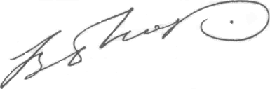

М.М. Бахтин, или Поэтика культуры
В.С. БиблерВВЕДЕНИЕ
От автора
Эта работа закончена примерно восемь лет назад. За истекшее время мои взгляды, конечно, в чем-то изменились, мое понимание книг Бахтина, возможно, и не углубилось (кто это может утверждать), но куда-то отклонилось от прежнего средоточия.
Однако изменять старую работу - значит пытаться пустить время вспять, переиграть прошлое. Это невозможно и нечестно (хотя порой очень хочется). Но и отказаться от меня сегодняшнего также невозможно. Я пошел на странный рискованный компромисс между этими двумя "невозможно". - Ввел в неизменный старый текст какие-то повторы, варианты формулировок, новые розыгрыши и повороты старых мыслей. Новое и старое - не вытесняя друг друга и не признаваясь в своей разнородности, теснятся где-то рядом, может быть, усложняя текст, но не прерывая единой линии, лишь выгибая ее в более сложно закрученную спираль. Так, во всяком случае, - по замыслу.
Основная содержательная вариативность заключается в следующем:
Моя книга имеет как бы два полюса: идею всеобщности гуманитарного мышления (как ее понимал и осуществлял Бахтин) и - идею бахтинской поэтики культуры. Две эти идеи постоянно корреспондируют между собой, сосредоточивая текст то вокруг одного, то вокруг другого полюса. Мне кажется, что такая двуфокусность создает внутреннюю напряженность, "эллиптичность" целостного изложения. Так это или нет - судить читателю.
Теперь - самое основное. Предлагаемая работа имеет две сквозные задачи. Во-первых, реконструктивную: введение в чтение и адекватное (так мне представляется) понимание книг М. М. Бахтина. Во-вторых, конструктивную: наметить соотношение между поэтикой культуры (в этом я вижу основной смысл творчества Бахтина) и - философской логикой культуры, как я ее понимаю. Эта вторая задача существенна для развития и осмысления ("со стороны") моих основных философских идей.
И - последнее: о "речевом жанре" этой работы (если вспомнить оборот самого Бахтина).
Это философские очерки, то есть Бахтин интересует меня как философа и интересует как философ, точнее, - как мыслитель, работающий на грани философии и - филологии, и литературоведения, и (см. Очерк второй).
Соответственно, я не буду вводить какой-то новый, свежий материал, не буду открывать некие неизвестные биографические подробности; моя цель - понять цельность идей Бахтина, их неразложимое ядро, откуда излучаются все детали, понятия, повороты мысли. Мне необходимо показать, как опасно для такой цельности разложение концепции Бахтина на отдельные расхожие термины и заклинания.
Но - уже в плане моего собственного философского подхода - для того, чтобы выявить эту целостность, мне представляется существенным диалогически общаться с Бахтиным, - внимательно выслушивать его собственный голос, его развернутую речь, приводить множество продолжительных фрагментов этой речи, отвечать на его вопросы, задавать вопросы бахтинскому тексту, входить в замкнутый круг его произведений. Может быть, такой подход будет непривычным и трудным, но мне хотелось заранее предупредить читателя, с чем он будет иметь дело.

Вступление
В этой работе я хочу сформулировать исходную установку чтения и понимания книг М. М. Бахтина.
Такая установка существенна. Стоит занять, приступая к чтению Бахтина, не тот угол зрения, стоит ожидать от "Проблем поэтики Достоевского" или от "Творчества Франсуа Рабле", скажем, - обычного литературоведческого анализа или даже - обычной "культурологии", и сразу все обаяние этих книг, вся их сила бесследно исчезнут. Даже так: мы будем тогда читать не те книги, которые написал Бахтин.
Необходимая установка для "правильного" чтения книг Бахтина состоит, на мой взгляд, в следующем тезисе:
Смысл творческой жизни Бахтина может быть наиболее полно и точно определен так: открытие основ гуманитарного мышления, понятого в его действительной, онтологически значимой всеобщности.
Реальное воплощение этого замысла - созданная в книгах М. М. Бахтина - поэтика культуры.
Развивая этот тезис, я буду исходить из предположения, что идеи Бахтина могут быть поняты по истине, если представить их как круги, расходящиеся из одного центра, одного года - 1929.
Круги эти расходятся и к году 1918 (году первых публикаций) и к году 1971 (последние опубликованные заметки), или - к 1975 году, году смерти.
Чтобы обосновать возможность и необходимость такого подхода, продумаем для начала своеобразие самого феномена "М. М. Бахтин" в культуре XX века, очертим основное начало мыслей Бахтина. Начало - и в смысле первоисточника, излучающего центра, и в смысле - образующего принципа всех его работ.
Очерк первый
I. Даты и смысл
Михаил Михайлович Бахтин (1895-1975) характерен для мышления XX века. И - одновременно - М. М. Бахтин исключителен, единственен. Неповторим. Необъясним из потока "влияний", "сходств", "заимствований".
Сопряжение этих двух особенностей следует обосновать, объяснить, наполнить реальным содержанием. Необходимо - потому, что смысл такого сопряжения многое может раскрыть в основном пафосе книг Бахтина.
Вообще-то, в общей форме, сказанное относится не к одному М. М. Бахтину. К каждому крупному культурному феномену. Всегда можно (при желании) обнаружить в данных текстах - фразы, обороты, утверждения, даже - отдельные фрагменты, на что-то похожие и что-то повторяющие. Похожие, - если разобрать целостный феномен на разрозненные блоки, цитаты, архетипы и т. д. И - всегда обнаружится, что - основное осталось непонятным, всегда остается тайна того последнего сдвига, в котором кристаллизуется нечто цельное и замкнутое, только себе обязанное своим бытием и своим своеобразием, нечто, несводимое к воздействиям и силам, извне формирующим этот феномен.
Но дело, конечно, не в общей форме и не в декларативном утверждении этого тезиса. Он имеет смысл лишь в конкретном, реальном обосновании.
Сейчас проверим его на творчестве М. М. Бахтина. К каким бы выводам мы ни пришли, анализ возможностей понять "речь и мысль" Бахтина, исходя из "эволюции воззрений", исходя из комплекса "влияний и воздействий", будет иметь необходимое и эвристически действенное значение.
Предполагаю, что "отрицательный результат" - обнаружение того, что во взглядах М. М. Бахтина почти ничего не поймешь "эволюционным" и "сравнительно-историческим" методом, - даст особенно много. Но постараюсь честно добиваться результата позитивного...
(В этом анализе я опираюсь, помимо своих собственных предположений и сопоставлений, на биографический очерк "Михаил Михайлович Бахтин" В. Кожинова и С. Конкина в сб. "Проблемы поэтики и истории литературы. К 75-летию со дня рождения и 50-летию научно-педагогической деятельности М. М. Бахтина" (Саранск, 1973). Использованы также примечания к сборнику работ Бахтина "Эстетика словесного творчества", составленные С. С. Аверинцевым и С. Г. Бочаровым, статья Г. Суперфина (о соотношении воззрений Бахтина и его невельского друга Л. В. Пумпянского) в "Трудах по знаковым системам", вып. 5, и на некоторые иные материалы1. Только хочу сказать сразу же: весь этот материал я буду поворачивать по-своему, в разрезе основных задач своей работы, включать его в логику своих сопоставлений, - а поэтому и за все предлагаемые здесь выводы и обобщения авторы использованных материалов никакой ответственности не несут.)
***
Мысль М. М. Бахтина вобрала в себя пафос русской и мировой культуры 10-х годов XX века (в особенно живой связи с Вячеславом Ивановым в России и Германом Когеном в Германии); эта мысль сама стала одним из средоточий культуры 20-х и начала 30-х годов. И это - вне зависимости от того, насколько знали в 20-е годы работы Бахтина и от того, в какой мере они могли влиять на реальное развитие культуры века. Это так - в ретроспективном понимании важнейших диалогов эпохи, в понимании того, что есть XX век в истории культуры (а своеобразие культуры нашего века пока что исчерпывается его первым тридцатилетием...)2.
Теперь попробуем растянуть выше сформулированное утверждение в линию "жизни и творчества", в содержательный "дефис" между двумя датами.
Михаил Михайлович Бахтин родился в Орле 17 ноября 1895 года, в родовитой дворянской семье (...в семье банковского служащего средней руки). В 1913 году окончил гимназию в Одессе; учился на историко-филологическом факультете Новороссийского (ныне - Одесского) университета, затем перешел в Санкт-Петербургский (ныне - Ленинградский) университет, который закончил в 1918 году.
Университетские годы... Уже в этот момент обычная логика биографического очерка начинает буксовать3. Здесь, казалось бы, - самое место - "влияниям" и "воздействиям". Однако все авторы, раздумывающие об университетских годах Бахтина, недоуменно обходят вопрос об учителях. Да, - учился у знаменитого эллиниста Ф. Ф. Зелинского, но никакой близости их воззрений найти никак нельзя. Да, - хорошо отзывался о логике А. И. Введенском. Но - ученик? Никоим образом.
И это приходится сказать не только о профессорах университета, но и о действительно крупнейших мыслителях и творцах "серебряного века". Возможно, конечно, наметить некие связи и близости с "символизмом" (Вячеслава Иванова) или религиозными исканиями 10-х годов. Но только связи эти очень неопределенны, и попытки представить воззрения Бахтина в четком круге мыслей его "учителей" ни к чему хорошему не приводят, - разве что попытки эти могут исказить и усреднить до неузнаваемости воззрения Бахтина. И дело не только в недостатке материалов, прямых свидетельств. Дело - в самой исходной уникальности мышления Бахтина.
Вот записи его лекций о Вяч. Иванове из курса по истории русской литературы, прочитанного в Витебске где-то в 20-м или 21-м году. Полная независимость взгляда; точка зрения лектора расположена не на известных нам высотах, но где-то в совершенно самостоятельном мыслительном кругозоре.
Символизм В. Иванова коренится - по Бахтину - в трагедийности (и - насущности) сопряжения разных ликов одной личности. - Ликов, в соотнесении своем (диалоге?) выражающих взаимное общение трех начал: восхождения, - нисхождения, - хаоса. И - вновь - восхождения... Преднайденная культура того артикулированного языка, в котором осуществляется Ивановым "гениальная реставрация всех существовавших до него форм" речи, противопоставлена (Бахтиным) - внутренней речи, чреватой новыми формами4. Так Вячеслава Иванова еще никто не понимал. Взгляд М. М. Бахтина "вненаходим" и по отношению к воззрениям самого Иванова, - тем глубже, впрочем, в них проникая. Все заставляет предположить, что "угол зрения" Бахтина расположен в них... ну, к примеру, - в году 19295. Между тем лекции эти отнюдь не итог напряженных, обновляющих размышлений, они возникают вполне банально, - как некая реконструкция университетских конспектов.
Или - единственная статья М. М. Бахтина, известная из его невельского периода6,- "Искусство и ответственность" (напечатана в однодневном альманахе "День искусства", Невель, 13 сентября, 1919 года) (Эстетика..., с. 5-6), через год после окончания университета.
Влияние снова объясняет очень мало. Я еще буду говорить о связях "М. М. Бахтин - Герман Коген", но именно в этой первой статье видно, в какую едкую, разъедающую эссенцию втянуты здесь некоторые излюбленные схемы Г. Когена. Все претворено. Здесь нет когеновских ступеней восхождения к "чистому чувству" (см.: Ästhetik des reinen Gefühls), здесь вообще немецкая идея духовного "восхождения" вытесняется типично бахтинской и - для этих лет - только бахтинской идеей одновременного соположения жизни и искусства, их необходимого вне-находимого бытия, их несводимости друг к Другу, но, вместе с тем, и обязательно, их соединения в личности, понимающей их "взаимную вину и ответственность". "Личность должна стать сплошь ответственной: все ее моменты должны не только укладываться во временном ряду ее жизни, но проникать друг в друга в единстве вины и ответственности" (там же, с. 6).
Искусство существенно как раз в своей предельной несводимости к жизни; жизнь - в своей отделенности от искусства. (Такое могли утверждать многие до Бахтина и помимо Бахтина; правда, обычно эти утверждения формировались в различных концепциях).
Но... вот где начинается собственно Бахтин, вне-эволюционный Бахтин (1919, 1929, 1949, 1969 годов...): "Искусство и жизнь не одно, но должны стать во мне единым, в единстве моей ответственности" (там же, с. 6), в постоянном взаимном "диалоге", - скажем мы из 1929 года, из 1991 года. И это будет не модернизацией, но раскрытием пафоса мысли Бахтина, той "далью свободного романа", которую и сам Бахтин еще неясно различал "сквозь магический кристалл" своей, предвосхищающей собственное развитие, мысли.
Вспомним одно из более поздних воплощений этого пафоса одновременности разновременных этапов: "Достоевский, в противоположность Гёте, самые этапы стремился воспринять в их одновременности, драматически сопоставить и противопоставить их, а не вытягивать в становящийся ряд. Разобраться в мире значило для него помыслить все его содержания как одновременные и угадать их взаимоотношения в разрезе одного мгновения" 7 (курсив мой. - В. Б.). Это - не столько о Достоевском, сколько о Бахтине. Это - одно из наиболее откровенных автобиографических признаний, раскрывающих смысл того видения мира, что так ясно выступило уже в статье 1919 г.
Конечно, обнаружение более ранних материалов, относящихся, скажем, к 1912 или к 1916 году, позволило бы, наверное, найти прямые "влияния" и духовные "воздействия", но вряд ли здесь что-либо прояснилось бы по существу.
Поясню это сильное утверждение.
Между 1916 годом и годом 1919 произошел в России революционный сдвиг. Его воздействия могли быть самыми различными, и характер этих воздействий на М. М. Бахтина до конца не ясен. Но, в любом случае, - для всех ответственных мыслителей России это был глубокий внутренний сдвиг. Интегральная суть такого внутреннего сдвига выражалась прежде всего в том, что основные воззрения, усвоенные в предвоенные и предреволюционные годы (как некий багаж, арсенал, спектр знаний и убеждений), или вообще уходили прочь, теряя всякое свое значение в диких передрягах быта, или же - у самых органичных философов и поэтов - становились феноменом внутреннего решения, - выбора жизненного поведения в перипетиях авантюр и уклонений. Как сказали бы позже, где-то на рубеже 40-х-50-х годов, - все знания и усвоенные духовные архетипы переплавлялись в мгновенном экзистенциалъном отказе, в котором вся жизнь заново - со всеми ее идеями и смыслами - становилась "следствием" собственного риска и собственной ответственности.
Содержанием любых идей и смыслов, - после такого решения и такого выбора, - оказывалось не то, что было значением этих идей до решения, в эволюционном развитии и становлении, - но их детонация в последующей судьбе и мышлении человека.
Чем более знакомишься с самыми ранними работами М. М. Бахтина и чем более проникаешь в единый пафос его мышления на протяжении всей его жизни, - тем яснее становится, что именно выбор судьбы, произошедший где-то в 1918 году, составляет замысел этого пафоса, - замысел, к счастью, не выговариваемый полностью в самых детальных и воплощенных его произведениях. Замысел - только в этих произведениях (а не во внешних воздействиях и эволюциях) имеющий реальный смысл. Возникает некая целостность, на века - в прошлое и в будущее - единовременная.
Этот феномен точно выразил, в том же 1918 году, Борис Пастернак: "какое, милые, у нас тысячелетье на дворе?" Смысл такого восклицания - не в "отвлечении от современности", но - в ощущении, что в очаге этого дня и этого мгновения выплавляется и решается судьба, - на столетия вперед и на столетия назад. Столетия назад и столетия вперед решаются мной, - для меня, в русле того последнего вопроса бытия, которым я болен, - вот сейчас, в сутолоке этого повседневья. "Буран не месяц будет месть. / Концы, начала заметет. / Внезапно вспомню: Солнце есть. /Увижу: свет давно не тот"8.
Повторю: одни и те же идеи в 1913 и в 1919 году имеют совсем иной смысл. В 1919 году их смысл: личная ответственность за судьбу культуры - в будущее и в прошлое.
Уже в кратком анализе двух фрагментов М. М. Бахтина мы убедились, что смысловое понимание резко отличается от понимания эволюционно-генетического. Чтобы понять смысл идей М. М. Бахтина 1919 или 1921 года приходится обращаться не к году 12-му или даже 1916-му, но к году 1929-му. К тому эпицентру идей Бахтина, из которого (если не говорить о том исходном сдвиге, в котором возник первоначальный, еще неоформленный "магический кристалл", то есть о годе 1917-1918-м, но говорить о самой структуре этого кристалла, о его смысловом центре...) излучались все мысли Бахтина, вся его "философия культуры", - ив вариантах 1919 года, и в вариантах (фрагментах) 1971 года.
Полагаю, что культурный феномен вообще не имеет эволюционного вектора. Такой феномен всегда "кристалличен". И, даже, - сам замысел работы художника или философа, вообще мыслителя-гуманитария и состоит в том, чтобы придать своему произведению (и всем произведениям, созданным в течение жизни) кристаллическую структуру.
Итак, - год 1918 и вообще Невельский период. ...Закончив университет, М. М. Бахтин оказался в небольшом городке Невеле (ныне Псковской обл.). В этом городке, где Бахтин преподавал в Единой трудовой школе, завязывается тот первый духовный узел, который навсегда вошел в сознание и мысль будущего автора "Проблем поэтики Достоевского"...
Подробности, - как это своеобычно жизни Бахтина, - неизвестны, главное ушло в туман. Но кое-что вспомнить возможно. В Невеле сформировался тот неразрывный круг Собеседников, что соединились с Бахтиным единой (и - у каждого - своей) судьбой... Чай и споры до утра... Кантовский семинар... Напряженность духовного взаимообогащения. Быстрое созревание своих " кружковых" (или - чисто личных?) ценностей и замыслов, - на всю жизнь, на всю судьбу. В России духовная кристаллизация личности очень часто и очень значимо происходила в таких кружковых замыканиях.
Возможно предположить, что духовная жизнь Невельского кружка в основном сосредоточивалась в диалоге (освоение, - размежевание, - спор) с пафосом Марбургской школы неокантианцев, Германа Когена, - в первую голову. В этом диалоге решающую роль играли М. М. Бахтин и М. И. Каган9.
В Марбургской школе и Бахтин, и Каган находят прежде всего то, что примерно в эти годы нашел и воспринял Борис Пастернак, также - ученик Германа Когена: интерес к тем неделимым атомам культуры, в которых все ее определения, - логические, научные, эстетические, личностные - выступают в неразделимом единстве. Идея "бесконечно малого" у Германа Когена и идея "элементарных математических исчислений" М. И. Кагана пронизаны вниманием к "деталям", - о которых и говорить не стоит, - как к истокам человеческого мышления, причем мышления определенной исторической эпохи. Борис Пастернак писал об этих особенностях Марбургской школы (привожу эти слова почти полностью, потому что они точно выявляют некоторые исходные замыслы Невельского кружка, и потому, что подмеченные Пастернаком особенности плодотворно, хотя и опосредованно, сказались в идеях М. М. Бахтина):
"Не подчиненная терминологической инерции, Марбургская школа обращалась к первоисточникам, то есть к подлинным распискам мысли, оставленной ею в истории науки. Если ходячая философия говорит о том, что думает тот или другой писатель, а ходячая психология - о том, как думает средний человек; если формальная логика - как надо думать в булочной, чтобы не обсчитаться сдачей, то Марбургскую школу интересовало, как думает наука в ее двадцатипятивековом непрекращающемся авторстве, у горячих начал и исходов мировых событий.
В таком, как бы авторизованном самой историей, расположении, философия вновь молодела и умнела до неузнаваемости, превращаясь из проблематической дисциплины в исконную дисциплину о проблемах, каковой ей и надлежит быть.
Вторая особенность Марбургской школы заключалась в ее разборчивом и взыскательном отношении к историческому наследству. Школе чужда была отвратительная снисходительность к прошлому, как к некоторой богадельне... Историю в Марбурге знали в совершенстве и не уставали тащить сокровища за сокровищем из архивов итальянского Возрождения, французского и шотландского рационализма и других плохо изученных школ. На историю в Марбурге смотрели в оба гегельянских глаза, то есть гениально обобщенно, но в то же время и в точных границах здравого правдоподобья.
Так, например, школа не говорила о стадиях мирового духа, а, предположим, о почтовой переписке семьи Бернулли, но при этом она знала, что всякая мысль сколь угодно отдаленного времени, застигнутая на месте и за делом, должна полностью допускать нашу логическую компетенцию... Обе эти черты самостоятельности и историзма ничего не говорят о содержании когеновой системы, да я и не взялся бы говорить о ее существе.
Однако обе они объясняют ее притягательность. Они говорят о ее оригинальности, т. е. о живом месте, занятом ею в живой традиции для одной из частей современного сознания"10.
Влияние марбуржцев на Невельский кружок имеет именно такой - пастернаковский - смысл. Это - смысл "притягательности", духовной близости, общего восприятия культуры, но не смысл воздействия неких логических и теоретических содержаний. (Выше я выделил курсивом те мысли Пастернака о Марбургской школе (прежде всего, - о самом Германе Когене), которые позволяют многое понять и в исходном замысле гуманитарного мышления Бахтина.
Не буду сейчас повторять и растолковывать эти мысли, - читатель может их еще раз фиксировать, - в будущем он этот пафос встретит в книгах Бахтина.
Но как с содержанием философии неокантианцев Марбургской школы?)
Безусловно, интерес к Г. Когену, особенно к его этике и эстетике, на долгие годы сохранился в мышлении Бахтина. В письмах он часто просит прислать ту или другую книгу Когена; замыслы нескольких ранних работ связаны с кругом Марбургских исследований. Так, почти законченная книга Бахтина "Субъект нравственности и субъект права" (1921 год), очевидно, в какой-то мере отталкивается от известной книги Г. Когена "Кантовское обоснование этики" (Kants Begrundung der Ethik). Но работа эта (как очень многое, написанное Бахтиным) света не увидела, - судить здесь трудно. Если же судить о том, что осталось, что стало текстом, - а "судьба хитроумна, но не злонамеренна"11 - то прямых влияний Когена в книгах Бахтина (даже в статьях 20-х годов) найти невозможно. - Есть похожий культурный пафос. Он близок в воззрениях Когена и Пастернака, в интуициях Когена и Бахтина. Но связь идей здесь очень и очень своеобразна. Это - предельная близость, сближение абсолютно различных духовных вселенных.
Замечание это существенно. Существенно для целостного понимания моего замысла в этом разделе. Пока я говорил о своем стремлении обнаружить смыслообразующий момент не "позади" воззрений Бахтина, но где-то в фокусе самих этих воззрений (1929 год).
Дело, однако, не только в том, чтобы показать невозможность эволюционного подхода (в спектре влияний и заимствований...) к пониманию такого феномена культуры, как мышление М. М. Бахтина, - то есть не только в том, чтобы понять феномен "М. М. Бахтин" в русле его собственных культурологических идей. Моя задача в этом вводном параграфе сложнее и напряженнее. Я пытаюсь локализовать те воззрения Бахтина, о которых речь пойдет в следующих разделах, на основе своего рода мысленного эксперимента. Уникальность мышления Бахтина раскрывается здесь в точках наибольшей близости его идей - идеям современников и "учителей". Более того, я даже несколько утрирую, обостряю эту близость (прежде всего - взглядов Бахтина и Германа Когена), довожу ее до некоей неделимой линии и - как раз на этой линии обнаруживаю, что "совсем-совсем близкие" (по своему формальному содержанию) воззрения лишь псевдотождественны, а в действительности (по смыслу своему) являются сближенными точками совсем различных идейных миров, совершенно различных духовных замыслов. Тем самым раскрывается наиболее точно неповторимый смысл тех идей Бахтина, что содержательно предстанут перед нами в разделах 2-3-4. Вместе с тем эти идеи будут наиболее точно представлены в континууме гуманитарных концепций конца XIX - начала XX века.
Вне такой локализации все наши последующие рассуждения об уникальности идей Бахтина не были бы достаточно обоснованы.
Оговорю только, что здесь я осуществляю лишь схему такого эксперимента и возможность детальных исследований оставляю читательской работе.
Ограничусь - в этой связи - одной линией сближения.
В статьях 20-х годов и в более поздних работах Бахтин не раз возвращается к мысли Г. Когена об "эстетической любви", об эстетическом переживании, "сродном любви", как основе того "чистого чувства" (reine Gefühl), что свойственно искусству, эстетическому началу в целом12. Ясно, что отношение Бахтина к этим воззрениям Когена гораздо более сочувственное и родственное, чем к другим представителям "экспрессивной эстетики", - теории вчувствования (Т. Липпсу, К. Гроссу, Р. Фишеру и другим).
И дело тут, конечно, не только в исходном культурном пафосе. Есть тут и содержательная близость. Но, - присмотримся, - какого толка?
Идея "эстетической любви" с особой внимательностью развита Г. Когеном в книге "Эстетика чистого чувства" (Ästhetik des reinen Gefühls), - третьей части "Общей системы философии".
Остановлю внимание на нескольких идейных узлах.
а) Понимание эстетики возможно лишь в едином поле культуры, в ее связях с этикой и логикой. Вне такого взаимодействия (эстетика - этика - логика), вне их общения (но не общности) нет и чистого эстетического чувства. Искусства нет там, где нет разума и где нет этоса13.
б) Главное препятствие для того, чтобы понять искусство и эстетическое начало в целом, состоит в упрямом стремлении свести "эстетически значимое чувство к феномену "удовольствия и неудовольствия", наслаждения и отвращения (Lust und Unlust)". Там, где есть экстаз "удовольствия и неудовольствия" - как раз там нет эстетического чувства. Удовольствие и неудовольствие необходимо осознать, провести через искус разума, - вот тогда может появиться очищенное (то есть эстетическое) чувство. Вне теоретической культуры нет и культуры эстетической, художественной.
в) Основой такого интеллектуального (= познавательного) очищения является переход от "чуда осознаваемости" к "загадке сознания" (от "Bewußtheit" к "Bewußtsein"). В мифе человек воспринимает мир под знаком всеобщей, рассеянной осознаваемости14 (Bewußtheit), - "деревья и ручьи одушевляются и одухотворяются". Это - чудо, и его надо бестрепетно принимать; чудом надо жить. Лишь тогда, когда чудо становится загадкой, трудностью для разума, лишь тогда идея "осознаваемости" переходит в идею сознания. Сознание и есть "одухотворенность" и "одушевленность" как нечто странное, непонятное, загадочное. В этот момент, в этом переходе и возникает собственно эстетическое начало. В той мере, в какой человек ставит вопрос о возможности понимать эту всеобщую одушевленность, "он превращает чудо - в загадку, миф - в теоретическую культуру, осознаваемость - в сознание"15.
Тогда загадочность (причастности к моей душевной жизни других, иных людей) начинает меня тревожить, мучить, вызывает мое стремление (и невозможность, - ведь тогда исчезнет предмет стремления) - слиться с иным (а оно бывает иным?) сознанием.
Тогда возникает "чистое эстетически значимое чувство".
г) И предельный смысл его - "эстетическая любовь". "Эстетическая любовь" возникает - по Г. Когену - в "самораздвоении сознания", - в необходимости и желании сознавать (познавать) другого (...человека, дерево, небо...) как свое другое "Я", так как сознаешь себя; и одновременно, - осознавать его (другого человека, небо, дерево...) как извечно чужого, иного, отдельного от меня, могущего уйти от меня... Эстетическая любовь окончательно очищает чувство, дает ему собственно эстетический смысл. Две доминанты характерны для эстетической любви: (1) предельное одиночество, - когда я один, я лишен того, кто более "Я", чем я сам; (2) предельное преодоление одиночества, - в любви мое "Я" удвоено, покидает свою извечную одиночку (камеру).
"В этом, столь же центральном, как и универсальном смысле мы стремимся обнаружить в любви тот аффект, который является не только предварительным условием эстетического чувства, но тот, который сам преобразуется в эстетическое чувство"16.
д) И в этом смысле "эстетическая любовь" есть стремление к "сообщению" (Mitteilung). - Стремление сообщить себя (а не некую "информацию"), как весть, обращенную к "Ты". - Стремление воспринять тебя, твое "Ты", - как весть (сообщение), обращенную к моему "Я". В этом двойном феномене эстетической любви ("чистого чувства"), - смысл каждого художественного образа. "Значимость образа есть первоначально предназначенность к сообщению"17.
В "эстетической любви" человек больше самого себя и поэтому "высшее понятие прекрасного должно соответствовать высшему понятию "Я - сам", или - понятию "Я - сам" как высшему понятию"18.
Ясно, что учение Г. Когена о "чистом чувстве" (как основании эстетики...) очень близко излюбленным идеям М. Бахтина.
Те, кто читал Бахтина, вспомнят, а тем, кто не читал и кто читает эту мою работу как "Введение" к книгам М. М. Бахтина, сообщу заранее:
Многое в концепции Г. Когена напоминает бахтинское понимание эстетики, как целостного сопряжения (и вместе с тем - преодоления!) этических и познавательных определений.
В этике - утверждает Бахтин - я соединяюсь с нравственными устремлениями других людей; в познании (в логике...) я отождествляюсь с их гносеологическими устремлениями. Но и в этике, и в логике я теряю в человеке - субъекта; за его стремлениями, обобщенными или соединенными с моими стремлениями, по принципу - "таков человек", "вот что человеку (вообще) свойственно...", - я не могу различить непохожую на меня, неповторимую личность. За общностью исчезает различие, за "системой желаний" целостное, замкнутое Я (Ты...), - но, значит, исчезает и необходимость, насущность моей встречи с ним, его встречи со мной.
Только в поэтике, только в эстетическом отношении другой человек (Ты, мое иное Я...) сохраняет для меня свою само-бытийность, он - целостен, отстранен от меня, не равен своим страстям, не производен по отношению к своим (или - моим) частным (или - всеобщим) целям; он замкнут "на себя", но значит он разомкнут на онтологически значимую встречу со мной. Он - "вненаходим" по отношению к моему бытию и именно поэтому (в самом эстетическом акте) загадан мне, вступает со мной в общение, но не в "обобщение" (логика, в понимании Бахтина...) и не в "приобщение" (этика). В эстетике я человека не "познаю"; не исполняю некий "долг" и не совершаю "жертвы"; я с ним - на равных, как "с самим собой... " - общаюсь.
Существенно, что эта целостность, отдельность, "ино-бытийность" другого человека могут осознаваться и действительно осуществляться только в напряженных творческих усилиях моего (к нему) эстетического отношения, моего художественного деяния.
"Специфически эстетической и является эта реакция на целое человека-героя, собирающая все познавательно-этические определения и оценки и завершающая их в единое и единственное конкретно-воззрительное, но и смысловое целое" (Эстетика..., с. 8).
Только в искусстве я вижу и слышу, и понимаю другого человека не в слиянии со мной, с какими-то моими делами и душевными движениями, и умственными затеями, - но воспринимаю его полностью отдельно, целостно, самостоятельно существующим и именно поэтому, именно в этой, впервые (в искусстве) мной открытой, его целостности и "вненаходимости", он, этот другой человек, - действительно мне непонятен, странен, насущен, необходим, - впервые способен со мной общаться, но не "делиться".
"Отсюда непосредственно вытекает и общая формула основного эстетически продуктивного отношения автора к герою - отношения напряженной вненаходимости автора всем моментам героя, пространственной, временной, ценностной и смысловой вненаходимости, позволяющей собрать всего героя, который изнутри себя самого рассеян и разбросан в заданном мире познания и открытом событии этического поступка, собрать его и его жизнь и восполнить до целого теми моментами, которые ему самому в нем самом недоступны, как-то: полнотой внешнего образа, наружностью, фоном за его спиной, его отношением к событию смерти и абсолютного будущего..." (там же, с. 15).
Как будто очень похоже на когеновское "самораздвоение сознания", на когеновское укоренение эстетического начала в предельном одиночестве человека, целиком отстраненного (в искусстве) от другого человека, и - в том же художественном акте, - полностью ориентированного на "Ты...", на "со-общение" между Я и Ты...
Похоже, но... Если взять "эстетическое" Бахтина вне идеи эстетического (художественного!) оформления; вне технологических "доведений" героя до абсолютной "вненаходимости";
вне осуществляемого автором замыкания героя "на себя", - в моем (авторском) видении его рождения, и смерти, и пространственной объемности; вне всех этих чисто бахтинских (литературоведческих? филологических?) "деталей", тогда Бахтин - это "почти" Коген, но... только, - это уже не Бахтин. Все когеновские логические ходы продиктованы были неким внеэстетическим очищением эмпирического чувства (эстетическое рождалось лишь на инерции гносеологического движения). У Бахтина все внимание сосредоточено на философском значении самого (детально воспроизведенного) эстетического (художественного) акта, продиктованного ситуацией "автор-герой".
Здесь - в отличие от Когена - эстетический пафос - не аналог гносеологического и этического, но - отстранение от этического и познавательного начал и, - как раз поэтому, - возможность диалогического сопряжения между эстетически завершенным "Я", - "Я" этическим - и "Я" познавательным... В "выводах" возможно найти - иногда поражающую - "похожесть". Но мы (после Гегеля) знаем, что смысл вывода - в движении к нему. А пафос движения и обоснования, - даже в нашем кратчайшем сопоставлении, - у Когена и Бахтина резко различны.
Вновь - уже известная нам ситуация.
Чужие идеи, погруженные в едкую эссенцию бахтинской мысли, - так резко переосмысливаются (оказываются исходящими из такого неожиданного, чисто бахтинского, замысла), что самое опасное в нашем анализе соблазниться их внешней похожестью "на.,."; в нашем случае - на Германа Когена.
...Вот еще одна "похожесть". Когеновская "эстетическая любовь". Ведь у Когена (как у Бахтина?) "эстетическая любовь" феномен "необходимости" "другого", а значимость эстетического образа есть "предназначенность к сообщению". Ведь и у Бахтина (как у Когена?) вне родственной симпатии к "другому" эстетическое начало невозможно. Все очень похоже. И опять-таки все здесь иное. Бахтин сочувственно цитирует слова Когена об "эстетической любви" (Эстетика..., с. 73-75, 80), но цитата эта приведена в контексте бахтинской критики "эстетики вчувствования" ("экспрессивной эстетики"). И Коген, хотя и в извиняющих оговорках, включен Бахтиным в критикуемую им "экспрессивность".
Конечно, эстетическая любовь это нечто, очень близкое - по Бахтину - к делу, поскольку здесь основное уже не "вчувствование" (не переселение в тело, и в чувства, и в мысли другого), но симпатия к "нему" как к другому, - дорогому и близкому мне именно как другой, на меня не похожий, мне насущный. Симпатическое влечение сразу же становится невозможным, если я просто отождествляюсь с "предметом любви", если я потеряю свою "вненаходимость". Любовь возможна, говорит Бахтин, только к "другому", и всякое отождествление снимает возможность любви, эстетической любви, - в первую голову. Это - так.
Но... сразу же начинаются оттенки, которые, сопрягаясь и сливаясь, - дают резкое отличие воззрений Когена и Бахтина. Делают эти "похожие мысли" - феноменом совершенно иных "форм мышления". У Когена - феноменом обычного научно-философского мышления XIX века (хотя взятого в момент кризиса). У Бахтина - феноменом мышления "гуманитарно-филологического", - как знамения нового разума (разума - общения разумов), возникающего в XX веке.
Вот - исходное отличие. Принимая "эстетическую любовь" Когена, Бахтин переносит центр тяжести в активность "автора" (даже если это - автор любви...). Для него "эстетическая любовь" - это вообще не некое наличное "состояние", - но формирующий творческий акт, вне которого "другой" (Ты...) неразличим.
"Симпатически сопереживаемая жизнь оформляется не в категории я, а в категории другого, как жизнь другого человека, другого я, это существенно извне переживаемая жизнь другого человека, (и внешняя и внутренняя) (Эстетика..., с. 74).
"Не изнутри ее (сопереживаемой жизни. - В. Б.) создается и оправдывается эстетическая форма как ее адекватное выражение, стремящееся к пределу чистого самовысказывания..., но извне навстречу ей идущей симпатией, любовью, эстетически продуктивной; в этом смысле форма выражает эту жизнь;
но творящей это выражение, активной в нем является не сама выражаемая жизнь, но вне ее находящийся другой - автор, сама же жизнь пассивна в эстетическом выражении ее. Но при таком понимании слово "выражение" представляется неудачным и должно быть оставлено как более отвечающее чисто экспрессивному пониманию (особенно немецкое Ausdrück); гораздо более выражает действительное эстетическое событие термин импрессивной эстетики "изображение" как для пространственных, так и для временных искусств - слово, переносящее центр тяжести с героя на эстетически активного субъекта - автора.
Форма выражает активность автора по отношению к герою - другому человеку..." (там же, с. 75).
В своем цитировании я давно вышел за пределы первого оттенка, - идеи "эстетической активности" Бахтина в отличие от идеи эстетического "состояния" у Германа Когена. Оттенки отличий уже наслоились друг на друга. Здесь, и бахтинская идея формы, - как формирующей силы (силы автора...), доводящей предмет (?) эстетической любви до полной вненаходимой законченности, завершенности. Здесь и сама идея "эстетической завершенности", замкнутости, очерченности эстетического феномена, понимаемого в его целостном (от рождения до смерти, от смерти - к рождению, от времени - к вневременности) бытии. Здесь и, на мой взгляд, самое существенное для Бахтина: предметом общефилософского анализа является некий феномен, который в системе воззрений Когена был бы (ибо его вообще нет...) лишь сугубо частным, особенным, лишь для "литературоведа", но не для систематического философа (так называл себя Коген) интересным: произведение, причем острее и убедительнее всего, и наиболее значимо для всеобщих заключений, - "произведение литературное", даже, еще суженней, - роман.
Все извлеченные нами фрагменты взяты из книги Бахтина "Автор и герой"19 (20-е годы), и все они сформулированы Бахтиным в процессе размышления над сутью романного текста, над проблемами "эстетики словесного творчества".
И это не случайность, это нельзя истолковать в обычном плане: дескать, общие положения Когена М. М. Бахтин "применил" к литературному материалу, - эти общие положения конкретизировались, уточнились, и - в итоге - получилось нечто иное, чем у Когена (в смысле: уточненное, более частное...). НЕТ, так не получается.
Все дело в том, что идеи Бахтина не конкретизируют идей Германа Когена, они их переосмысляют; из особенного предмета Бахтин выводит (?) иное всеобщее, характерное только для гуманитарного мышления. "Произведение" Бахтина (в понимании Бахтина) есть некая конструкция, до которой исследователь-гуманитарий должен мысленно довести любой текст (предварительно доведя до "текста" - любой поступок...), чтобы выявить смысл эстетического феномена и - не только эстетического феномена, но - смысл субъекта, личности, человеческого Духа. Если не понимать общение людей через призму возможного "произведения" (как существенной формы их общения), то вообще невозможно, полагает Бахтин, - ни понять человека, ни реально общаться с ним, ни понять суть эстетического начала. И как раз такое "литературоведческое" понимание эстетического начала, - и не только эстетического начала, но и начала гуманитарного в его целостности, - составляют "непохожий", "невозможный" (для Когена) эфир бахтинского мышления.
(Сейчас я не касаюсь тех преображений литературоведческого "речевого жанра" - в собственно "философский"; философского - в собственно "филологический"; филологического - в собственно "культурологический", о которых я буду писать дальше. Сейчас существенно иное.)
Идея М. М. Бахтина, идея самого отношения между "всеобщим" и "особенным" в построениях Бахтина настолько своеобычна, что наш читательский темперамент, ориентированный на стереотипное понимание, легко ошибается: в ином всеобщем видит лишь феномен частной конкретизации обычного научно-теоретического, или обычного (в смысле: характерного для XIX века) философского "обобщения".
Вот и возникают миражи влияний и заимствований.
В философском и общетеоретическом плане малосущественно возможное возражение: нам скажут, что переход М. М. Бахтина или М. И. Кагана к чисто литературоведческим (и даже - к собственно эстетическим) сюжетам от сюжетов метафизически философских мог быть вызван соображениями биографическими, - большим идеологическим простором таких, более узких, занятий... Возможно. Но это ничего не меняет в сути дела. По каким бы соображениям Бахтин ни сосредоточил себя в эстетике (в литературоведении, или в филологии...), сосредоточенность эта, в контексте культуры XX века (10-х - начала 20-х годов), оказалась глубоко значимой и осмысленной. Оказалась моментом всеобщего сдвига мышления от полюса "науки" (гносеологии) к полюсу культуры.
Пока что я рассмотрел "похожесть" Германа Когена и Михаила Бахтина непосредственно в границах начала (или - середины) 20-х годов, в контексте книги "Автор и герой", в контексте дружбы Бахтина с М. И. Каганом, через которого воздействие философии Марбургской школы могло быть наиболее прямым и сильным.
Но если рассмотреть это соотношение через призму основной бахтинской идеи "диалога" (через призму книги "Проблемы поэтики Достоевского"), то "несходство сходного"20 выявится еще резче.
Коген говорит о предназначенности эстетического образа на сообщение (Mitteilung). Коген говорит о сути эстетического как феномена "раздвоенного сознания". Эстетическое устремлено на снятие этого раздвоения, на целостное приобщение к "другому Я", отдельному от меня, но насущному для моего бытия как личности.
Сознание есть... мое знание "о моем бытии", в которое входит мое знание о бытии "другого"... Казалось бы, очень близко ("ведь никто и не говорит об абсолютном тождестве", - скажут мне) к "диалогу" Бахтина. Страшно далеко, - отвечу я; и - главное - из различных интеллектуальных культур возникают "сообщение" Когена и "диалог" Бахтина.
"Сообщение" Когена возникает в культуре "гносеологизма" (см. об этом у Бахтина: Эстетика..., с. 79-80, 309, 364), с поправкой на эстетическое начало, на кантовское соотнесение "чистого (теоретического) разума", - "разума практического" и - "способности суждения".
"Диалог" Бахтина возникает в очаге становления иной, вне-гносеологической культуры "общающегося разума" а не "разума познающего"21. Если для Когена "сообщение" - лишь одно из особенных проявлений общего движения к чистоте... чистоте разума, чистоте суждения, чистоте чувства (феномен очищения от эмпирических примесей), то для Бахтина "диалог" - корень и основание всех иных определений человеческого бытия, - бытия, обращенного к "Ты"; бытия, только в таком обращении и существующего. Коген свое "сообщение", свое эстетическое качество объясняет чем-то иным (интересами познания). Бахтин видит в своем диалоге общий принцип понимания, принцип, из которого вытекают все иные определения субъекта.
И еще. Бахтинский диалог может быть последовательно понят только в микрокосмосе "текста" и, - особенно, - "произведения". Только в таком контексте диалог доводится до логической осмысленности. Когда диалог понимается как законченное (= открытое) художественное целое, то есть как "произведение", тогда он понимается как единственная (и единая) монада гуманитарного мышления, - мышления "о" субъекте, - мышления, к субъекту обращенного. Или, - диалог вообще нельзя понять.
Для Бахтина "диалог" никоим образом не "сообщение" (некое одноразовое событие...), но бездонная воронка, втягивающая в себя (виток за витком) все бытие человека. Бахтинский диалог есть лишь там, где есть "диалог диалогов", - бесконечная и незавершаемая (хотя и замкнутая "на смысл") спираль речевых высказываний (вопрос - ответ - вопрос;
согласие; переосмысление; возмущение и моление; ожидание чужого слова и отталкивание от него...).
Все, что я сейчас сказал, никак не следует понимать и в духе "обобщения". Мол, у Когена лишь первые "ростки" диалогизма ("со-общение"), неразвитые и частные, а в работах Бахтина диалогизм "обобщается", достигает степени всеобщности, становится единым и всепроникающим принципом.
"Но начало все же положено...", "Развивая эти идеи..." Ну, и все иные, привычные в таких случаях, обороты...
Упаси Боже, так меня понимать.
"Сообщение" Когена нельзя "обобщить" в бахтинский "диалог". Обобщением здесь может быть лишь общая теория "чистого познания" (reine Erkenntniß), но, отнюдь не всеобщая концепция диалога (= культуры). Диалог вообще не обобщаем, и он сам ничто не обобщает. Элементарный акт диалога, гуманитарно понятый, - уже есть монада. Никакого обобщения она не требует, не допускает.
Конечно, возможна процедура, увы, столь часто применяемая... "Сообщение" Когена можно вырезать из когеновского контекста; вставить в контекст бахтинский и тогда "сообщение" придется понять как недоразвитый диалог, как первую, робкую ступень бахтинского "всеобщего". Процедура, конечно, убийственная, но не будем ханжами. Если идти на такую процедуру с необходимой исследовательской иронией, понимая ее искусственность и рискованность, то без нее все же не обойтись. Иначе вообще невозможно сравнивать и соотносить культурные феномены, а философские книги - тем паче.
Коли уж на то пошло: когда я выше "вкратце" излагал теорию "эстетической любви" Когена (чтобы сопоставить с воззрениями Бахтина), я делал нечто аналогичное: собственно когеновский контекст я несколько отстранил; разделенные многими страницами и параграфами "фрагменты" сблизил и связал воедино; кое-что перефразировал очень близко к когеновскому смыслу, но и - несколько приближенно к смыслу М. М. Бахтина; я как бы спроецировал ход рассуждений Когена на плоскость (и на замысел) размышлений Бахтина. Я создавал некое новое "произведение", обреченное, правда (в том-то и замысел мой состоял) снова разделиться на два отдельных текста. Я как бы проверял мой "трансплантант" на "биологическую несовместимость". Да и невозможно было работать иначе. Ведь вполне реально и неизбежно, - мое прочтение Когена, - в контексте данной статьи (да и вообще, - после чтения Бахтина, да и вообще - в XX веке) происходит именно так. Необходимо только осуществить и обратное движение мысли (сейчас, чуть выше, я это пытался сделать), - чтобы восстановить независимость обоих контекстов. Необходимо сохранять и культивировать ту исследовательскую иронию, что впервые логически осмыслена в кантовском "als ob" ("как если бы...").
Снова мы далеко ушли от реалий Невельского периода жизни Бахтина. Но ведь не этот биографический этап как таковой является моей целью. Просто мы еще раз убедились, что "теоретические связи" Бахтина, как они сложились в 1919 году, сами могут быть правильно (осмысленно) поняты и воспроизведены, если осуществлен временной перевертень, и связи эти представлены как некие "последствия", "последействия" того события, что произошло где-то на рубеже 20-х и 30-х годов, того собственно бахтинского уникального всеобщего ("гуманитарное мышление М. М. Бахтина"), по отношению к которому "близость", "сходство" Бахтин - Коген будет лишь одним из явлений. Одним из явлений диалога двух культур разумений. Но вовсе не однолинейным вектором цепочки влияний. Впрочем - довольно о Германе Когене.
Итак, - Невельский "кантовский семинар"; духовная связь Бахтин - М. И. Каган, связь, прошедшая через многие-многие годы.
Даже несходство судеб как-то трагически значимо. Какая-то двоица судеб, где другая судьба раскрывает несбывшийся или возможный в иной жизни, в ином повороте ("пойдешь направо...") смысл этой, моей судьбы. Жизненные перипетии и роковые решения М. И. Кагана помешали сбыться его творческой судьбе.
Первое из таких решений, очень характерное для второй половины 20-х годов, - "уйду в реальную экономику, в горячку планирования, чтобы непосредственно войти в живую жизнь, - надо искупать интеллигентскую отрешенность...".
Второе решение, ко второй половине 30-х годов, незадолго до смерти: "Я оказался стерт в своей особости, надо, пока не поздно, вернуться в философию, в филологию (книга о трагическом недоумении поэм Пушкина...), уйти в себя, выйти в незавершенность, в культуру..."
На второе решение повлияла встреча, - после десятилетия разлуки, - с М. М. Бахтиным. В письмах и один и другой с трагическим недоумением говорят о духовной близости, о скрытом движении в том же направлении. В 1936 году М. И. Каган увидел в работах Бахтина - исполнение своих незавершенных планов ("...но можно было бы и иначе, как-то объемнее, философичнее, что ли, их исполнить... Уже поздно... А, может быть, все же?...")22 Было поздно. В конце 1937 года Каган умер. Но и для Бахтина встреча 1936 года с Каганом была полна смысла. Отраженные и удвоенные в мыслях Кагана, скрытые идеи Бахтина возвратились к нему усиленными и исторически оправданными ("я не один").
В значительной мере идеи М. М. Бахтина были размышлениями над своей "другой жизнью", над судьбой Кагана. Для интеллектуального строя Бахтина такое несовпадение со своим "другим Я", со своей (не своей...) судьбой было насущно и плодотворно.
В несостоявшейся "двоице" Бахтин - Каган существеннее, чем выход на Г. Когена и Марбургскую школу, - сама эта отраженность, двойственность судеб и творческих устремлений.
Я не могу сейчас анализировать статью М. И. Кагана о трагическом недоумении в поэмах Пушкина, опубликованную через сорок лет после ее написания, но статья эта23, - не обладающая пластичностью и внутренней мускулатурой работ Бахтина, - намечает один существеннейший момент, странно отсутствующий в бахтинской концепции.
Исток "диалога" (Каган не использует это понятие) - заключен в атомарной многосмысленности поэтического слова. Слово поэта - внутренне раздвоено, повернуто "на себя", сомнительно и в своем звучании, и в своем значении. Оно чревато диалогом, - причем не диалогом пред найденным, но диалогом впервые - в этом сомнении - возникающим. Я еще буду размышлять о диалогизме поэтической речи, выпадающем из концепции Бахтина. Сейчас хочу лишь подчеркнуть то значение, какое имеет расчлененная "двоица судеб" (Бахтин - Каган) в формировании идей Бахтина.
"Трагическое недоумение" Пушкина - это не всеобщее определение поэтического смысла, это - ключ к поэтике только одного поэта. И, все же, этот один поэт - ПУШКИН. С этим недоумением связана (не тождественна) жизнь всего русского литературного языка. Тоже - немало.
Пушкинское недоумение - утверждает Каган - есть, прежде всего, невозможность выбора в одном из "последних вопросов бытия", - в вопросе: "свобода? - воля? - ужас произвола? --историческая ответственность? - всенаходимость собственной судьбы?- подчиненность?- свобода?..." Каждый из тезисов (ответов) сомнителен, каждый - абсолютен; альтернатива эта неразрешима, и именно в своей неразрешимости ("налево пойдешь... направо пойдешь... прямо пойдешь... везде гибель") она составляет недоуменный, не-половинчатый, а загадочный смысл поэтического сознания. "Трагическое недоумение" каждый индивид разрешает своей судьбой заново (отвергнутый ответ нависает как неизбежное мучение совести).
Не случайно это внимание М. И. Кагана к пушкинскому "трагическому недоумению". Ведь сквозная проблема (перипетия): "свобода - историческая ответственность" есть, вместе с тем, одна из решающих перипетий того личного перерешения исторических судеб, что сдвигало проблемы культуры в средоточие гуманитарной мысли XX века. (См. выше). В понимании смысла этого сдвига "срезы" Бахтина и М. И. Кагана также были дополнительны. Каган осмысливал этот сдвиг в русле коллизий исторического сознания (отталкиваясь от раздумья - "Пушкин в XX веке..."). Бахтин работал в коллизиях сознания собственно эстетического (отталкиваясь от раздумья - "XX век и Достоевский").
Во всяком случае, "дополнительность" Бахтин - Каган (при всей невыявленности второго, кагановского полюса) существенна для понимания того, как формировался и какой тайный смысл имел исходный узел идей Бахтина. Для такого понимания "лакуна" и "зазоры" в этих идеях (знание того, что в них отсутствует, где проходит линия обрыва...) не менее важно, чем точное определение того, что в них есть.
...Так все же, - еще раз о Невельском периоде. И о всем последующем...
Я назвал лишь одного из участников Невельского кружка (М. И. Каган), и вот как далеко нас увело это упоминание. Но дело в том, что через эту цепочку Коген - М. И. Каган - Бахтин возможно было раскрыть всю органику "влияний", в частности Марбургской школы, или, иначе говоря, - всю бессмысленность прочтения идей Бахтина в поле таких "влияний, воздействий, заимствований". Кроме того, это отношение, - Бахтина - Германа Когена и - М. И. Кагана, - пожалуй, наиболее значимо для 1920 г., - как в плане общих культурных импульсов (вспомним "Охранную грамоту" Пастернака), так и в плане содержательных несходимостей. В контексте этого сопоставления я попытался дать общий схематизм (невозможности) эволюционного подхода к воззрениям Бахтина.
Но не только это. Культурологическая концепция Бахтина (бытие на границах, бытие - в диалоге...) - не скучная абстракция. Она имеет и напряженный личный смысл. Мысль и жизнь Бахтина всегда осуществляется на границах личностного общения. В "речевых жанрах" такого реального (и изобретенного) общения.
Один из этих жанров - связка "Бахтин - М. И. Каган". Это - серьезный жанр. Разговор с внутренним (и глубоко затаенным) "другим Я".
Второй жанр, - карнавальный, насквозь игровой.
Сейчас объясню, что я имею в виду.
В Невельский кружок, помимо Бахтина и Кагана, входили также: поэт и музыковед Валентин Николаевич Волошинов;
философ, а впоследствии музыковед и литературовед Лев Васильевич Пумпянский; поэт-импровизатор Борис Зубаткин; будущая знаменитая пианистка Мария Вениаминовна Юдина.
Запомним эти имена.
Осенью 1920 года Бахтин переезжает в Витебск.
К старому кружку добавляются: критик и литературовед Павел Николаевич Медведев, будущий музыковед Иван Иванович Соллертинский.
Снова - замкнутое (и - открытое в культуру) общение, философские споры до утра, формирование своего стиля жизни и стиля мышления24. Стиль этот и соответствующий "речевой жанр" возникли спонтанно, - в шутках и розыгрышах; в погружениях внешнего спора внутрь каждого человека; в "масках", которые легко узнаваемы, но которые все же возможно снять, и тогда углубиться в серьезную игру: маска - лик - лицо - личность. В этом - соблазн, сила (возможно отстраниться от беспощадного - в тысячи атмосфер, - давления анонимных социальных сил); в этом - и риск автоматизированной эзотеричности, короче, - все, что постоянно сопутствует кружковому быту и бытию. А в кружке Бахтина розыгрыш шел вовсю, - сила и риск, слабость и потенции "кружковой" жизни реализовались в полную меру.
Во всяком случае, - такая атмосфера точно моделировала сам феномен возникновения культуры - в микросоциуме малых групп ("симпосион" платоновских пиров, средневековые "схолы", возрожденческие группы гуманистов, "республика ученых" XVII века...).
В начале 20-х годов в Советской России возникал зачаток такой культуроформирующей атмосферы. И в столицах, и в малых городах. "Кантовский семинар" Бахтина - Кагана был одним из характернейших.
В котел семинара шли: Кант и его неокантианское преломление, исполненное новым отношением к культуре ("у горячих начал и исходов мировых событий"), русские религиозные искания 10-х годов; весь сложный слиток немецкой культуры XVII-XIX веков в целом (Бёме и майстер Экхарт, Лейбниц и Баумгартен, Гердер и Гёте, Гегель и - снова - Кант...); феноменология Гуссерля и Мартин Бубер с диалогизмом "Я и Ты" (в 1923 году Бахтин зачитывается и восторгается его книгами); психологические и филологические труды конца XIX - начала XX века. Что происходило в этом котле и почему весь список этих благодеяний еще ничего не скажет о конечном продукте (существенна алхимия слияния и "превращения"...), я уже попытался показать в схематизме "связки" Герман Коген - М. И. Каган - М. М. Бахтин. Повторение таких сопоставлений лишь бесконечно увеличит текст, но не даст ничего существенного. Впрочем, особое место тут, казалось бы, должно занимать сопряжение Мартин Бубер - Бахтин, или М. М. Бахтин - Р. Гирцель25, то есть сопряжение по линии "диалога".
Но и здесь "влияние" и "развитие идей" может только запутать дело. О соотношении Бахтин - Мартин Бубер следовало бы говорить особо, но сейчас это бы нас далеко завело26. А суть моего подхода к "влияниям" ясна. Ограничусь эмоциональной интонацией. Страшно некультурны обычные речевые обороты любителей аналогий. К примеру, такие (слышать это приходилось не раз...): "Что Вы носитесь с "диалогизмом" Бахтина. Скажите, - новость! Уже Гирцель (или - Бубер, или... Гёте) говорили о диалоге то же самое... Да и надоел этот вечный диалог... Ведь и монологи на свете есть..." И т. д., и т. п.
Конечно, если взять у Бахтина лишь слово "диалог" и не заметить всей системы связанных воедино понятий, и не заметить ту преобразующую роль, которую играет бахтинское понятие диалога во всех сферах гуманитарного мышления, и если пройти мимо тех метаморфоз, которые происходят с этим понятием в каждой из этих сфер, - в "философской антропологии", - в "текстологии", - в "филологии", - в "культурологии" (ведь после каждого из таких погружений бахтинский диалог выходит обновленным, конкретизированным, перестроенным)27 - если всего этого не заметить, то понятие "диалог" становится пустышкой, легко включаемой в любое словоупотребление этого термина. Ключ становится отмычкой, впрочем, - отмычкой, непригодной даже для взлома.
Так, - бессмысленной игрушкой. Мои эмоции объясняются просто: сейчас, когда, в связи с работой над книгой я перечитал всех иных "диалогистов", то поразился, насколько все непохоже, если только... не вырывать бахтинское понятие диалога (идею диалога) из силовых линий целостной его концепции.
Правда, тогда ("если не вырывать...") понятие это не может быть "использовано", - весь хвост ассоциаций, логических связей и культурного пафоса... использовать нельзя, - но тут уж ничего не поделаешь.
И снова вернусь к Невельско-Витебскому (с 1921 по 1923-1925 гг. - Ленинградскому) "семинару".
Кружок расширялся и становился все неопределеннее. Участники разъезжались (кто - в Москву, кто - в Ленинград; в 1925 году в Ленинград перебрался Бахтин, уже ранее часто туда наезжавший); связь осуществлялась в переписке и во все более редких личных встречах. В кружок, в его стиль жизни и мышления и в его речевой жанр включались новые люди: биолог Ив. Ив. Канаев, поэт К. Вагинов, востоковед М. И. Тубянский. Хотя связи становились реже и пунктирней, но стиль в какой-то мере даже усиливался, густел. Карнавальность, игровые повороты, сдвиги ролей ощущались (в переписке) все резче, а такие новые участники кружка, как Константин Вагинов превращали стиль мышления в некий литературный гротеск (роман "Козлиная песнь", "Дела и дни Свистонова").
"Невель" шел к концу. Но к этому времени мысль и стиль (исчезнувшего) семинара уже впитались в плоть и кровь нашей культуры, - в неузнаваемом виде, в преображенной форме28.
Однако происходило не только рассеянье, но и сосредоточенье. Тираж окупался личностью. Бахтин становился Бахтиным.
Но о Невельском периоде (география здесь условна) необходимо еще кое-что сказать:
Выше я воспроизвел глубинный диалог (Бахтин - Каган), характерный для формирования и осмысления идей М. М. Бахтина. И тут же упомянул о втором, игровом воплощении бахтинских собеседований с самим собой. Фактура этих бесед теперь более или менее представлена. Но жанр их (как всегда у Бахтина) очень своеобразен.
В 1925 году вышла книга одного из участников "семинара" - В. Н. Волошинова "Фрейдизм"; в 1929 году - вторая его книга "Марксизм и философия языка". В 1928 году - книга Н. Н. Медведева "Формальный метод в литературоведении. Введение в социологическую поэтику". Стиль семинара сказался здесь в полной мере. Волошинов и Медведев (участники кружка) были, одновременно, - ролями Бахтина. Кому принадлежит какой процент этих работ и этих мыслей - сказать трудно. Но не в этом дело. Бесспорно, что решающее участие в написании этих книг принимал М. М. Бахтин. И главное: в этих своих книгах Бахтин не совпадал с самим собой, чуть шутейно имитировал "другой поворот" мысли.
В этих "чужих книгах" как бы опробовался собственный стиль Бахтина, - но на "границе" с иным стилем и иной формой мышления. "Формальный метод" и особенно "Марксизм и философия языка" были игрой Бахтина в "типичное литературоведение" и "типичную социологию" тех лет. В них есть, конечно, своеобразие бахтинской мысли, но это своеобразие дано очень притушенно, отстраненно, - в иной (неуклюжей, лишенной обертонов и подземных, невыявленных ходов) интонации, иным голосом. Это - возможный академический Бахтин, лишенный уникального мировоззренческого пафоса.
Но такой Бахтин был невозможен для М. М. Бахтина. Была возможна лишь ироническая игра в этой роли... Впрочем, - игра очень всерьез, - поскольку и "Фрейдизм" и "Формальный метод" выявляют существенные "иные Я" М. М. Бахтина, постоянно скрытые в нем, и постоянно, - скорее движением его мысли, чем ее остановками, - оспариваемые. Это - не глубинное "другое Я" (Каган...), но - столь же необходимые "пограничные", "передразниваемые", маргинальные "другие Я".
***
Невельско-Витебско-Ленинградский период уже кончался.
1929 год.
В свет выходит книга М. М. Бахтина "Проблемы творчества Достоевского", - с основополагающей идеей диалога.
Так начинается Бахтин - один из крупнейших мыслителей XX века. Начинается в обе стороны времени.
В движении к году 1918:
Идея диалога, проецированная на более ранние его работы, придает им неповторимый смысл и особую логическую напряженность (парадоксальность). Я уже говорил о статьях и лекциях 1919 и 1920 годов. Совсем по-новому, завершенно, видятся из 1929 года также и такие книги Бахтина (написанные, но не увидевшие свет в 20-е годы), как "Автор и герой в эстетической деятельности" (работа написана в первой половине 20-х годов; в неполном виде опубликована в 1979 году, название присвоено публикаторами); "Проблема содержания, материала и формы в словесном творчестве", 1924 года (опубликована в 1975 году), наброски и заметки тех лет.
Но так, - тысяча девятьсот двадцать девятым годом, - начинался Бахтин и в реальном своем движении, - в будущее, к году смерти (1975), году последних заметок:
"Слово в романе", 1934-1935 (опубликовано в 1975 году); "Роман воспитания и его значение в истории романа", 1937 (год публикации - 1979); "Творчество Франсуа Рабле и народная культура Средневековья и Ренессанса" (диссертация, - написана в 1940 году, издана в 1965); конспекты и размышления 1971 года...
Судьба М. М. Бахтина сложилась трудно и искаженно. В итоге, два эти временных движения "соединились" в одно: и более ранние (чем "Проблемы поэтики Достоевского") и более поздние работы были изданы в одно время (60-70-е годы). Логика понимания и простая хронология чтения совпали. Но углубленное понимание Бахтина требует все же двух временных крыл. Двух "временных стрел", излетающих из 1929 года...
Теперь можно было бы перейти к моей основной задаче, - к пониманию концепции М. М. Бахтина как единого целого, как единовременного кристалла (годы 1918-1975 сжимаются в один год, все произведения этих лет - в одно произведение)29...
II. XX век и бытие в культуре.
Один из хронотопов культуры XX века
Вместо такого естественного перехода я заторможу изложение Бахтина и попытаюсь более внимательно представить сам "феномен Бахтина" в контексте культуры начала XX века. Точнее, - в перипетиях тех сдвигов в культуре и тех сдвигов культуры в центр социальной напряженности, что столь существенны для понимания 10-х и 20-х годов нашего века, особенно в нашей стране. Вне такого включения в контекст многое в мышлении и идеях М. М. Бахтина было бы непонятно, или, что еще хуже, - понято не в том смысле...
Но скажу заранее: я буду здесь ориентирован скорее на уже имеющуюся встречную установку мысли и воображения читателя, чем на создание и обоснование такой установки. Для меня сейчас самое главное - эффект внутреннего контакта "автор - читатель".
* * *
В своем первоначальном описании "феномена Бахтина" я старался работать "по Бахтину", исходил из того понимания культуры и ее феноменов, что были внутренне присущи мышлению и видению самого Михаила Михайловича Бахтина.
Но это "исходил из..." не столь однозначно, как кажется.
Конечно, раньше всего это означает, что концепция Бахтина о сути культуры, как я ее (эту концепцию) понимаю и, может быть, переформулирую, облегчает мне подход к анализу "жизни и творчества" самого М. М. Бахтина, - не на основе суммы воздействий и влияний и не на основе эволюционной схемы развития (от... и - до...), но в ключе смыслообразующего эпицентра бахтинской мысли (год 1929). Тогда вся жизнь Бахтина предстает как одновременный хронотоп. Но это далеко не все. Мое "исходил из..." означает также, что в XX веке и бахтинская "концепция" культуры и само стремление понять жизнь и творчество Бахтина (или - Мандельштама, или - Пикассо) как некий хронотоп, основывается на определенном историческом и творческом пафосе "культурологического понимания" человеческой жизни, общения, страстей человеческих. Пафос этот в известном смысле априорен для всех органичных мыслителей XX века (точнее - его первых 30 лет). Если какой-то исследователь (и художник) XX века выпадает из этого пафоса, то читатель, зритель, слушатель его произведений неизбежно ощущает какую-то неполноценность, неадекватность, нежизненность, вторичность воспринимаемых культурных феноменов (быть может, очень милых и уютных для моего читательского и зрительского восприятия).
Но и это еще не все. Дело не только в неопределенной интуиции людей XX века, - в стремлении (и в мучительной трудности) понимать каждый феномен человеческой жизни как феномен культуры. Сама эта интуиция фокусируется в некоем неделимом (атомарном) образе. Этот первообраз30 сохраняет всю силу непосредственности, мгновенности, эстетической воли. В таком коренном образе в феномен культуры преображается перед духовным взором человека XX века (если это - человек XX века, поскольку большинство людей, живущих после 1990 года - обитатели других эпох) каждое явление природы, страсти, мысли, истории. Я подчеркну, - именно перед духовным взором, поскольку сказать: "перед умственным взором" было бы узко и неточно.
Так вот, я думаю, что читатель книг Бахтина должен в собственном сознании вырастить и культивировать такой первообраз, который будет совпадать с первообразом культуры, витающим перед духовным взором автора "Проблем поэтики Достоевского". Этот исходный образ и будет соединять - в диалогическом общении - сознание Бахтина и сознание читателя его книг.
Воссоздавая начало жизни Бахтина, я исходил именно из такого первообраза и сейчас мне необходимо актуализировать этот образ в понимающей интуиции (и, далее, - в рефлектирующем мышлении) читателя. Такая провокация (заставить читателя размышлять о том же "предмете", который витал в сознании М. М. Бахтина, когда он работал над своими книгами...) крайне необходима как раз в 80-е годы нашего века, когда исходный первообраз "бытия в культуре", столь органичный для 20-х годов, в значительной мере расплылся и затмился в сознании современного читателя, и необходимы особые усилия для его воссоздания. То, что естественно витало ("как мысленная предпосылка" - Маркс) перед сознанием Бахтина (или - Цветаевой, или Мандельштама, или Пикассо, или - Бора...), прежде чем этот образ кристаллизовался в осознанные и ясные идеи, эстетически завершенные произведения, сегодня должно быть специально, почти искусственно вызвано к жизни и закреплено. Однако это искусственное оживление все же необходимо, чтобы читатель разглядел в книгах Бахтина не бледный очерк вторичных анализов, но действительный живой предмет бахтинских размышлений, чтобы читательская мысль работала в живом нерве сознания Бахтина.
(Думаю, впрочем, что такое оживление первообраза культуры 20-х годов является одним из существенных импульсов мышления "восьмидесятников" XX века накануне века XXI. Однако развитие этой идеи потребовало бы много дополнительных размышлений, поэтому пока выскажу его только впрок).
Прежде чем сделать реальную попытку воссоздать - в сознании современного читателя - неделимый первообраз культуры начала XX века, еще раз уточню следующее:
Бахтинская идея культуры (об этом дальше и пойдет основная речь) - это идея культуры как средоточия всех иных (социальных, духовных, логических, эмоциональных, нравственных, эстетических) смыслов человеческого бытия. Таким средоточием мучений человеческой мысли и душевной жизни, полем "последних решений" человеческой судьбы культуры становится, на мой взгляд, только в XX веке (в начале века, в его первой четверти). В этом смысле культура в XX веке - это проблема не только так называемых "культурных людей", - нет, это проблема жизни (в той мере, в какой жизнь становится духовной проблемой) каждого человека, страдающего болезнями XX века, здорового его здоровьем.
Безусловно, культурные атомы всегда воплощали итоги человеческих творческих усилий, - в той форме этих усилий, когда в "итогах", в "продуктах" творчества транслировались сами субъекты творческой деятельности, во всей их уникальности, в их личном облике (образе). Но в XX веке хронотоп культуры смещается в эпицентр социальных и личных катастроф и решений, оказывается основным "предметом" душевного и духовного напряжения. Загадка культуры, - ее возникновения, бытия и гибели, - становится личным мучением человеческого духа, даже в восприятиях явлений природы, в повседневности быта. Конечно, если тревоги быта вообще осмысливаются данным человеком как тревоги бытия, то есть осмысливаются на высотах духа.
* * *
Но чтобы сформулированное только что сильное предположение было правильно понято, необходимо, хотя бы предварительно, наметить тот смысл, который вкладывается здесь (еще до о анализа работ Бахтина) в понятие "культура", уже столь часто упоминаемое всуе, в расчете на интуицию читателя31. Пока сформулирую почти догматически некое тождество феномена культуры и феномена самодетерминации человеческого бытия.
Ради наглядности приведу такой образ (понимая, впрочем, всю его условность).
Представим изобретенный человечеством феномен самодетерминации (культуру) в форме своего рода пирамидальной линзы, вживляемой в хрусталик нашего духовного зрения (сознания), - острием вглубь.
Эта линза отражает (отталкивает), преломляет, поглощает, в корне преобразует разнонаправленные силы детерминации, действующие извне, или (и) - из подсознательного "нутра".
Грани этой пирамиды - искусство, философия, теория, нравственность... (в совокупности произведений).
Вершина - единый, точечный акт самодетерминации.
Основание - целостный процесс предметной (орудийной) деятельности, как процесс самоустремленный (Selbstischtätigkeit - по определению Маркса), то есть, как causa sui человеческого мышления, разумения.
Не углубляясь в дефиниции, намечу тот круг вопросов и трагедий человека XX века, что сдвигают многие детерминанты сознания и мышления, формируют предельную насущность - для бытия людей - феномена самодетерминации человеческой деятельности, - отсекают, отталкивают, ослабляют мощные векторы детерминации извне, - из истории, из жестких структур Perfectum'a и Plusquamperfectum'a.
Очерчивая этот круг проблем и первоначально осмысливая резкий сдвиг (насущность резкого сдвига...) человеческих поступков к полюсу самодетерминации и к тем реальным феноменам, которые воплощают силы самодетерминации, я и буду говорить о том сгустке вопросов и жизненных тем, в ответ на которые и приобретает, на мой взгляд, всеобщий, экзистенциальный смысл идея культуры.
Или скажу резче: назовем (пока условно) этот сдвиг сознания - сдвигом к полюсу культуры, благо интуитивный смысл понятия культуры в сознании современных людей близок, - если вдуматься, - к такому определению. Тем более, что стоящие, казалось бы, рядом понятия "образования", "воспитания", "просвещения" или "цивилизации" уже отслоились в нашей интуиции от идей культуры (...культурности) и прочно прилипли к другим феноменам.
Далее я постараюсь пунктиром наметить тот путь, на котором все иные определения культуры, все иные интуиции этих определений начинают втягиваться в наше исходное понятие, обнаруживая его всеобщность...
Вот перечислительно и без всякой логической иерархии - несколько составляющих этого сдвига к полюсу "самодетерминации", называемой нами - предварительно - культурой. Сейчас я не буду ничего обосновывать, но только называть, надеясь, опять-таки, на встречную интуицию читателя:
...Исчерпание и расщепление в первой четверти XX века единой лестницы прогрессивного восхождения (науки, - техники, - благополучия, - социальной матрицы, - морали...) по ступеням тех - рассудком освященных - ценностей, что были завязаны еще в XVI и особенно - XVII веках.
В 10-е и 20-е годы нашего века все более выявляется несводимость ближневосточного (библейского), или античного, или средневекового смыслов жизни друг к другу и к смыслу, впервые вычисленному здравым рассудком французского Просвещения и рефлектированному разумом немецкой классической философии. Человек Европы (но и - Азии, Африки...) оказывается где-то в промежутке различных встречных смысловых кривых, он теряет комфортное положение материальной точки на некой единственной восходящей траектории. В таком промежутке каждый осмысленный поступок уже не имеет абсолютной исторической или ценностной санкции и несет в себе риск перерешения заново исторических выборов и исторических судеб.
...Переориентация разума от идеи "наукоучения" (как основы философии Нового времени) к философской логике культуры (или, глубже - к обоснованию начал взаимопонимания).
В идее "наукоучения" человек отделен от своих "продукций" и от мира, который он познает, сведен к активной, но пустотной точке познающего Я. Как личность он не присутствует в своих продуктах (остается книгой за семью печатями), его неповторимая человечность носит абсолютно приватный, чисто психологический характер. Здесь человек существует - для разума - только в форме своих анонимных функций, в феноменах снятия и суммирования усилий, в своих внеличностных связях.
В новой фундаментальной ориентации разума32 (в предельной - без этого не выжить - насущности взаимопонимания) индивид понимает и реализует себя - и всегда реализовал себя - в культуре, то есть не в анонимных "результатах деятельности", но в сфере уникальных и способных бесконечно развивать и углублять свой смысл произведений.
В философских и художественных произведениях, в образно воплощенных нравственных перипетиях осуществляется неуловимо текучее и - одновременно - постоянно замыкающееся "на себя" (на образ Прометея, или Эдипа, Дон Кихота, или Гамлета... на философскую логику Платона, или Аристотеля, Спинозы, или Гегеля); освобожденное от сращения с индивидом и - одновременно, - неотделимое от личности, кристаллизованной на века в полотнах, книгах, нотах, - общение человека с человеком. В этом общении человек всегда находится в странной и неискоренимой нетождественности с самим собой: я, как "сосед", нетождествен себе, как "автору" или "читателю", - я, как автор, нетождествен себе, как "образу автора". Если это общение понимать в его всеобщности, начинается сдвиг (переопределение) разума, субъекта разумения, наконец - самого понятия Homo Sapiens. Теперь необходимо включить в коренную интуицию "гуманизма" рискованную идею "человека культурного". - Свободного по отношению к прошлому и будущему (в своих произведениях), способного "переиграть", "перерешить" прошлое и будущее. Насколько рискованно такое включение, можно понять, хотя бы в борениях мысли Александра Блока, каждый раз срывающегося в пропасть разрыва между "гуманностью" и "артистизмом".
...Трудное сближение бытовых и бытийных болевых точек человеческой жизни. Мировая война. Мировая революция, вообще - социальные катаклизмы всемирного масштаба. Взвинчивание самостоятельной исторической роли Востока, в его особой культурной наследственности. Тоталитарные режимы, проникающие в микроструктуру личных судеб, взрезающие плотную ткань внеисторических семейных заповедей и бытовых стереотипов. Человек начала XX века выброшен из постоянных социальных луз, он меньше живет в своем дому или трудится на своем рабочем месте, чем гибнет в окопах, в концлагерях и на баррикадах, - а это совсем особый тип социального общения и социальной детерминации (хочешь - не хочешь, а наедине с историей...). Все это, опять-таки, придает обыденному поступку (во всяком случае - в мысли мыслящего человека) роковой смысл "действия на прошлое". "Поступить значит преступить: чей-то закон, - человеческий, божеский или свой собственный" (Марина Цветаева).
...Неизбежность жесткого столкновения (и обнаружение своего рода боровской "дополнительности") между взаимоисключающими и взаимопредполагающими определениями основных форм и граней феномена самодетерминации, - моралью и - искусством; наукой и философией; разумом и - рассудком; памятью и - воображением; наконец - хаосом, стихийными силами и - упорядоченностью, гармоничностью душевной и духовной жизни... В этом распадке, все расширяющемся зазоре бытие в культуре уже не может слиться с бытовой саморазумеемостью. Сопряжение всех этих граней самодетерминации становится вопросом, отчаянной трудностью, предельной коллизией: "быть или не быть", - для каждого человека. (Мера осознания этой вопросительности и этой дополнительности - уже другое дело).
Впрочем (это выяснилось уже в 30-е годы XX века), дополнительность взаимоисключающих определений культурного бытия трудно переносима для разума, воспитанного XVII-XIX веками, и облегченно отвергается во имя однозначности и абсолютности одного из полюсов, во имя его (вне сочетания с исключенным полюсом...) естественности и успокоенности. Начинается и нарастает (во второй половине века) бегство от чуда самодетерминации... В этом - все более паническом - бегстве смещаются и затемняются те определения, которые я только что сформулировал.
...Но во второй половине века возникает зато новое напряжение, - столкновение типов социальности (социума цивилизации и "социума культуры"), сдвигающее проблемы самодетерминации в эпицентр человеческой жизни, в средоточие бытия. В процессе (и особенно в перспективах) так называемой "научно-технической революции" основной формой деятельности людей, - выталкиваемых из структур автоматического производства, - все более становится не деятельность в мега-коллективах, регулируемая мануфактурным и машинным разделением функций, но деятельность в малых группах динамично меняющих задачи и смыслы своей цельности в зависимости от изменения задач и смыслов индивидуальной активности. Исчезает насильное распределение работников в различных точках "системы машин и механизмов"... Решающей (опять-таки, - в перспективе, в потенции...) сферой деятельности оказывается деятельность, на возможность деятельности направленная, - работа самоизменения. Такое "на-себя-действие" становится средоточием новых форм социальности, в которых общение людей, причем, - ключевое в процессе общественного развития, - осуществляется не в рабочее время, но во время свободное (свободно определяемое моей волей), - с одиночеством, как его скрытым оборотом. Но ведь свободное время это и есть время бытия в культуре (в перипетиях самодетерминации), и оно-то становится в ходе научно-технической революции основным временем общественного бытия и общественного сознания (сперва в форме досуга, затем - в форме "всеобщего труда" - см.: Маркс, Капитал, I, III). Впрочем, - улита едет, когда-то будет... То, что я сейчас сказал, не исключает, а предполагает, что существенный рост свободного времени (и тяги к нему) сначала проявляется в катастрофических судорогах бескультурья, поскольку бытие в условиях свободного времени для большинства людей дело непривычное, - поскольку свобода самоопределения человеческих поступков трудно переносима, - поскольку свободное время пока что растет лишь в пустотах времени рабочего, как вздох освобождения от дьявольской принудительности исполнительского труда. И все же именно рост свободного времени, времени "бытия в культуре" - есть неотвратимый и решающий сдвиг в социальной жизни XX века.
Можно назвать и многие другие процессы в жизни людей XX века, бьющие в ту же точку, но и сказанного достаточно. Не буду сейчас говорить о причинах и генезисе очерченной ситуации.
Напомню только, что "четыре пятых" из этих составляющих были особенно насущны в начале XX века (годы 1910-1930); затем эти линии расплылись, неразличимо наложились друг на друга, упростились и, главное, - оказались настолько невыносимыми для классического разума, что к середине века дух ностальгии по прошлым векам и "вечным ценностям" напрочь заслонил неповторимые импульсы века XX. Заслонил? Напрочь? Да. Но без возвращения к этим импульсам без исходных "дополнительностей" 1910-1930 годов вряд ли человеку возможно пережить начало века XXI и выйти живым из перипетий конца нашего века.
Но не буду злоупотреблять мессианскими страхами и прорицаниями. Сейчас существенно другое. - Осмыслить первую переформулировку понятия культуры, чтобы повернуть наш исходный подход (культура как самодетерминация) иными гранями, значимыми для понимания культуры как особой формы общения между культурами (эпохами, цивилизациями). Наметим пунктир втягивания в исходный круг проблем самодетерминации иных определений и интуиций культуры, поскольку только такое органичное втягивание позволит раскрыть всеобщность исходного понимания и приблизит нас к непосредственному воссозданию концепции и видения М. М. Бахтина.
"Сфера самодетерминации", к полюсу которой склоняется сознание людей XX века (во всяком случае, - как насущной проблеме) и в бегстве от "чуда", которой оно (это сознание) затемняется, эта сфера может реально существовать лишь в процессе особых отношений между прошлым, настоящим и - будущим человеческого бытия и бытия эпох человеческой истории; самодетерминация актуальна только в режиме их со-бытия, одновременности.
Думаю, что это стало ясным нашему читателю уже из краткого суммирования тех проблем, что очерчены выше, тех проблем, что остро требовали ответа в сознании людей начала века.
В ключе этих проблем установка на самодетерминацию человеческого бытия приводила к тому, что понятие культуры (как объективизированной "призмы" этой самодетерминации) переформулировалось как -
- ответ на вопрос о той форме, в которой может существовать и развиваться (развивать себя) некая историческая эпоха (и острее - каждый человек в его мгновенных страстях и думах...) - после своей физической смерти, после своего исчезновения с земной поверхности как "жителя города Н." и после гибели данной "цивилизации", "формации", и т. д. и пр. и пр.
Причем существовать не в "новом качестве" или на "новой ступени" развития, но во все более глубоком и неожиданном развертывании и формировании собственных смыслов, неповторимых и уникальных, - в диалоге, общении и взаимоотталкивании (разрыв усиливается) с иной... "культурой" (?!). Вот здесь и обретает дополнительный смысл понятие культуры как общение культур.
Особой остроты и особого смысла вопрос этот ("в какой форме?"...) и ответ этот ("в форме культуры!"...) достигает по отношению к еще живой, в настоящем существующей эпохе, когда вопрос обращен живыми людьми к самим себе, к своей жизни, когда эпоха настоящего поворачивается в перспективе "как если бы...", - как если бы она уже исчезла, как если бы она развивалась и обогащала свои смыслы после своей гибели, после смерти всех ее - еще живых - современников, - еще обреченных умереть. Тогда ответ - "в форме культуры!" - звучит уже как некое решение, выбор: я могу существовать и развиваться и общаться с людьми после своей смерти только в форме произведений, транслирующих в себе творца, то есть способных заново претворять и переосмысливать себя - во встрече с иной культурой (= иной исторической эпохой понятой и существующей как культуры). Думаю, что в круге этих вопросов и проблем впервые имеет уникальный смысл и само понятие культуры и все те размышления, что уже связаны и еще будут связаны с этим понятием в моей книге.
Пока достаточно. Теперь, замыкая реконструкцию того контекста культуры, в котором жил и мыслил М. М. Бахтин, я попытаюсь оживить (или заново возбудить) в сознании современного читателя некий элементарный первообраз, хронотоп той культуры, тот первообраз, что реально витал перед умственным взором Бахтина в 20-е годы.
* * *
Этот опыт я буду осуществлять, вкратце воссоздавая пафос культуры в поэтике одного из современников Бахтина - Бориса Леонидовича Пастернака.
Есть несколько оснований для такого сопряжения, при всей непосредственной далековатости "литературных групп" Пастернака и Бахтина.
Поэзия Пастернака формировалась именно в те годы, в которые формировался и кристаллизовался культурологический замысел Бахтина. Феномен поэзии Пастернака коренился в той самой духовной интуиции, в том самом духовом пафосе, в видении того же первообраза, что и феномен гуманитарного мышления Бахтина. Это влияние (того мысленного "предмета", который витает в сознании...) гораздо существеннее логики "заимствований и влияний".
Более того, образ "философии культуры" Бахтина и образ "поэтики культуры" Бориса Пастернака формировались в духовно близкой среде, - в горниле тех начал и превращений, что были вызваны к жизни работой Марбургской школы в редакции Германа Когена. Вместе с тем, неделимый хронотоп поэзии Пастернака - именно в своей стихийной поэтической образности - ближе, чем философские идеи Бахтина к исходной интуиции разума XX века, к непосредственным видениям и слышаниям тех "элементарных разрядов страсти, накопленных человеческим сердцем" (смотри - "Определение творчества" Б. Пастернака), и сгущенных - это неразрывно с XX веком - в очагах культуры.
* * *
Мне представляется, что поэзия (и поэтика) Бориса Пастернака являет собой одно из художественных воплощений эстетического понимания и воображения каждого феномена человеческой жизни, мысли, страсти (любовь; радость утра; весенний ливень; смерть; отчаяние; чудо расцветающей сирени; судьба творца...) как феномена культуры - во всей рискованности и трагичности такого во- и пре- ображения. Такое понимание (и невозможность такого понимания) конгениальны творческому пафосу начала XX века33. В поэзии Пастернака этот пафос осуществлен в стремлении осознать и воплотить каждое явление, событие жизни в точке встречи двух временных векторов, идущих из прошлого и будущего - в мгновенность этого события, или - иначе: в точке встречи двух душевных движений: из хаоса - в космос, из космоса - в хаос.
Каждое (это, конечно, - преувеличение) стихотворение Пастернака возможно вообразить как уникальное и неповторимое, только этому мгновению насущное, - скрещенье двух устремлений, двух (если идти за образом, намеченным выше) временных, почти биографически значимых, стрел.
Одна идет из 50-х годов, из эпицентра неслыханной, еретической простоты34, - простоты смысловой, ритмической, фразеологической, образной, синтаксической, и даже - идейной простоты. На острие этой стрелы стихотворение, к примеру, 1931 года, возникает как феномен постепенного усложненья, затаиванья, погружения в душевный хаос.
Другая стрела идет из 1914 года, еще от "Близнеца в тучах" и - сильнее всего из книги стихов - "Сестра моя жизнь" (лето 1917 года).
Эти годы - эпицентр ритмического задыхания и смыслового хаоса, впервые возникающего языка, первородной внутренней речи, выплеснувшейся в строку; чудовищного смешения уютнейших деталей быта - дачного, домашнего, устроенного, - и хаотического шума "вселенной в лопатках" (в стручках гороха, в предсердьи...). На острие стрелы, идущей из этих революционных лет, стихотворение 1931 года возникает как феномен постепенного движения к простоте, к упорядоченному синтаксису, духовной отчетливости и точности.
Но только как встреча (и дополнительность) двух этих движений (к сложности, к хаосу, - к простоте, к ясности) поэзия 1931 года сможет быть понята в ключе поэтического пафоса Пастернака, как его поэтическая речь. Я знаю, что в собственной (позднейшей) рефлексии Пастернак признавал лишь вторую стрелу - движение к простоте, отрекаясь от своих ранних стихов. Но действительный поэтический мир Бориса Пастернака знает лишь стояние (= бытие) стиха в точках встречи обоих этих речевых потоков: к речи предельно артикулированной, к языку ставшей, отстоявшейся мысли и чувства; и - к внутренней речи, лакуны, пробелы, разрывы которой имеют больший смысл, чем зафиксированные сцепления поэтических строк35.
Приведу строки (уже реального, а не воображаемого) стихотворения Пастернака 1931 года:
Любимая, молвы слащавой,
Как угля, вездесуща гарь.
А ты - подспудной тайной славы
Засасывающий словарь.
А слава - почвенная тяга.
О, если б я прямей возник!
Но пусть и так, - не как бродяга
Родным войду в родной язык.
Теперь не сверстники поэтов
Вся ширь проселков, меж и лех
Рифмует с Лермонтовым лето
И с Пушкиным гусей и снег.
И я б хотел, чтоб после смерти,
Как мы замкнемся и уйдем,
Тесней, чем сердце и предсердье,
Зарифмовали нас вдвоем.
Чтоб мы согласья сочетаньем
Застлали слух кому-нибудь
Всем тем, что сами пьем и тянем
И будем ртами трав тянуть36.
Здесь два встречных речевых потока ощутимы даже тематически.
"Засасывающий словарь" (чтобы выговорить это словосочетание - надо язык сломать) подспудной, тайной "почвенной тяги"... Это уже не привычное "земное тяготение", но нечто новое, - трудное и стихийное... И - навстречу - засасывающий словарь внутренней речи (согласья сочетанье). Но здесь не только засасывающий словарь, но и "засасывающий синтаксис".
Ширь проселков, меж и лех рифмует с Лермонтовым - лето и с Пушкиным - гусей и снег. Рифмует с поэтически осмысленной гармонией стиха - предсмысловую гармонию природных сил, времен года. В рифмованном повторе поэзии и - природы возникает новый ритм. В созвучии: "Лермонтов - лето..." еще сохраняется отзвук обычной рифмы. Молчаливое созвучие Пушкина со стихией зимы (гуси и снег...) - это только "рифма смыслов", - внешнего звукового повтора здесь уже нет совсем. Все зависит от поэтической совести читателя: услышит смысловой повтор - задохнется от точности. Не услышит - винить тут некого. В этом стихе погружение в хаос природы понимается как одновременное восхождение - силой ритма и рифмы - в строго организованный космос поэтического слова. Причем, только в исходном клубящемся хаосе берет свое начало и обретает свою силу энергия звуковой рифмы, постоянно аукающейся с беззвучной рифмой смысловой ("Пушкин" - "Гуси и снег..."). И эта взаимность хаоса и гармонии - залог вечности (залог жизни в культуре):
Чтоб мы согласья сочетаньем
Застлали слух кому-нибудь
Всем тем, что нынче пьем и тянем
И будем ртами трав тянуть.
Здесь воплощены обе - взаимоисключающие - силы поэзии Пастернака. И постоянная пастернаковская жажда простоты и ясности ("О, если б я прямей возник..."). И столь же постоянное пастернаковское:
...чем случайней, тем вернее
Слагаются стихи навзрыд...
- восторженная решимость передоверить дело поэзии первоначальным стихиям природы; ощущение, что в эту первоначальность поэзия погружается, как в единственно стоящее бессмертье, единственно стоящую славу.
Для Пастернака оправданность поэзии - в изначальной смутной естественности проселков, меж, лех, гроз, дождей, рифмующих сами себя и человеческие поступки, восприятия, мысли. И - одновременно - для Пастернака оправданность поэзии в прямой, точной (не косвенной, как в природе), нравственно очищенной (А. Пушкин) речи. Снова - два встречных движения.
И только в такой встрече противоположных духовных устремлений ритмы и образы Бориса Пастернака получают смысл, точность и напряженность.
В приведенных строках ("Любимая, молвы слащавой...") возможно даже распознать, откуда летят временные стрелы.
1. Из 1956 (?) года:
Я б разбивал стихи, как сад.
Всей дрожью жилок.
Цвели бы липы в них подряд,
Гуськом, в затылок.
В стихи б я внес дыханье роз,
Дыханье мяты,
Луга, осоку, сенокос,
Грозы раскаты 37.
Стихия здесь извне должна (!) быть внесена в стих. Природа теперь не рифмуется с поэтом, она - образец для осуществленных в строфе звуковых и смысловых повторов, она - облагорожена в стихе. Вся ритмика и образная структура пронизана творческой волей: я внес бы..., я б разбивал..., я написал бы..., я вывел бы ее (страсти) закон... Волевые глагольные формы, - сплошные задачи, устремления, проекты. Поэт сознательно творит стихию (!?). Или так: хотел бы творить... Без заиканья на бесконечных условных "если бы... да кабы..." Пастернак не может и в 1956 г.
2. Из 1917 года: "Про эти стихи" -
На тротуарах истолку
С стеклом и солнцем пополам.
Зимой открою потолку
И дам читать сырым углам.
Задекламирует чердак
С поклоном рамам и зиме.
К карнизам прянет чехарда
Чудачеств, бедствий и замет 38.
Здесь алхимия изготовления поэтических строк совсем иная. Строка не может вторить природе. Стихия не может служить образцом. Ведь поэзия и природа здесь нераздельны с самого начала. И - с самого начала - они спорят между собой внутри строфы, внутри каждого речевого сдвига.
Сравненье "стихи, как сад" летом 1917 года было бы бессмысленно. Здесь бессмысленны вообще всякие сравнения (не существует раздельных величин, которые можно было сравнивать). Невозможно и словосочетание "Я - внес - в стихи". Поэт здесь ничего не вносит и ничего не творит, - с ним нечто творится. Тот "Я", который мог бы нечто "вносить", он не существует отдельно от вносимых стихий, раскатов грозы, потоков ливня. Он (я) и есть "кишенье всех естеств" (Б. Пастернак. "Мельницы"), Но, - такое "кишенье естеств", что сосредоточивается в одинокую, впервые возникающую личность, - недоуменно прислушивающуюся к себе и взирающую на себя (на мир) со стороны:
К губам поднесу и прислушаюсь:
Все я ли один на свете,
Готовый навзрыд при случае,
Или есть свидетель39.
Нет места, куда вносить; нет того "нечто", что можно было бы вносить; нет того, кто мог бы вносить. Стихи возникают действительно в каком-то алхимическом чудодействе. Все идет в дело (...в сомнамбулическое действо): первоначальные образы, междометия, внутренние рифмы, ритмические заготовки, стекло, солнце. Затем эту подзаборную смесь надо тщательно перетолочь на уличных тротуарах. Затем полученный состав выдерживается до зимы и, с первым солнцем, открывается потолку, сырым углам, комнатной сумятице, - пусть все перемешивается дальше. И декламирует эти стихи не поймешь кто, - не столько поэт, сколько - дом, чердак (ах, какое великолепное эхо). Да и звучат не столько стихи, сколько снова вне-личные стихии: "к карнизам прянет чехарда чудачеств, бедствий и замет".
Существенно и другое.
Строки "На тротуарах истолку..." ("Сестра моя жизнь") устремлены в простоту, ясность, завершенность; ради нее бушует весь этот хаос. И простотой он выверяется:
Внезапно вспомню: солнце есть,
Увижу: свет давно не тот
Сквозь фортку крикну детворе:
Какое, милые, у нас
Тысячелетье на дворе? 40
Буран окончился; двор, тропа, дверь - все на своих местах; дети должны удостоверить время и место. Устами младенца... И возможно уже разбивать стихи как сад.
Строки "Во всем мне хочется дойти до самой сути..." (так начинается стих, цитированный с середины: "Я б разбивал стихи, как сад...") - устремлены в хаос, в клубящуюся суть страсти. Ведь все это "внесение" гроз, мяты, сенокоса- в стройность стиха - все это затеяно ради того, чтобы создать "восемь строк о свойствах страсти, о беззаконьях, о грехах, бегах, погонях, нечаянностях впопыхах, локтях, ладонях...". Жажда "нечаянности", жажда "впопыхах", жажда уловить неуловимое, невнятное, смятенное, - уловить так, чтобы все это осталось живым, - неуловимость, невнятность, смятенность, - вот что наполняет жизнью строгий и простой стих пастернаковских 50-х, - последних в его жизни, - годов. Эти стихи наполняет тоска по стихам "навзрыд", по - книге "Сестра моя жизнь".
Но главное - встреча, диалог этих двух устремлений, двух "Я" поэта. Повторяю, на мой взгляд, каждое стихотворение Бориса Пастернака существует вне времени, вырывается из (однонаправленного) временного потока, остается в веках только как момент такой мучительной встречи (хаос жаждет простоты и даже - покоя, уюта; покой и простота исходят тоской по хаосу, смятенности, нечаянности, катарсису "...мира впервые ")41.
Было бы интересно показать, как эта встреча, это равнодействие двух временных стрел кристаллизует действительно каждое отдельное стихотворение, каждую строфу, строку, каждый отдельный образ пастернаковского стиха; формирует "микродиалог" его поэтической речи ("микродиалог" - существенное понятие поэтики М. М. Бахтина). Было бы интересно, но сейчас невозможно; я и так уж слишком отошел "в сторону" от разговора о "жизни и творчестве Бахтина". Но одно соображение наметить все же необходимо.
В "кристалле" стиха Б. Л. Пастернака - как и в каждом настоящем стихе - особую роль играет та, где-то в центре движения строф расположенная, - строка, в которой затаена коренная неправильность этого стихотворения, заставляющая двигаться в нашем прочтении в обе стороны, - к началу и к концу; делающая невозможным однолинейное движение вдоль стиха (от начала - к концу...), наполняющая стих его основной, неискоренимой двуосмысленностью, - неискоренимой, то есть невоспроизводимой в прозе.
В поэзии Пастернака такие "неправильные", поворотные строки, не позволяющие читать стих векторно (от начала - к концу) задают специфический пастернаковский хронотоп, - мучительный челнок движения к простоте, - к предельной усложненности; к космосу, - к хаосу...
Это как бы загадка, мучение самого "времени культуры" в ее наиболее полном и осознанном виде.
В другой поэзии обращение времени какой-то "неправильной строкой" также будет необходимо, но не это обращение времени будет содержанием и формой основной поэтической загадки (загадочности).
Так, в поэзии Пушкина основной хронотоп, созидаемый поворотными строками, может быть осмыслен как хронотоп "трагического недоумения" между свободой и законосообразностью человеческой души, человеческих страстей, человеческой (и исторической) судьбы, - "трагического недоумения", возникающего в самых бесконечно многообразных и неповторимых формах и напряжениях. (Я уже говорил, что сам термин и само понимание "трагического недоумения" взято из статьи невельского друга Бахтина - М. И. Кагана.)
Вот один пример пушкинского хронотопа:
Город пышный, город бедный,
Дух неволи, стройный вид,
Свод небес зелено бледный.
Скука, холод и гранит.
Все же мне вас жаль немножко,
Потому что здесь норой
Ходит маленькая ножка,
Вьется локон золотой 42.
Первая строфа - ни одного глагола. Твердые, - не продыхнешь, - существительные, с прикипевшими определениями. Ни одного зазора. Каменный стих - не о камнях города;
стих сам камнем застревает в горле.
Вторая строфа - сплошной глагол, лет, разреженность. Ведь даже редкие подлежащие - лишь сгущения глаголов: маленькая ножка - pars pro toto легкой, исчезающей походки. Локон золотой - сгущение уже почти исчезнувшего - в ветер, - в небо - полета. Город (гранит, холод, скука) нависает над этой исчезающей легкостью и разреженностью, давит на нее.
А вот - жаль - кого? Совсем странно. "...Мне вас жаль немножко". По контексту, "Вы" - это город, гранит, дух неволи. Не ножки, не локон, не сдавленных людей, но гранит и скуку жалеет поэт. А может, все же, - легкость движений, взлет локонов? Но тогда грамматически, синтаксически здесь все неправильно, семантически - бессмысленно. Может быть, - жаль гранит и холод, потому что они согреты человеческим дыханием, горестями, глаголами? Может быть, - так.
Жаль их, - они не могут чувствовать, они только с трудом начинают ощущать. Или, это они (гранит и холод...) начинают жалеть своих исчезающих гоголевских и достоевских модисток, бегущих по петербургским улицам... Но и первая и вторая "возможности" остаются необходимыми, усиливают неопределенность стиха. Мысль, внимание, чувство - в недоумении, - они должны (они - свободны...) вновь возвращаться к началу... вновь заглядывать в конец, перечитывать все заново. И это "трагическое недоумение" - поэтический нерв всего стиха. Это - Пушкин.
Но вот "неправильная", "двуосмысленная" строка Пастернака. Неправильная уже не в трагическом недоумении своем (это была бы "неправильность" Пушкина и только его...), но - совсем по-другому, в русле иного "микродиалога"; в контексте подчеркнутого (и ставшего идеей) хронотопа культуры, мучений бытия в культуре.
В одном из стихотворений начала 40-х годов (до войны) - очень выверенных и синтаксически размеренных, - в страшном стихотворении о надвигающихся ужасах зимы, снова где-то в середке есть странная строка:
Когда рыданье вдовье
Относит за бугор
Я с нею всею кровью
И вижу смерть в упор.
Я вижу из передней
В окно, как всякий год,
Своей поры последней
Отсроченный приход 43.
С кем, - "с нею"? С вдовою? Но ведь грамматически так не получается. Подлежащее здесь - рыданье... Я могу быть кровью и сердцем - с ним. Но и это бессмысленно. Ослаблено. Неправильность грамматическая начинает вбирать в себя весь смысл стиха. Она - не только рыдающая вдова, - это и смерть (исчерпывающая упорядоченность и последняя всеразрешающая простота), и ее парафраз - "пора последняя", и - "...Пути себе расчистив,/ На жизнь мою с холма/ Сквозь желтый ужас листьев/ Уставилась зима". Это - заключительные созвучия стиха.
Последней строфой (ее образом и ритмикой) внимание наше - сквозь желтый ужас листьев - поворачивается к самому началу стиха - от самого его конца. Холодный взгляд зимы, с холма, с конечной строки, уставленный на жизнь, на хаос осени, на "Корыта и ушаты, / Нескладицы с утра, / Дождливые закаты, / Сырые вечера...", на "мелкие поломки сентября", - замораживает ужасом все первые строки, объясняет исходную сдавленность чувств. Объясняет, - или еще больше запутывает, вносит в каждую строку странную, не "недоуменную", но, я бы сказал, - тревожно восторженную (возможно обратное движение времени!) двусмысленность.
Даже - в этом безвыходном стихотворении. Ведь в нем остается и исходное движение, пронизанное ощущением (непроизносимой вслух) странной, сдавленной радости осеннего, несуразного, грустного простора, "зовов паровоза с шестнадцатой версты"... остается освобожденный вздох заголовка: "Ложная тревога".
Тогда обретает поэтический смысл и еще одна неправильная строка.
"А днем простор осенний / Пронизывает вой / Тоскою голошенья / С погоста за рекой / Когда рыданье вдовье..."44.
Здесь поэтически срабатывает одна неопределенность русского синтаксиса. Кто - кого пронизывает? Откуда идет движение строки? Это осенний простор активен, это он сквозит сквозь вой голошенья, отодвигает рыданье в сторону? Или это, все же (чисто грамматически, очевидно, правилен этот второй вариант), тоска голошенья, вой вдовьего рыданья пронизывают осенний простор, они активны; простор - только пронизываемая пустота? Но в поэзии свой внутренний синтаксис и в этом синтаксисе сталкиваются два движения: голошенья и простора. Стих становится кристаллом. Зима уставилась с холма. Но осень самостийна. Движенье взгляда идет не только "с холма", с последних строк, но и навстречу, - от строк первых, от кружащей голову - "нескладицы с утра...".
Перевернем страницу, тайный восторг этого мрачного стиха выходит на солнце в прямом поэтическом продолжении, - в стихотворении "Иней": "Глухая пора листопада, / Последних гусей косяки. / Расстраиваться не надо: / У страха глаза велики...". В ужасах зимы возникает встречное движение радости. "И белому мертвому царству, / Бросавшему мысленно в дрожь, / Я тихо шепчу: "Благодарствуй, / Ты больше, чем просят, даешь"45.
Не только ради загадок "поворотной строки" избрал я, конечно же, это стихотворение Пастернака. В нем, с особой силой, сквозной пастернаковский смыслообразующий хронотоп (стремление в нескладицу изначального хаоса, - стремление к последней еретической простоте) сближается с тем основным обращением сознания, о котором речь пойдет в культурологии Бахтина: с диалогом - по последним вопросам бытия - между "Я" завершенным, окончательным, оконченным - и "Я" мгновенным, неупорядоченным, могущим еще перерешить свою судьбу. Об этой основной идее диалогизма М. М. Бахтина - ниже; но уже сейчас в хронотопе Пастернака замаячил образ этой идеи...
Разговор о Пастернаке я начинал стихами 1931 года "Любимая, молвы слащавой...", находящимися на полпути от 17 года и - от года 56-го.
Здесь встреча двух временных стрел происходит особенно явно и формообразующе. Два движенья (восхождение из гула стихий - в простоту строфы, в "согласья сочетанье" и - погруженье от насущной простоты - в хаос "нечаянностей впопыхах...") сопряжены здесь органично.
Хаос и космос включены здесь в органический кругооборот. Здесь нет необходимости "толочь" солнце, стекло и исходные образы на камне тротуаров (1917), но нет и трудностей "вносить" в спокойные строки - извне - дыханье роз, сенокос, грозы, - нечаянность стихий (1956).
За явность равнодействия и были избраны стихи 1931 года исходным предметом размышлений. Менее явно, но по сути с той же силой, идея встречи двух временных стрел реализуется в каждом поэтическом "кристалле", - в каждом (за исключением прямых неудач) стихотворении Бориса Пастернака.
Эта встреча и поддерживает стихи в воздухе, не дает им упасть - в быт, или испариться - в небо хаотичной риторики. Они - покоятся, они - парят в пространстве русской поэзии.
* * *
Так вот, мне думается, что с этого начинается М. Бахтин. И этим завершается. В поэзии Пастернака глубинным и глубоко трагическим смыслом (именно осознаваемым смыслом), предметом личного мучения и поэтического выражения становится сам (вообще-то подсознательно сейсмический для всего искусства) хронотоп (челнок) погружения души в изначальный хаос страсти, ее титанических сил, - восхождения в космос душевной гармонии, - вновь падения в хаос... Не любовь, не дружба, не природа даже, не мучения совести (и никакие иные извечные "темы" поэзии), но именно образ встречи двух временных стрел - как образ культуры - вот средоточие поэтики (и личной судьбы) Бориса Пастернака46.
Этот образ и должен витать в сознании читателя, когда он приступает к чтению (или - повторному чтению) книг М. М. Бахтина.
Этот образ насущен "началу Бахтина".
Этот образ насущен культуре XX века - началу бытия наших современников.
Очерк второй
Книги имеют свою судьбу... Книги Михаила Михайловича Бахтина имеют судьбу высокую и мучительную - из огня да в полымя.
Они вошли в широкий культурный оборот через двадцать, тридцать, а то и сорок лет после своего создания (если не исчезли совсем). Сразу ощутилось, что в нашем духовном мире возник новый, громадный континент, новая часть света. И - почти также быстро - эти книги, подобно шагреневой коже, ссохлись и сжались в прихотливом гуманитарном сознании до двух-трех фразеологизмов, опознавательных значков: "диалог", "амбивалентность", "смеховая культура". Вот, пожалуй, и все. Для идей Бахтина это было особенно губительно: в его книгах сложная плотная связь понятий, образов, размышлений, сопоставлений, сама стилистика его речи неотделима от тех или иных "терминов", да и терминов, собственно, в книгах Бахтина вообще нет. Есть цельные и неделимые произведения. Но судьба продолжала вершиться. Сознание, раздраженное общими местами, которые оно само и произвело на свет, встречает имя Бахтина недовольным брюзжанием: "Бахтин? Ох, и надоел он со своим "диалогизмом", "амбивалентностью", "смеховой культурой". Как это все узко, неточно и, главное, - двусмысленно"...
Думаю, такая судьба книг Бахтина не случайна и не капризами моды объяснима. Дело в том, что эти книги совершенно невозможно понять вне определенного контекста и определенного замысла.
Правда, дело не только в непонимании самом по себе. Корень - в другом. Заклятье шагреневой кожи действует потому, что единый замысел бахтинских книг внутренне неприемлем (интуитивно или сознательно) для многих его читателей. Тут уж ничего не поделаешь.
Но, предполагаю, что существует читатель, приемлющий и насущно ждущий Бахтина. И вот вместе с этим читателем надо всерьез продумать общий контекст и единую мысль "Проблем поэтики Достоевского", "Автора и героя", "Творчества Франсуа Рабле".
Здесь наиболее существенны два момента.
Первый очерк ("Начало Бахтина") был посвящен первому моменту: органичной включенности идей Бахтина в культуру начала века, в исходный пафос культуры и, вместе с тем, несводимости идей Бахтина к общим реалиям этого века, к "источникам", "влияниям", "эволюции".
Второй момент, без которого понять работы М. М. Бахтина невозможно, это - сама неповторимость и "странность" работ Бахтина, смысл той "несводимости", что был намечен выше. В этом плане будет продуман уникальный (и зачастую - трудно определимый) вклад Бахтина в современную культуру.
Ядро этого вклада уже на первых страницах моей работы было определено так: раскрытие всеобщности, и даже - онтологической всеобщности - гуманитарного мышления;
и - добавлю сейчас - творческая жизнь в самой стихии этой всеобщности. Бахтин - это не только "о всеобщности...", это - органичная реализация - в самом движении, в самой подоснове бахтинского разума - такой, казалось бы, невозможной, всеобщности и конкретности гуманитарной мысли.
Но, чтобы более наглядно выявить эту всеобщность, в предлагаемом очерке будет и дополнительный поворот: размышление о том "речевом жанре", в котором работал Бахтин.
I. Гуманитарное мышление М. М. Бахтина
Определение, вынесенное в заголовок, звучит как-то несуразно и неопределенно. Но я не могу сейчас найти лучшего для того, чтобы наиболее целостно и полно определить (в бахтинском смысле этого слова) все то новое и текстом завершенное, что сделано Михаилом Михайловичем Бахтиным и что может охарактеризовать его вклад в культуру XX века.
Конечно, более традиционно и спокойно звучали бы такие - к примеру - определения:
"Философская антропология М. М. Бахтина"; или -
"Культурологическая концепция М. М. Бахтина"; или -
"Диалогизм и понимание культуры в творчестве М. М. Бахтина"; или -
"М. М. Бахтин - филолог и теоретик культуры"...
И т. д., и т. п.
Каждое из таких определений было бы вполне достаточным и всеобъемлющим. И однако...
Во всех этих определениях было бы утрачено нечто, на мой взгляд, существеннейшее для понимания мыслей и идей нашего философа (скажем, пока, - так...), для понимания особой и странной "цельности" (...открытости), характерной для этих воззрений.
Вдумаемся, что именно коробит наше внимание и слух в исходном определении.
Предполагаю, что, прежде всего, - два момента. Во-первых, сама неадекватность понятия "мышление" в качестве характеристики итогов творчества мыслителя, в качестве общей оценки результатов его деятельности (произведений), отстраненных от него самого, от его субъектной, личностной незавершенности, от его потенции. Мышление - мышлением, но ведь оно должно сосредотачиваться и отстраняться от автора в чем-то жанрово определенном, - в "философии", в "теории культуры", "текстологии" и т. д. Не так ли?
Как утверждал сам М. М. Бахтин: "Мы говорим только определенными речевыми жанрами, то есть все наши высказывания обладают определенными и относительно устойчивыми типическими формами построения целого" (Эстетика..., с. 257)47.
Если же мы хотим определить особенность того, что сделал (сказал) Бахтин вне того жанра, в котором он воплощал свою мысль, если мы хотим говорить о мысли, как она существует до ее воплощения, или если мы хотим увидеть сквозь воплощенное слово - авторскую интенцию мысли, то - о чем нам, собственно, говорить - о диффузной, биографической, авторской нацеленности?
Оказаться "по ту сторону текста" (книг Бахтина)? Но ведь именно пафос работы в тексте и составляет, - об этом еще много придется размышлять, - одну из философских основ всей деятельности Бахтина.
Так почему же "мышление Бахтина"?… Не противоречит ли этот подход, - с преодолением законов "речевого жанра", в котором работал Бахтин, и с преодолением законов "текста", смысл которого так тщательно выявлял Бахтин, - самой сути идей Бахтина во всей их целостности и отстраненности?
Пока лишь сосредоточу эту трудность и странность намеченного здесь подхода и сформулирую такое утверждение: в предлагаемом определении я стремлюсь выявить одну из решающих особенностей всей концепции Бахтина. М. М. Бахтин полагает, что мышление гуманитария должно осуществляться в пределах определенного речевого жанра (1), - что оно должно постоянно выходить за пределы этого жанра, - в бесконечность общения с иными жанрами и формами "построения целого" (2). Мышление гуманитария имеет и должно иметь дело только с текстами, должно осуществляться в плоскости текста (1), - оно должно осуществляться на выходе из текста, на границе текстов, в авантюре диалога с внетекстовым автором текста, с бесконечным контекстом культуры, контекстом, нацело втягиваемым в данный текст, - нацело выходящим за его (этого текста) пределы (2).
Это требование к гуманитарию ("истинный гуманитарий должен"...) М. М. Бахтин раньше всего осуществляет по отношению к самому себе.
Его мышление - об этом я еще скажу детальнее - не укладывается, принципиально не укладывается ни в один "жанр" ("антропология" - "философия" - "филология" - "лингвистика" - "литературоведение" - "культурология"...).
Его работа в тексте - в тексте Рабле или в тексте Достоевского - ни на йоту не выходит за пределы этого текста, - втягивает в этот (один!) текст, в его внутреннее бытие все тексты мировой культуры, ставит этот текст в центр мировой культуры, понимает этот текст как единственный смысл и исток мировой культуры ("диалога независимых культур"). И одновременно вся эта работа идет на границе текстов, вся ориентирована на внетекстовый смысл, вся обращена к личности автора... И так - с каждым текстом, - в предположении невозможного многоцентрия, бесконечноцентрия культуры. "Центр вселенной везде; окружность - нигде" (Дж. Бруно).
Античная, возрожденческая, нововременная культура осмысляются Бахтиным в точке "Гаргантюа и Пантагрюэля", в точке карнавальной амбивалентности. В этой точке все они имеют только карнавальный смысл (иначе они вообще лишены смысла).
Но, вместе с тем, все эти культуры осмысляются в точке, именуемой "Романы Достоевского", в точке внутритекстового, внутрисловного диалогизма. И сразу же все перестраивается; диалог культур закручивается вокруг другого центра, вокруг другой темы, другого последнего вопроса человеческого бытия; все культуры полностью изменяют свой смысл, свой замысел...
Эти два всеобщих диалога культур М. М. Бахтин сумел осуществить.
Но вот и еще один центр, еще один общекультурный диалог:
"Роман воспитания". Эту перефокусировку мировой культуры (спора культур) Бахтин осуществил не полностью. Точнее, эта работа была им осуществлена и завершена, но она исчезла в глубинах Издательства, в трагедиях второй мировой войны; лишь один отрывок одного из черновиков сохранился в архиве автора и был опубликован в 1979 году в "Эстетике..." - "Роман воспитания и его значение в истории реализма".
Замечу только, что все очерченное здесь полицентрие тяготеет к одному культурному центру - к истории романа, романного слова ("жанра"). Можно предположить, какие возможности открываются в переходе к другим культурным вселенным...
Но вернемся к нашему исходному определению целостного итога деятельности Бахтина: "гуманитарное мышление".
Этими словами я хочу заранее направить внимание читателя на удивительный феномен: произведения М. М. Бахтина - такой "итог", такой текст, который - уже по замыслу - должен быть незавершенным, выходить за свои пределы (пределы жанра...), должен иметь смысл "ответа" на иной текст, - "вопроса" к иному тексту; то есть должен обладать формой мышления, как это ни парадоксально звучит.
Ведь то, что я сейчас набросал как некую странность творчества Бахтина, есть, сказанное "иными словами", определение сути... мышления вообще (I?) (которое, правда, - до Бахтина - никогда не выступало в качестве особого "жанра"). Это ведь как раз мышление должно определяться как нечто большее, чем оно само, поскольку тот предмет, о котором я мыслю, должен входить внутрь определения того, что есть мысль... как нечто "вненаходимое" (любимое слово Бахтина), как нечто, самим мышлением определяемое в качестве "немышления". И еще. Ведь это как раз мышление должно определяться так, чтобы субъект мысли (тот, кто мыслит...) входил внутрь определения мысли (мысль о мысли; мысль, которая мыслит...) и, вместе с тем, выходил за пределы мысли (тот, кто мыслит, должен - по определению - быть вне мысли, должен быть способен изменять мысль, сомневаться в ней, соотносить мысль с немыслью, с бытием, то есть должен сам обладать статусом не мысли, но - бытия...)
Я залез глубоко в философские дебри48, но читателю приходится здесь пойти на все напряжение философского размышления, ибо без такого напряжения мы не войдем в слово и дело М. М. Бахтина.
Мы начнем толковать это "слово и дело" как культурологию, или антропологию, или... и т. д., и т. п. И сразу же все будет смято и искажено.
Ну, а если отбросить излишние философские мудрености (излишние, впрочем, лишь после того как они были сформулированы), то мою мысль - в исходном определении - можно изложить достаточно просто: важнейшим делом М. М. Бахтина является его участие в том изменении типа мышления, стиля мышления (и гуманитариев, и естественников), которое происходит в XX веке. Именно так: не некий вклад в "культурологию", или в "филологию", или в "изучение творчества Достоевского" особенно значим в наследии Бахтина, но та провокация иных "фигур" мышления, иных "единиц" мышления, что осуществлена автором "Проблем поэтики Достоевского" (осуществлена, конечно, для тех, кто имеет уши и у которых отверсты глаза); та провокация, что сама спровоцирована была реальными сдвигами мышления ("форм мышления") на грани XX века, в первую четверть XX века. В этом отношении дело М. М. Бахтина - не столько итог, сколько существеннейший и сознательнейший симптом неких иных, "вне-текстовых" (вне текста работ Бахтина происходящих) трансформаций.
Здесь есть еще один оттенок, еще одна причина того, что мое определение: "гуманитарное мышление Бахтина"?- воспринимается как нечто "неправильное", "несуразное".
Понятие "мышление" правильно звучит как всеобщий атрибут "человека вообще", - без персональной закрепленности. Но, в крайнем случае, наш слух согласен на "мышление эпохи", "мышление, характерное для какой-то отдельной культуры", или что-то еще в этом роде... Но - "мышление Бахтина"? Или - даже - "мышление Ньютона", "мышление Эйнштейна"? "мышление Канта"? Ведь это - абсурд. Нет у Канта особого "мышления", можно лишь говорить, к примеру, - об особой степени развития ("в Канте...") общечеловеческого мышления, об его особой направленности, особой точке приложения, особом методе решения тех или иных логических трудностей, наконец, - о тех "произведениях" или сферах знания, в которых по-особенному воплотилась реальная работа кантовской мысли: "Критика чистого разума", "этическая теория Канта"... и т. д.
Но я не случайно сформировал этот странный оборот "...мышление Бахтина", - настаивая (без всяких метафор) на такой бессмыслице: на возможности определять всеобщее (мышление) как атрибут особенного (точнее - уникального, единственного) субъекта, то есть в данном случае филолога Михаила Михайловича Бахтина, но, значит, - вот где парадокс зарыт, - и переопределять это всеобщее (ответ на вопрос, "что есть мысль...") по отношению к другому особенному (уникальному) субъекту. И я настаиваю (пока в форме предположения), что такое парадоксальное определение выражает некоторые неповторимые особенности деятельности Бахтина, некоторые неповторимые черты его "гуманитарной концепции" и некоторые неповторимые черты тех поворотов, что происходят в мышлении XX века.
Все эти рассуждения относились пока что к первому моменту, коробящему наше внимание в моем исходном определении "вклада" Бахтина в культуру XX века.
Этот первый момент: странность самого понятия "мышление" для определения "вклада", "итога", отстраненного от "жизни и творчества" и - не могущего быть отстраненным ("мышление Бахтина"). Но, обратите внимание, - все эти несуразности вылезли на свет, когда я, вслед за Бахтиным, говорил о "мышлении вообще", как о мышлении гуманитарном.
Так вот, второй момент, который должен (по моему предположению) коробить внимание читателя в исходном определении (заглавии) это сам фразеологизм: "гуманитарное - мышление". Во всяком случае, мой собственный взгляд и мою интуицию до сих пор коробит какое-то неуклюжее сочетание "особенного" (в прилагательном) и "всеобщего" (в подлежащем).
Разве не является мышление чем-то всеобщим, единым (в логике своей) и для гуманитария, и для естественника; чем-то, по-единому отличным - от эмпирии, от чувств, от эмоций, от восприятия, от представления и т. п.?
Конечно, не особенно внимательно прислушиваясь к "логической интуиции" (может быть, это синоним "логической культуры"?), я могу безоблачно определить некое "мышление" как "гуманитарное". Будем рассуждать хотя бы так: исходное (всеобщее), - теоретическое человеческое мышление, обращаясь на гуманитарный "предмет", - "на" человека, или - на текст, просто получает некоторые послабления, не утрачивая своих всеобщих определений как научно-теоретической мысли. Оно становится менее точным, более образным, разрешает себе больше эмоций и воображения, с большим трудом поддается практической проверке и т. д. и т. п. Оно, если так можно выразиться, сдвигается на спектре человеческого духа, - чуть дальше от излучений "чистой мысли", - чуть ближе к излучению "чистого чувства", - эмоции, сочувствия, сообщительности. В таком понимании "гуманитарная мысль" уже не совсем мысль...
Можно рассуждать и иначе. - Гуманитарная мысль и естественнонаучная мысль - две разновидности, два ответвления "мысли вообще". Так мы рассуждаем в том случае, если не настроены отождествлять мысль с "естественнонаучной" мыслью, или - мыслью "математической"; если мы настроены в понятие "мысль" включить лишь то общее, единое, корневое, что свойственно и мысли гуманитарной, и мысли естественнонаучной, что следует взять "за скобки" или что служит основанием (истоком) и такой и иной мысли.
Можно, конечно, рассуждать и так, и эдак.
И все же определение "гуманитарное мышление" в чем-то неуравновешено. Что-то здесь надо додумать. Как-то не укладывается эта "связка" в родо-видовое определение, она скорее воспринимается как нечто невозможное, поскольку мысль - это такой "род", который не терпит видового обособления, не знает видовых отличий. Или мысль всеобща, или она не мысль. И все. В таком толковании мысль гуманитария - форма возведения своего особенного "предмета" (кавычки эти поможет нам понять М. М. Бахтин) в статут всеобщего. - Если в этом "предмете" остается нечто особенное (как видовое отличие, или как-то там еще...), а не чисто всеобщее, не только всеобщее, это просто означает, что мы этот предмет недопоняли, не доосмыслили; это означает, что мы "недоумки". Но если мы все же настаиваем на своем определении и не хотим быть недоумками, то наше утверждение предполагает (подчинимся логической интуиции человека XX века), что гуманитарное мышление остается (впервые становится) мышлением, только будучи - становясь - всеобщим, единственным, всеобъемлющим. Или, иначе: сказав "гуманитарное мышление", мы (неявно) предполагаем, что гуманитарий создает (раскрывает) смысл какого-то странного, особенного всеобщего, которое будет не разновидностью естественнонаучной всеобщности и не разновидностью "всеобщего как такового".
Нет, словосочетание "гуманитарное мышление" невольно - мы дальше сделаем это вольно, - тащит нас к иному пониманию самого мышления, к пониманию "иного мышления". Это как с полицентричностью в исследованиях Бахтина; помните, спор вокруг того или иного "последнего вопроса" бытия коренным образом изменяет весь всеобщий смысл человеческих культур, человеческой культуры...
И вот хотелось бы, чтобы словосочетание "гуманитарное мышление" было понято как нечто несуразное, неуравновешенное, чтобы оно раздражало мысль читателя до такой странной гипотезы: сказать, что "вклад" Бахтина в культуру XX века есть гуманитарное мышление, - означает признать, что те изменения в мышлении, которые провоцирует Бахтин и симптомом которых его творчество является, - изменения эти знаменуют возведение в статут всеобщего ("особенного всеобщего"), в статут особенного разума - особенностей мышления гуманитарного, особенностей гуманитарного "предмета"49.
Не скрою. В таком пожелании есть некая хитрость. Только мысль, уже раздраженная мыслью, словом, текстом, работами Бахтина сможет до такой степени быть возбужденной словосочетанием "гуманитарное мышление". Мысль, еще не прошедшая бахтинской школы (или какого-то ее аналога), сможет проглотить предлагаемое словосочетание довольно легко, разве что с чувством некоторой некорректности, несуразности. Так что я понадеялся тут на своеобразную обратную связь: только поняв Бахтина, возможно его... понять достаточно глубоко, с достаточной степенью осмысления проблем. Но все же моя хитрость - хитрость лишь отчасти.
Прежде всего потому, что уже первое наше запинание над исходным определением ("гуманитарное мышление Бахтина"), преткновение у первой трудности, - "как это возможно понятие мышления сделать определением текста, жанра, то есть целостного итога этого мышления" - уже это преткновение подготовило особую внимательность читателя ко второму камню преткновения, - к удивлению перед странностью самого словосочетания "гуманитарное мышление" (как невозможного (или ненужного) соединения "особенного" и "всеобщего").
Во всяком случае, по моему замыслу, в сопряжении и взаимовзвинчивании двух этих трудностей у читателя как раз и может (должно?) возникнуть предположение, пока еще априорная гипотеза: возможно, что именно возведение "гуманитарности" во всеобщее, в мысль, - и объясняет основной смысл "вклада" Бахтина в науку или - говоря вслед за Аверинцевым и Бахтиным - в "инонаучное знание" XX века.
Иными словами, словосочетание "гуманитарное мышление" сформировано здесь как бы "впервые" (для определения особенностей "жанра" работ М. М. Бахтина), чтобы навести читателя на идею: "мышление" как особый "речевой жанр" (?), как форма диалога (скажем мы позднее) и есть феномен тех решающих изменений в логике мышления, в типе рациональности, которые связаны с возведением гуманитарного мышления в статут всеобщности, - тех изменений, что отличают пафос разумности XX века, отличают сквозной пафос работ М. М. Бахтина.
И тогда возможно, что все то, что было сказано в "первом пункте" наших сомнений, объясняется всеобщностью гуманитарного мышления Бахтина? Возможно, что и "невместимость" работ Бахтина в один "речевой жанр" объясняется их - осмысленной - гуманитарностью? Ведь естественнонаучно-теоретическое мышление, оставаясь всеобщим, все же вполне делится на "жанры"? "физика", "математика", "химия", "биология" и т. д., а в гуманитарном знании такое напрашивающееся деление: вот это - литературоведение, а это - лингвистика... уничтожает саму возможность мышления... Возможно, этим же объясняется неотделимость "итога" (данное произведение) от субъекта, невместимого в этот итог? Возможно, и превращение "познания", - на наших глазах, вживе, в самих книгах Бахтина, - в нечто иное, в "общение" (в общение с Достоевским и его героями; с Франсуа Рабле и с Гаргантюа) также имеет этот исток: всеобщие определения гуманитарного мышления, - столь рефлективно и сознательно осмысленные (= заново изобретенные) М. М. Бахтиным?
Предположим теперь, что все эти первоначальные вопросы действительно возникали в сознании читателя, и продумаем - на этой основе - более внимательно, уже вместе с Бахтиным, в его текстах, почему идею (речь и мысль) Бахтина нельзя вместить в один какой-то речевой жанр (или - в их сумму), если, правда, не заключить, что этот один "жанр" - само гуманитарное мышление, - в его целостности, всеобщности, единственности, в его взаимопереливах.
* * *
Здесь я на краткое время выйду за пределы своей основной задачи - реконструкции диалогизма Бахтина и скажу нечто только от себя:
Когда я утверждал, что М. М. Бахтин раскрыл истинную всеобщность гуманитарного мышления, то в этом утверждении была некая неточность. В свете моих логических представлений надо было сказать иначе.
Пока новое мышление, новый Разум, назревающие в XX веке, еще определяются как гуманитарные, до тех пор это - всеобщность кануна Нового разума. Это - новое всеобщее (мышление), как оно может быть увидено и понято в горизонте сознания. В генезисе.
Но вот в горизонте логики, то есть понятый вне генезиса, понятый в собственных философско-логических определениях этот "не-гносеологический" разум уже теряет свою непосредственную связь с идеей гуманитарности, он саму эту гуманитарность должен обосновать, понять ее в ее небытии, предбытии; он должен быть определен как-то без слова "гуманитарный", - ну, скажем, как "разум диалогический", или "разум общения разумов", или - "разум начала логики" (попытки такого определения развиты мной в книге "Мышление как творчество")... Понимаю, что для читателя данной книги многое из того, что я сейчас сказал - "темна вода во облацех"... Не страшно. Пусть пока это будет впрок.
Но одно положение существенно для всего дальнейшего хода моих размышлений: бахтинское определение всеобщности нового (диалогического) мышления, как мышления гуманитарного, есть определение (понимание), развитое в горизонте сознания.
В этой стороне дела мы и попробуем разобраться дальше, в основных разделах книги.
II. В каком речевом жанре мыслил М. М. Бахтин
Столкнем два определения:
1. Знакомое нам по заглавию предыдущего раздела и вводным замечаниям: "Гуманитарное мышление М. М. Бахтина".
2. Более привычное и спокойное, ну, к примеру, - "Философская антропология М. М. Бахтина - антропология диалогизма" (или: "бахтинская концепция культуры в ключе идеи диалога", или...).
Все варианты определения (2), сформулированные только что, в оппозиции к нашему исходному определению (1), достаточно полно воспроизводят отстраненный смысл работ М. Бахтина, и особенно существенно, что в них сразу же выделен тот поворотный ключ - идея диалога, которая пронизывает все сферы внимания автора "Проблем поэтики Достоевского".
Что же нам еще не хватало, почему понадобилось вводить наше странное, неуравновешенное определение?
Начнем отвечать на этот вопрос вместе с М. М. Бахтиным.
Вот воображаемый исследователь творчества Бахтина, удовлетворенный одним из вариантов "спокойного научного определения", для разъяснения своей позиции произносит такую, действительно очень нужную фразу:
"...Исходя из идеи диалога, - как Бахтин понимает эту идею (сейчас я вам расскажу, как он ее понимает...), - великий русский ученый преобразует все отсеки гуманитарного знания - и теорию культуры, и антропологию (понимание человеческой личности, человеческого духа), и "текстологию", и филологию, и лингвистику, и... И, что особенно существенно, - все эти отсеки и этажи трансформируются Бахтиным на основе внутренних, глубинных закономерностей каждого из этих "подразделений" гуманитарной науки, и на основе закономерностей их воссоединения в единое неразрывное целое. Никто из культурологов XX века не осуществлял такой целостной работы, никто из адептов "диалогизма", ни Мартин Бубер, ни кто-либо иной, - не смог раскрыть с такой эвристической энергией всю, - преобразующую гуманитарное знание, - мощь идеи диалога..."? Очень хорошая и очень нужная фраза, точно оценивающая дело жизни Бахтина. Что тут возражать? Остается лишь обосновать, "доказать" истинность этого утверждения, тщательно анализируя и воспроизводя мысли и тексты М. М. Бахтина.
Но М. М. Бахтин как будто все же возражает или, может быть, "уточняет" хорошую, здравую идею до степени какого-то парадокса. Прежде всего он не удовлетворен самим "отсечным", "многоэтажным" пониманием того, что наш воображаемый исследователь творчества Бахтина назвал "гуманитарное знание"...
Подводя "итоги" своей деятельности (в работах конца 50 - начала 70-х годов), М. М. Бахтин как бы перебирает возможные определения жанра своих исследований, не остается до конца удовлетворенным ни одним из этих определений и, вместе с тем, каждый раз стремится втянуть в очередное определение все другие определения и жанры, втянуть с такой силой, что избранное определение оказывается всеобъемлющим, от остальных отсеков и помина не остается, но и исходное определение преобразуется так, что разрывает начальное наименование.
Вот первая наиболее развернутая попытка.
В незаконченной работе 1959-1961 годов "Проблема текста в лингвистике, филологии и других гуманитарных науках. Опыт философского анализа" Бахтин пишет: "Приходится назвать наш анализ философским (курсив мой. - В. Б.) прежде всего по соображениям негативного характера: это не лингвистический, не филологический, не литературоведческий или какой-либо иной специальный анализ (исследование). Положительные же соображения таковы: наше исследование движется в пограничных сферах, то есть на границах (курсив мой. - В. Б.) всех указанных дисциплин, на их стыках и пересечениях. Текст - как первичная данность всех этих дисциплин и вообще всего гуманитарно-филологического мышления (курсив мой. - В. Б.) (в том числе богословского и философского мышления в его истоках). Текст является той непосредственной действительностью (действительностью мысли и переживаний), из которой только и могут исходить эти дисциплины и это мышление. Где нет текста, там нет и объекта для исследования и мышления (мышления гуманитария. - В. Б.)... Гуманитарная мысль рождается как мысль о чужих мыслях, волеизъявлениях... Нас интересует специфика гуманитарной мысли, направленной на чужие мысли, смыслы, значения и т. п., реализованные и данные исследователю только в виде текста" (Эстетика..., с. 281-282).
Обращаю внимание на такие моменты:
Философским предлагаемый анализ назван потому, что он не может быть определен ни в одной из известных научных дисциплин. Это "не лингвистический, не филологический, не литературоведческий или какой-либо иной специальный анализ..." Уже здесь ясно, что Бахтина не устраивает "отсечный", "этажный" подход к гуманитарному знанию. В его анализе отсеков нет, и, следовательно, объединять нечего. Просто нечего. Из многих отрицаний не сложишь одно (пусть синтетическое) утверждение. Но и идея философии (в контексте гуманитарного мышления) как-то странно отщепляется от привычных (учебных) определений. Философия - нечто, выходящее за пределы какого-либо специального анализа? Допустим. Что-то похожее о философии обычно говорят: "Философия обобщает, соединяет, возводит в мировоззрение и т. д. и т. п."... Как будто так?
Однако "положительные соображения" в пользу того, что Бахтин осуществляет в своих работах именно философский анализ, совсем уже странные и совсем уже разрушают привычное понимание того, "что есть философия". Этот анализ - философский потому (вот, наконец, будет дано позитивное определение), что он движется на границах всех указанных дисциплин, в пограничных сферах... Причем сфер-то этих также нет. Как любит повторять Бахтин, границы между дисциплинами, культурами, высказываниями... "своей территории не имеют", они не объемны, не сферичны, хотя именно в этих "границах", в этих стыках и пересечениях и заключен весь смысл каждого из феноменов человеческого духа, человеческой культуры. Ведь в таком понимании философия вовсе не "обобщает" данные специального анализа всех иных дисциплин, она не выступает ни общим их методом, ни их мировоззренческой или логической основой. Все эти привычные подходы к философии походя отвергнуты Бахтиным. Философия бытует на грани "специальных анализов", на ничьей земле. Она- везде и нигде. Если она нечто и "обобщает", то только небытие этих конкретных анализов.
Причем это "небытие" возникает не в какой-то привилегированной абстрактно-всеобщей сфере, но только на границе конкретного анализа, только в его (этого анализа) предельной конкретизации. В его доведенности до всеобщего. Заметим, что речь здесь идет не только о методе (философском), но и о предмете (философского понимания).
Но вне "специального анализа", где-то в "чистом всеобщем" философии (в бахтинском смысле) также не может быть.
Она - не "до" и не "после", она там, где этот анализ проникает "сквозь" текст и отваживается увидеть - автора. Но дело-то все в том, что увидеть или угадать автора возможно лишь там, где его нет, где человек существует "на грани", в своем обращении к "Ты", к другому; в видении себя- глазами другого; в слышании - ушами другого - в тексте, в этой единственной сфере реальной работы гуманитария, т. е. в процессе специального, - текстологического, филологического, литературоведческого анализа. Хотя мы уже слышали, что анализ Бахтина - это не лингвистический, не филологический, не литературоведческий анализ. Да, метод М. М. Бахтина (во всяком случае, в его собственных предуведомлениях, каков он в работе, мы еще убедимся...) - это философский метод и только философский, ведь от специальных анализов остается лишь: "не..." и "граница".
И - это такой "философский метод" и такое "философское понимание" сути вещей, которое от привычной философии (философии как "наукоучения" в смысле XIX века) также оставляет лишь рожки да ножки, только лишь... новое "не..." (с таким же правом метод этот возможно назвать не-философским...) и только лишь новую границу: философия бытует здесь на той грани, на которой философия - "наука о всеобщем" - кончается, выходит на свои пределы, - в плоскость текста, в домен специального анализа.
Но здесь должно остановиться и вернуться немного назад.
Ведь уже несколько абзацев мы, вместе с М. М. Бахтиным, аргументируем от... текста. Как это получилось? В цитируемых заметках Бахтина (это именно незаконченные заметки, наброски; в них вполне оправданы и именно поэтому особенно знаменательны - логические разрывы) понятие текста возникает в "лакуне", - как нечто само собой разумеющееся, и, одновременно, требующее разрыва в логической цепи рассуждений.
После слов о том, что анализ, развиваемый Бахтиным - "философский", поскольку он движется "на границе специальных анализов" - ...происходит мгновенный скачок мысли:
"... текст - как первичная данность всех этих дисциплин и вообще всего гуманитарно-филологического мышления..." И далее - все о тексте (о философии речь кончается). Лакуна эта, впрочем, вполне заполняема.
Мысль Бахтина, очевидно, состоит в следующем. Метод (и предмет) работы гуманитария - философский в том смысле, что гуманитарий общается не с эмпирическим субъектом, но с возможным" предполагаемым субъектом (автором), предметно пред-ставленным только в его ино-бытии - в тексте. Но в тексте бытие автора столь же представлено, сколько "снято", воплощено в речи, в обращении автора к читателю, слушателю, зрителю, дано как отсутствующее бытие, лишь "угадываемое", - вне текста, - философским, понятийным проникновением сквозь текст, в сферу замысла. Известно, что именно с таким бытием имеет дело философ50. Но (внимательнее, - вот сейчас философия начнет исчезать!) - все, что гуманитарий вычитает "на границе" текстов (как возможность), - все это он вычитает в тексте, в его реальности. Понимая текст, углубляясь в него. Общаясь с ним.
Чисто философский анализ реализуется - в полной своей осуществленности - как анализ текстологический, как отрицание философии в ее доведенности до предела.
Таким образом, первый ответ М. М. Бахтина (на вопрос о характере его анализа) - "мой анализ, мой метод - философский" переходит в иной ответ (философия снимается в ее границе) - "мой метод - текстологический".
Оказывается, что все особенности работы мышления, логики гуманитария определены тем, что это - работа в тексте, мышление в тексте, бытие человека - в тексте. Причем, то, что "для гуманитария" бытие человека представлено лишь в речи, в отстраненном тексте, лишь вне собственного бытия человека, лишь в несовпадении с ним, с этим бытием, лишь в той форме, в какой мое бытие видимо и слышимо глазами и ушами другого (читателя, слушателя), в той форме, в какой Ты меня видишь, слышишь, понимаешь, - это отнюдь не на "худой конец", "иначе не получается", "что ж поделать..." и т. д. и т. п.
Это - именно та форма анализа, - которая адекватна бытию человека, конгениальная этому бытию. Наоборот, исследование человека, минуя речь, - "вплотную", - глаза в глаза, в его совпадении с самим собой, - такое исследование перестало бы быть гуманитарным, стало бы "естественнонаучным", физиологическим, физическим, биологическим или каким-либо еще, слишком пристальным, что ли, а человек этого не любит, он сразу же в раковину, и нет его.
"Там, где человек изучается вне текста и независимо от него- это уже не гуманитарные науки" (Эстетика..., с. 285)51.
"Дух (и свой и чужой) не может быть дан как вещь (прямой объект естественных наук), а только в знаковом выражении, реализации в текстах, для себя и для других..." (там же, с. 284).
"Можно ли найти к нему (человеку. - В. Б.) и к его жизни (труду, борьбе и т. д.) какой-либо иной подход, кроме как через созданные или создаваемые им тексты... Физическое действие человека может быть понято как поступок, но нельзя понять поступка вне его возможного (воссоздаваемого нами) знакового выражения (мотивы, цели, стимулы, степени осознанности и т. п.). Мы как бы заставляем (как исследователи-гуманитарии. - В. Б.) человека говорить (конструируем его важные показания, объяснения, исповеди, признания, доразвиваем возможную или действительную внутреннюю речь и т. п.)" (там же, с. 292-293).
Метод (и предмет) Бахтина - философский (все остальные определения и речевые жанры втягиваются в такое понимание и переплавляются в нем), - метод (и предмет) Бахтина - текстологический (снова все определения переплавляются; на этот раз и сама философия, говорящая о том, что за текстом, переплавляется в общую "теорию текста"). Впрочем, необходима и обратная переплавка: текстологии - в философию.
Однако это лишь первая переформулировка. На подходе - две других.
Эти новые переформулировки возникают в стремлении понять само взаимопревращение "философии" (в исходном апофатическом смысле) и - "текстологии", - как некий целостный, неделимый "предмет" внимания, как "монаду".
Одна переформулировка проецирует такое "взаимопревращение" в сторону философии.
Ведь "текстологический анализ" и "анализ философский" переходят друг в друга не "причинно", но "во имя...", "ради..." того, чтобы понять человека, умно общаться с ним, - а это возможно совершить только в тексте, - в пограничье текстов, - в их небытии. Формальное определение философии становится ее содержательным определением. Но это уже и не философия (не любовь к мудрости), но нечто иное.
Все дело - в задаче беседовать с человеком (а не назойливо "исследовать" его). Гуманитарное "инонаучное знание", развиваемое Бахтиным, - это "антропология", "философская антропология"52. Этим сказано все, отсюда идут все определения и странности, все переформулировки бахтинского исследовательского пафоса. Уточним: "предмет" гуманитарного знания - человек (субъект, личность, дух...), но "предмет" этот органически не может стать просто непосредственным предметом (объектом), именно поэтому здесь и необходим какой-то "метафорический" метод: философский... как метафора метода текстологического; текстологический - как метафора философского метода. Метод, позволяющий, не исследуя человека, исследовать его, но с ним только (еще раз повторяю)... общаться. Бахтин постоянно настаивает: "предмет" гуманитария таков, что метод гуманитарной работы направлен на феномен преображения этого "предмета" (предметом быть не могущего) в нечто, внешне действительно уловимое как предмет ("текст", или, иначе, - "граница между текстами"). В нечто, - оставляющее человека за своими пределами; а человеку это только и надо, только тогда он сможет "заговорить", быть собой.
Итак, "философская антропология" (как некая основа взаимопревращения философии и текстологии). Ведь как раз так хотел назвать Бахтин свое основное, незаконченное произведение (Очерки по философской антропологии // Эстетика..., с. 351).
Или - "Наука о духе" (там же, с. 284, 349).
Или - "Наука о субъекте как личности" (персоналистический, а не просто "субъективистский" подход) (там же, с. 343).
Но только "антропология" Бахтина, в отличие от всех иных антропологий XX века, существует лишь в своих переформулировках (иначе, полагает М. М. Бахтин, она вырождается в повторение красивых слов о "сущности человека"), - только как текстология (в свою очередь понимаемая как переформулировка философии, - той самой философии, которая трактует о... границах между текстами, - собственной территории не имеющая).
Это - о переформулировке "двоицы" - "философия-текстология" - в сторону философии.
Но как только мы (вслед за Бахтиным) осмыслили эту проекцию, сразу же оказывается необходимым переосмыслить и понятие "текстологии", - как некую монаду (как "антропологию", проецированную в текст).
И снова все преобразуется; речь и дело М. М. Бахтина предстает совершенно в ином образе, не в текстологическом. Но для этого необходимо сначала абсолютизировать сам текстологический подход, довести "теорию текста" до полной тотальности, всеобщности. Необходимо представить текст единственным фокусом всей работы гуманитария.
Да. Гуманитарий изучает только текст, даже - только данный, избранный им текст, как единственный, как втягивающий в себя и воспроизводящий в себе всю мировую культуру (весь спор мировых культур вокруг данного "последнего вопроса"). "Текст... своеобразная монада (здесь Бахтин совершенно ответственнен, - он великолепно знает и любит Лейбница. - В. Б.), отражающая в себе все тексты (в пределе) данной смысловой сферы" (Эстетика..., с. 283).
И - далее - этот текст воспроизводит все тексты всех (общающихся между собой) смысловых сфер.
Больше того. Не только все наличные смысловые сферы, но и все возможные (возможные ответы на этот текст и возможные вопросы на него) смыслы должны быть поняты как входящие в этот текст, существующие в нем.
И вот тогда, если все втянуть в текст, обнаруживается, что текст этот живет контекстами, что он подобен ленте Мёбиуса, все его содержание только в нем, и все его содержание - вне его, только на его границах, в его небытии как текста (1).
Обнаруживается, что данный текст живет данным речевым жанром, данной формой отношения между текстами, данными законами целостности, законами определенного спора по последним вопросам человеческого бытия (2). Обнаруживается, что сам (данный) текст - уже есть форма изменения текста;
это изменение происходит не "после текста", не "на его основе", - нет, оно составляет внутренний смысл самого наличного бытия текста, самой его данности (3). Обнаруживается, что так понимаемый текст есть не текст, а произведение, и что, в отличие от лингвистики или семиотики, "инонаучное знание" Бахтина имеет дело не с текстами (знаками, значениями, кодами, перекодировками...), но с целостными произведениями.
В лингвистике... "самое главное... не учитывается, ...не укладывается". В том художественно-стилистическом анализе, что развивает Бахтин, главное - это "не элементы (единицы) системы языка, ставшие элементами текста, а моменты высказывания. Высказывание как смысловое целое". Только вне отношений к предмету и к субъекту высказывания, только вне этих отношений "высказывание существует... как текст" (там же, с. 301).
"Текст - печатный, написанный, или устный... не равняется всему произведению в его целом (или "эстетическому объекту"). В произведение входит и необходимый внетекстовой контекст его. Произведение как бы окутано музыкой интонационно-ценностного контекста, в котором оно понимается и оценивается..." "Внетекстовой интонационно-ценностный контекст... в большей своей части, особенно в своих наиболее существенных и глубинных пластах, остается вне данного текста как диалогизирующий фон его восприятия" (там же, с. 369).
Вот новый итог новой бахтинской переформулировки:
Его предмет - литература, его метод - литературоведческий, его дело - литературоведение (но вовсе не текстология).
Но повторяю еще раз (иначе сказанное Бахтиным будет понято ущербно и плоско): все эти превращения (текстологии - в литературоведение) происходят только тогда, когда вся культура и вся деятельность человека поняты как текст, если в текст (в плоскую поверхность человеческой речи, отстраненной от самого человека) втянуты, сфокусированы все сферы мышления и все сферы человеческого общения. Только тогда возникает феномен ленты Мёбиуса: все внутри, - все (опять-таки - все) вовне. Только тогда "семиотический" или "металингвистический" (если он, несмотря на свое "мета" остается "лингвистическим") подход теряет всякий смысл. Теряет смысл потому, что, если каждый текст должен быть (в пределе) понят как монада, как "текст текстов", тогда и только тогда бессмысленны все коды и перекодировки, бессмысленны даже храбрые выходы на тексты, изменяющие свой смысл...?53. Ведь все тексты - уже внутри данного; ведь диалог всех когда-либо изреченных и всех когда-либо возможных высказываний и есть полный смысл этого текста; вне этого текста (он - единственный) просто нет никаких иных текстов, - нечего и не для чего здесь играть в "информации" и "биты". И еще: только тогда, когда сам текст не совпадает с собой, определяется как нечто, собственной территории не имеющее, только тогда обращение к тексту как к "произведению", как "не-тексту", оказывается эвристически значимым, технологически действенным. Если же нам приходится искать вне-текстовый смысл и контекст действительно (эмпирически) вне текста, - тогда снова неизбежны красивые слова и тогда исчезает исходное бахтинское понимание личности, как вне себя существующей, как существующей "на грани".
Ведь "монада" Лейбница не просто "отражает" весь мир, она весь его (заново, впервые) излучает.
Итак, "Наука", развиваемая М. М. Бахтиным, это - философия и только философия (нечто о... возможности бытия, о бытии как возможном..., но не существующем); это - теория текста и только теория текста, "текстология"; это - живое, умное (на вершинах духа осуществляемое) общение, взаимопонимание с субъектом, и - только общение (и в этом смысле - "антропология"); это - "литературоведение", и - только литературоведение, а не текстология...
Сейчас я скажу еще об одной, очень существенной переформулировке, но пока задержусь немного на "литературоведческом смысле" идей М. М. Бахтина.
На первый взгляд может показаться, что в понятии "литературоведение" дело М. М. Бахтина страшно суживается, ограничивается одним из "подразделений" искусства (где - живопись, или - музыка, или - архитектура, даже - где "поэзия", в значительной мере выталкиваемая Бахтиным из сферы его основных интересов?). То ли дело "общая теория текста", или - "гуманитарное знание в целом", или - "антропология", или - "философия, как она должна пониматься в XX веке"... И - вдруг - нечто относительно узкое и определенное. Узкое, - относительно целостных интересов М. М. Бахтина; вообще-то "литературоведение" - сфера необъятная, и дай Бог какому-то исследователю отважиться на радикальное преобразование всей "науки о литературе". Причем "литературоведение" - это, пожалуй, наиболее точное определение интересов и действительных свершений нашего автора. "Творчество Франсуа Рабле", "Проблемы поэтики Достоевского", "Слово в романе", "Роман воспитания и его значение в истории реализма", "Эпос и роман"... - вот основные работы Бахтина; именно в понимании литературы сделаны Бахтиным важнейшие открытия. И, однако, все гораздо сложнее и интереснее.
Уже то, что сказано было выше, позволяет понять, что литературоведение (...знание одной из форм искусства) в понимании Бахтина не только уже, но и шире, чем, скажем, - "теория текста" или - "философия"... Познание любого текста (делового и личного; устного и письменного) - есть познание его как текста потенциально литературного, то есть включающего в себя, в свою конструкцию и "предполагаемый вопрос", и "ответный текст", и "возможный контекст", и "идею автора"...
Только достроив некий нейтральный текст до текста воображаемого художественного произведения (с героями и авторами, общающимися друг с другом), исследователь становится действительно гуманитарием. Это, кстати, означает, что гуманитарий - тогда гуманитарий, когда он не только исследователь (текстолог), но и художник, писатель.
Если семиотика предлагает понять любой феномен человеческой деятельности (от ресторанного меню до стиля поведения) как потенциальный "текст вообще" и судить его по законам обмена информации, то Бахтин предлагает обратный ход: какой-либо текст имеет отношение к человеку лишь тогда, когда он (этот текст) - по законам диалога - вбирает в себя все остальные тексты и "становится" текстом художественной литературы. То есть когда он перестает быть "текстом", предметом лингвистического и семиотического анализа, когда он становится моментом поэтики. Повторяю еще раз. - По идее Бахтина живопись и музыка, архитектура и скульптура (продолжим список - философия и наука...) могут быть поняты как свидетельство жизни человеческого духа лишь тогда, когда они доведены до формы "художественной речи", до "литературы", когда мы, неудовлетворенные идеей текста ("икона, полотно живописца, жест кондуктора, - все это - тексты", - радостно открывают семиотики), "дополняем" эту идею до идеи художественного (= литературного) произведения.
Не растворить понятие "литературного текста" в более широком понятии "текста вообще", но сосредоточить понятие "текста вообще" в понятии уникального, редкостного, особого текста - текста художественной (1) литературы, - вот что означает - по Бахтину - понять текст как единственную форму бытия человека, субъекта, личности.
Литература - для Бахтина - это не одна из разновидностей искусства, но суть (точнее - смысл) искусства как человеческой деятельности. Человек там, где речь; речь там, где диалог; диалог - там, где литература. Во всяком случае, достроенный, бесконечно развитый, глубинно понятый диалог там, где существует, - пусть потенциально представленная, - художественная литература.
Чтобы не было неясностей, - уточню.
Конечно, музыка, и живопись, и архитектура... - манифестируют человеческий дух не менее, чем слово, речь, "художественное слово", "литературная речь"... Но вот в чем заковыка.
Когда исследователь-гуманитарий стремится понять, уловить в музыкальной гармонии или на полотне живописца эту манифестацию духа, когда он (как философ, антрополог...) вступает в общение с художником, то он это совершает... в мысли-речи, он, грубо говоря, - говорит, пишет. Но тогда и его собеседники, - автор-художник или - композитор (...и герои произведений) начинают - поскольку диалог не на равных, это не диалог - быть речетворцами, со-мыслителями о своем художественном или музыкальном деле. Художник, композитор, архитектор может быть участником общения с понимающим (его) гуманитарием только в качестве замысливающего свой труд, формирующего этот замысел во внутренней речи, в мысли. И тогда... см. выше о "литературоведении", о тексте, доведенном до "литературного произведения". Или - до поэтической речи (конгениальной речи внутренней)? Но спорных вопросов я обещал не касаться.
Скажу еще, что таким гуманитарием-исследователем необходимо оказывается, - конечно, лишь "сквозь магический кристалл", - каждый зритель (если ограничиться этим примером) живописного произведения, в непосредственном акте эстетического восприятия, эстетического со-бытия с художником. (Хотя, безусловно, этим моментом эстетическое со-бытие зрителя и художника не исчерпывается).
Зритель воспринимает живопись эстетически в том случае, если видит картину в контексте "вопроса-ответа", в контексте унесенной в себе (от картины...) внутренней речи, то есть как момент поэтики (отнюдь не "литературности" и не "сюжета").
Но вернемся к переформулировкам того "речевого жанра", в котором мыслил М. М. Бахтин.
Значит, не текст (не "язык вообще" как некая знаковая система), но именно речь, слово (именно - слово), обращенное к слуху (именно не к глазу, но к слуху), речь слышащего себя, то есть вне-находимого (в речи) по отношению к себе, человека, - вот, по Бахтину, смысл гуманитарного знания54. Исследователь-гуманитарий выявляет, актуализирует этот смысл, достраивая любую речь, высказывание до "произведения художественной литературы"... Вот смысл той переформулировки, в которой литературоведение есть единственное определение единственного дела жизни Бахтина.
Сейчас наступает время вспомнить еще одно, и, наверное, самое естественное определение, которое я - до поры до времени - сознательно утаивал. Может быть, единственное (снова - единственное!) определение той работы, что совершал Бахтин.
Филология. Вполне можно было начинать и кончать только этим понятием. Что искать? И текстология, и литературоведение, и понимание исследования текстов, литературных источников как - углубления в человеческую жизнь, то есть как антропологии, - все это издревле, с Эратосфена еще, объединялось именем филологии, любви к знанию, разуму, слову. Да и сам М. М. Бахтин чаще всего именно так понимает свое дело. Помните - "гуманитарно-филологическое мышление"??
И все же я утаивал это имя и медлил с ним не зря, не ради композиционного "кунстштюка".
Мне необходимо было, чтобы читатель, прежде чем услышал слово "филология", заново продумал то странное единство гуманитарного знания, что дано филологической идеей. Заново - вслед за М. М. Бахтиным - пересмотрел и оживил, вспрыснул живой водой смысл этого понятия.
К началу XX века понятие филология оказалось предельно формальным, одеревеневшим, классификаторским. Дело понималось так, что "филология" - это общая шапка, под которую собираются самые различные науки: и исследование литературы (как формы искусства), и наука о языке, и источниковедение, и герменевтика, и сумма текстологических приемов... И многое другое. Правда, оставался еще в этом имени слабый ореол какого-то - от Античности, от возрожденческого гуманизма, от средневековой схоластики... доходящего свечения, - ореол "единственной формы знания о человеке", некоего культа Слова. Правда также, что уже Ницше оживил и переосмыслил этот ореол, этот всеобщий гуманитарный смысл филологии.
И все же шапка продолжала давить, скрывая и забивая слабый ореол "чего-то непонятного".
Ведь само понимание "единства наук" в филологии можно развивать двояко: 1) как формальное обобщение всех наук о слове и 2) как многократное переименование и преобразование одной "науки" (науки ли еще после всех этих преобразований или того самого "инонаучного знания", о котором говорили С. С. Аверинцев и М. М. Бахтин?).
Второе понимание всегда сопутствовало филологии, было ее дразнящей тайной (не "и то, и другое, и третье", но - "и то, и не то - значит - другое; и другое и не другое, значит - третье, а может, снова - первое..."). Но только М. М. Бахтин в XX веке вывел эту тайну в светлое поле сознания (не лишив ее таинственности) и превратил "тайну превращений" в метод своего анализа, своего синтеза. Поэтому, когда я, вслед за Бахтиным доказывал, что его работа - это только "философия" (все остальное в нее включено... в форме небытия, границ...), - и только антропология, и - только текстология, и - только литературоведение, я вовсе не перечислял разделы абстрактной "филологии" как таковой, но рассказывал о странной филологии Бахтина, не равной себе, но всегда равной (и не равной) каждой из своих так называемых "частей". Конечно, возможно сказать, что истинное дело Бахтина - филология и только она, но тогда необходимо понимать, что эта филология - не сумма наук о слове, но иное имя литературоведения (теории литературы как сути и смысла всей теории искусства в целом, сути и смысла всей лингвистики... и, соответственно, - иное имя всеобщей "теории текста", иное имя "философии", и прежде всего - иное имя (чтобы истинное не произносить всуе...) "гуманитарного знания".
И в этом смысле обозначение дела Бахтина как "литературоведения", к примеру, все же не менее необходимое и достаточное определение, чем определение этого дела как "филологии".
Столь же необходимое и достаточное, но - в разных смыслах. Определяя смысл бахтинского мышления как "филологию", я подчеркиваю динамику его работы, ту логику постоянных переименований, преобразований, перетеканий в неравное себе со-бытие, что присуще гуманитарному знанию. Определяя этот смысл, скажем, как "литературоведение", я подчеркиваю ту необходимую абсолютизацию, возведение особенного в "особенное всеобщее", что не менее присуще знанию о человеке, точнее - понимающему общению с человеком. Тут уж нет никаких "перетеканий", тут остается одна лишь "всеобщая теория литературы", все в себя впитавшая, все - в себя - преобразующая. Все остальное - исключающая.
Но не забудем, что единство этих двух смыслов работы Бахтина имеет корнем своим исходную трудность и исходный замысел: человека, утверждает автор так и не написанной "Философской антропологии", нельзя изучать слишком пристально, лоб - в лоб, слишком всемогуще, но только - в его инобытии, в его слове, речи, в его собственном обращении к нам, - во взаимном общении с человеком. Вот почему только "наука о слове" (любовь к слову...), но вовсе не размножающиеся в XX веке "прямые" науки о homo sapiens'e (даже и не психология...) может стать истинным гуманитарным знанием, истинной антропологией.
Так - по Бахтину.
Но, значит, в "филологии" реализуется еще одно определение: мучительное, - не могущее быть завершенным и в каждом моменте завершенное, замкнутое, - отождествление "науки о слове" с "наукой о духе" - вот единственный пафос мыслительной работы М. М. Бахтина.
Схематизм этого отождествления: филология (любовь к знанию, - любовь к логосу - к разуму, слову) = философия (любовь к мудрости, - мудрое общение с молчаливой, за-словесной мудростью другого человека) = гуманитарное знание (общение), антропология.
Или, словами Бахтина, наиболее полно освещающими смысл его работы: "Гуманитарные науки - науки о духе - филологические науки (как часть и в то же время общее для всех них - слово)" (Эстетика..., с. 363).
Казалось бы, мы закончили затянувшееся введение в творчество Бахтина, осуществляемое в калейдоскопе важнейших переопределений единственного пафоса (смысла) его работы.
Но не тут-то было.
Не хватает еще одного, может быть, существеннейшего определения (впрочем, вспомним, что таким существеннейшим оказывалось каждое из наших переопределений).
Определив дело Бахтина как "филологию", мы указали на основную матрицу всех этих преобразований, на их "схематизм" (в Кантовском, а не скучно систематизаторском смысле этого понятия, то есть в смысле некоего пунктира, конструктивного, но и интуитивного замысла).
Однако этот схематизм не будет понят правильно, и мы не сможем, адекватно замыслу Бахтина, разобраться в его работе, пока не войдем в тот исторический контекст, в то понимание истории развития человеческого духа, и - даже - в то особое понимание социальности индивида, которое составляет сверхпафос работы Михаила Михайловича Бахтина. Которое составляет, впрочем, не только пафос работы Бахтина, но и реальный (это - уже мое собственное убеждение) пафос жизни и мышления людей (мыслящих людей) XX века.
Это - понимание истории и социальности индивида (внутри-индивидуальной и межличностной социальности) как культуры.
Это - понимание работы Бахтина, понимания его "слова и дела" как "культурологии", как "философии культуры" (оба эти термина звучат неудовлетворительно, слишком академично, не по-бахтински, что ли, но думаю, что в соотношении с идеей "филологии" сие "не то - слово" будет понято правильно).
Вся сила тут именно в сопряжении понятий "филология" и - "философия культуры" как двух взаимодополняющих определений сквозного пафоса мышления Бахтина.
Сейчас я поверну наш калейдоскоп на эту грань лишь предварительно, отложив более внимательный анализ до следующего раздела.
Но кое-что сказать "у входа" все же придется, поскольку осмысление Бахтиным филологической идеи (смысла) гуманитарного знания есть не только оживление издревле существующей идеи филологоса и не только включение идеи филологических превращений (дух - слово...) в светлое поле исследовательского сознания.
Дело Бахтина - неповторимое детище XX века; это дело - есть феномен понимания филологии в контексте культуры, - культуры в том ее смысле и значении, что насущны только нашей современности.
Обращу внимание на три момента, которые неявно даны уже в тех поворотах калейдоскопа, которые намечены выше.
1. Заложен новый - культурологический - смысл филологии уже в идее "текста текстов" (см. выше), - текста-монады, отражающей в себе, и втягивающей в себя, и излучающей из себя все возможные и все бывшие тексты. Мы помним, что такой монадой у Бахтина (как и полагается аналогу Лейбницевой монады) может и должен служить каждый текст, понятый как фокус (средоточие) некоего особенного, кругами расходящегося во всеобщность, диалога - между культурами, веками и народами - о каком-то из последних вопросов человеческого бытия.
В этом споре переосмысливается все течение истории, оно понимается уже не как "течение" анонимной мысли, но как "событие" всех авторов, общающихся в данном всеобщем контексте. В таком (монадном) переосмыслении текст перестает быть текстом, выходит за свои пределы (...обращается к своему собственному автору; апеллирует к контексту...) и становится основанием уже не понятия "текст", но - понятия "культура".
Как я уже говорил, здесь полностью исчерпываются возможности семиотического анализа. Об этом я и еще скажу, но уже сейчас ясно (при помощи волшебного оборота - "если вдуматься..."), что в "тексте текстов" исчезает противопоставленность "означающего" и "означаемого", улетучивается смысл самого понятия "знак", поскольку вне текста не остается ничего, он отождествляется со своеобразной "лентой Мёбиуса", он "означает" самого себя, "текст" абсолютно всезнающ и абсолютно "незнающ", вопросителен, - в одно и то же время (нет оснований для информационного подхода), ось композиции и ось селекции, метафора и метонимия также переходят друг в друга внутри текста (текстов); поэтика, оказываясь истиной "семиотики", исключает все ее логические ходы и понятия. Идея значения (основа семиотики) уступает свое место идее смысла (см.: Выготский о внутренней речи и Бахтин о поэтике Достоевского).
Такого филологического анализа не было и не могло быть в каком-то ином, внебахтинском понимании филологии, внебахтинской идеи культуры. Но "текст текстов" ведет за собой и второй из моментов, означающих переопределение "науки" (филологии) Бахтина как - "философии культуры", или - "общей теории культуры".
Это -
2. Излюбленная мысль Бахтина о "Большом времени". Если каждый текст необходимо понять как "текст текстов" (так понимает Бахтин текст "Гаргантюа и Пантагрюэля"; так он понимает текст романов Достоевского...), то смысл каждого текста раздвигается по обе стороны хронологического настоящего; в "настоящее" (в средоточие этого текста") втягивается все, бывшее в прошлом, и все, неосуществившееся в прошлом, и все, могущее быть в будущем. В итоге остается только одно настоящее время, общение "внутри" которого (или - "вне", - но тогда в каком-то особом смысле) охватывает все времена и, опять-таки, оказывается исходным для понятия культуры, - в его уникальном значении, не совпадающем с понятием "цивилизации" или "образованности". Но это означает необходимость изменения и всех социальных, формационных параметров, поскольку между ними устанавливается не отношение однолинейного и однонаправленного движения во времени (от прошлого, - к настоящему, - к будущему), но странное взаимное движение: из настоящего - к прошлому и будущему; из прошлого и будущего - в настоящее, внутрь настоящего. Если отвечать за такой логический поворот, - а М. М. Бахтин предельно ответственный мыслитель, - то необходимо признать, что и отношения между реальными людьми - в контексте культуры - решительным образом перестраиваются, между ними (герой-автор - читатель - герой - автор...) возникают социальные связи в особом необыкновенном значении самого понятия "социум". Но между различными "текстами текстов" существуют ведь также особые отношения, особые формы общения.
На этой основе идея "культуры" (как основа филологии Бахтина) получает еще одно наполнение. -
3. Если - понятый "до конца", понятый в его незавершаемости - каждый художественный текст предстает некоей "монадой" общения культур по тому или иному, "последнему вопросу бытия", то полный спектр таких общений составляет как бы континуум самого неисчерпаемого и постоянно возобновляемого (особенного) бытия этих культур. Постоянное обновление и развитие их авторских, творческих возвращений к себе.
Тогда, в споре Возрождения, Античности, Средневековья, Нового времени, скажем, по "последнему вопросу бытия", как он сформулирован в "Легенде о Великом инквизиторе" (Достоевский, "Братья Карамазовы"), - ив споре Возрождения, Античности, Средневековья, Нового времени по "последнему вопросу бытия", сформулированному в "Гаргантюа и Пантагрюэлю" Рабле (мучительный диалог "низа" и "верха", смеха и ужаса...), - ив споре того же Возрождения, Средневековья и т. д. о последнем основании бытия, когда индивид сам совершает выбор "начала" своего бытия ("Быть или не быть" в "Гамлете" Шекспира), - в "диалоге этих диалогов" сами культуры Возрождения, Античности, Средневековья и Нового времени оказываются плотными, неистребимыми, "объемными", неумирающими, возрождающимися, уникальными, способными реализовать себя все в новых и новых, еще не бывших, еще лишь могущих быть диалогах. Формируются как культуры. Они живут и возрождаются, и отделяются, отстраняются друг от друга именно (и только) в средоточиях таких диалогов и в их сопряжении55.
Здесь и сама "филология" существует только на ее границах, не имеет своей территории. Основание такой неисчерпаемости и актуальности каждой из культур (в новом споре, диалоге, согласии, сомнении она актуализирует все новые и новые свои возможности и метаморфозы...) сосредоточено уже не в "слове", не в "речи", но - в ее (речи) возможности, интенции; в авторской нетождественности культуры - себе самой. Такое основание заложено (по Бахтину) в неких неразменных блоках "мифа, - логоса, - мировосприятия, - поэтики" данной эпохи, всегда лишь односторонне, неполно, спорно, погранично воплощенных в тех или иных исторически осуществленных речевых феноменах.
Но все это означает, что в культурологической переформулировке того "речевого жанра", в котором мыслил Бахтин (то есть - в формировании самого понятия "культуры" как... переосмысления понятия филологии) изменяется и смысл идеи субъекта, автора, личности.
В свете культурологического общения субъект, дух, личность - это не "индивид", но сама культура как автор, как личность, живущая - после своей "формационной" смерти в континууме "диалогов по последним вопросам бытия". И средоточие этих споров - спор "за личность" между Прометеем (...Антигоной, Эдипом, Федрой...) и - Гамлетом (...Дон Кихотом, Фаустом, Санчо Пансой...) и - Христом.
Я сказал, что в свете культурологического общения "субъект" - это не индивид, но... Сразу же возражу себе. Весь смысл этого общения в Большом времени культуры состоит как раз в том, что это все же, - общение индивида с самим собой как с Судьей, с Образом, с чем-то неизмеримо большим, чем индивид, хотя это "неизмеримо большее" есть сам индивид, понимающий себя и - неудовлетворенный собой.
Бахтин разъясняет, что идею инобытия человека в сознании и культуре "нельзя понимать так, что бытие (природа) стало осознавать себя в человеке, стало самоотражаться. В этом случае бытие осталось бы самим собою, стало бы только дублировать себя самого (осталось бы одиноким, каким и был мир до появления сознания - свидетеля и судии). Нет, появилось нечто абсолютно новое, появилось надбытие" (Эстетика..., с. 341). Дальше:
В сознании и в культуре, пишет М. М. Бахтин, "появляется нечто абсолютно новое: над-человек, над-я, то есть свидетель и судья всего человека (всего "я"), - следовательно, уже не этот человек, не я, а другой... "Абсолютная свобода этого я (свобода, - объясняет Бахтин, - изменять смысл, но не материальное бытие. - В. Б.)" (там же, с. 341-342).
Этот диалогизирующий во мне со мной самим "мир культуры... в сущности, так же безграничен, как и вселенная... Мы говорим об его смысловых глубинах, которые так же бездонны, как и глубины материи... Бесконечное разнообразие осмыслений, образов, образных смысловых сочетаний, материалов и их осмыслений и т. п." (там же, с. 344).
И наиболее афористично: "Не-я во мне есть бытие во мне, нечто большее меня во мне" (там же, с. 351).
Повторяю еще раз: ни в коем случае нельзя забывать, что этот всесильный свидетель и судья - есть лишь "другое" меня самого. Вне индивида, вне его малого бытия, "над-я" так же не существует, как не существует культура вне ее индивидуального восприятия, понимания, претворения, преображения. В этом смысле Я - индивид "больше" (хотя сравнительная степень здесь бессмысленна...), чем тот самый "неизмеримо больший" судья и свидетель. Там, где нет "малого меня", там нет и его великолепного "над-бытия".
Хотя, все же, - свидетель необходимо должен быть вне меня, а я - вне его, он должен быть "вненаходим". Хотя... См. все, сказанное выше.
В заключение "культурологической переформулировки" - несколько ключевых определений Бахтина:
1. Сначала - общее отнесение культуры к цельному схематизму бахтинских "перераспределений" своего речевого жанра. Как всегда, такое внесение (данной сферы...) в единую матрицу совершается за счет превращения данной сферы в бытие (или - небытие) на границе иных "сфер", которые, впрочем, также... не сферы, а пограничные ситуации...
"Не должно представлять себе область культуры как некое пространственное целое, имеющее границы, но имеющее и внутренюю территорию. Внутренней территории у культурной области нет: она вся расположена на границах, границы проходят всюду, через каждый момент ее, систематическое единство культуры уходит в атомы культурной жизни, как солнце отражается в каждой капле ее. И каждый акт существенно живет на границах; в этом его серьезность и значительность;
отвлеченный от границ, он теряет почву, становится пустым, заносчивым, вырождается и умирает" (Эстетика..., с. 25).
Этот подход: не может быть одной культуры; культура есть там, где есть граница культур; культура живет на этой границе, живет этой границей, живет диалогом культур; в диалоге этом - ее смысл, ее уникальность... Этот подход пронизывает всю "культурологию" Бахтина. Гротеск Рабле- как... граница (тем самым - смысл) Возрождения и Средневековья; сама культура диалога (Достоевский) - как пограничье культур, - и античной, и средневековой, и - Нового времени. Так - всегда, когда Бахтин синтезирует (сказать - "анализирует"... не поворачивается язык) тот или иной феномен культуры.
2. О Большом времени. "Произведения разбивают грани своего времени, живут в веках, то есть в большом времени, причем часто (а великие произведения - всегда) более интенсивной и полной жизнью, чем в своей современности... Жизнь великих произведений в будущих, далеких от них эпохах, как я уже сказал, кажется парадоксом. В процессе своей посмертной жизни они обогащаются новыми значениями, новыми смыслами; эти произведения как бы перерастают то, чем они были в эпоху своего создания... Смысловые явления могут существовать в скрытом виде, потенциально, и раскрываться только в благоприятных для этого раскрытия смысловых культурных контекстах последующих эпох. Смысловые сокровища, вложенные Шекспиром в его произведения создавались и собирались веками и даже тысячелетиями: они таились в языке,... в таких пластах народного языка, которые до Шекспира еще не вошли в литературу, в многообразных жанрах и формах речевого общения, в формах народной могучей культуры (преимущественно карнавальных), слагающихся тысячелетиями..., в сюжетах, уходящих своими корнями в доисторическую древность, наконец, - в формах мышления. Шекспир, как и всякий художник, строил свои произведения из форм... уже отягченных смыслом, наполненным им... Шпенглер представлял себе культуру эпохи как замкнутый круг. Но единство определенной культуры - это открытое единство. ...В каждой культуре прошлого заложены огромные смысловые возможности, которые остались не раскрытыми, не осознанными и не использованными на протяжении всей исторической жизни данной культуры... Дистанция во времени, которая превратила греков в древних греков, имела огромное преобразующее значение: она наполнена раскрытиями в Античности все новых и новых смысловых ценностей, которых греки сами не знали, хотя сами и. создали их..." (Эстетика..., с. 331-333).
3. О культурах - как личностях, как субъектах творчества в веках, как участниках диалога с личностью - индивидом. Это ясно уже и из приведенных фрагментов, но вот нечто, дополнительно существенное:
"В области культуры вненаходимость - самый могучий рычаг понимания. Чужая культура только в глазах другой культуры раскрывает (и - развивает, формирует. - В. Б.) себя полнее и глубже (но не во всей полноте, потому что придут и другие культуры, которые увидят и поймут еще больше). Один смысл раскрывает свои глубины, встретившись и соприкоснувшись с другим, чужим смыслом: между ними (культурами-субъектами, между Образами культуры, персонифицированными альтернативами бытия - Эдипом и Гамлетом, Прометеем и Дон Кихотом. - В. Б.) начинается как бы диалог, который преодолевает замкнутость и односторонность этих смыслов, этих культур. Мы ставим чужой культуре новые вопросы, каких она сама себе не ставила (курсив мой; субъектность определения культуры все возрастает. - В. Б.), мы ищем в ней ответы на наши вопросы, и чуждая культура отвечает нам, открывая перед нами новые свои стороны, новые смысловые глубины" (там же, с. 334-335).
Я специально включил в свой текст некий отдельный фрагмент "хрестоматии по Бахтину", чтобы читатель имел под рукой исходный материал для самостоятельного продумывания идей культуры.
Ведь сейчас я очертил лишь первоначальный набросок культурологической переформулировки основных идей бахтинской "филологии". Здесь вырастает особенно большое число существенных проблем и споров, которые я могу лишь спровоцировать в уме читателей, - ив своем собственном уме (см. мои примечания - в скобках - к тексту Бахтина).
Напомню все же еще раз, что обязательна и обратная переформулировка: культурологии - в филологию, - в текстологию, - в философию. Иначе, - без таких обратных переформулировок, - "культурология" Бахтина ссохнется до различных скучных вариантов бесчисленных современных - велеречивых (или, - иная крайность, - системно-схематизированных...) - "теорий культуры".
На время остановлю вращение калейдоскопа.
"Философия-текстология-литературоведение-антропология-филология-культурология"... И- ни в коем случае,- не "сумма" и не "обобщение" этих "наук", - но всякий раз исключительно одна "наука" (точнее - ино-научное понимание), вбирающая в себя, в свою особенность все остальные формы гуманитарного понимания, но сама обнаруживающая (коль скоро речь идет о человеке, коль скоро речь обращена к человеку...) свою нетождественность с самой собой.
Вот что такое гуманитарное мышление Бахтина, отстраняющее само себя (в тексте его книг) и не тождественное ни одной из форм своего отстранения.
Предполагаю, что теперь читателю (моей работы) ясно и то, почему я озаглавил этот раздел: "В каком речевом жанре мыслил М. М. Бахтин". Мне хотелось, чтобы эта ясность наступила в итоге самостоятельных читательских размышлений. Для Бахтина "филология", или "текстология", или "литературоведение" - это вовсе не отдельные научные или наукоподобные дисциплины, имеющие свои различные предметы (объекты!) исследования, свои методы познания, методы обработки безгласных и покорных объектов. Нет. Для Бахтина это именно речевые жанры ("относительно устойчивые типы высказываний"), основные формы речевого общения. Для Бахтина "текстология", или "литературоведение" - это особые формы общения одного субъекта (автора исследовательского текста) с другим субъектом (автором исходных высказываний) и, далее, - личности - с личностью в сфере со-знания.
Причем предполагается напряженная творческая активность не только исследователя, но и того, кто "первый начал говорить"... Его вопрошающая, отвечающая, любопытствующая, сомневающаяся, меняющая свою точку зрения, свою авторскую энергию - позиция, установка. Так, в одном случае ("текстология") я общаюсь с человеком как с автором текста, в узком смысле слова; в другом случае ("литературоведение") я общаюсь с человеком как с автором целостного произведения и с читателем этого произведения. В третьем случае... И т. д. и т. п.
Во всех этих случаях я могу общаться с одним и тем же субъектом, но - по-разному, в разных (и для меня и для него) схематизмах диалога, в разных "речевых жанрах", сквозь различные отражающие и преломляющие призмы (текст; произведение; готовность к высказыванию; со-знание, наконец...).
* * *
Здесь немного остановлюсь. В лихорадке "переформулировок" мы как-то странно все время выталкиваемся или к "входу", или - "выходу"? - в книги Бахтина - из этих книг. К лакунам между ними.
И меньше всего делаем дело, казалось бы, наиболее соответствующее замыслу автора (Бахтина...), то есть, меньше всего движемся внутри этих книг, - шаг за шагом, текстуально, любовно восстанавливая мысль Бахтина во всех ее поворотах.
Однако, помимо ссылки на основную задачу (дать лишь введение к чтению книг Бахтина) и помимо ненужности подобного "восстановления" (надо читать книги Бахтина, и все...) я имею еще два оправдания.
1. Считаю, что творчество М. М. Бахтина, особенности его мышления требуют именно такого чтения. Книги Бахтина необходимо понимать как одну книгу, "части" которой, фрагменты которой соединены (и отстранены друг от друга) решающе существенной логикой переходов, преображений, разрывов, переформулировок. Книги эти построены (реально построены) так, чтобы постоянно выталкивать читателя к своим входам и выходам, к своим границам.
Далее. Бахтин упорно применяет различные термины и различные варианты анализа по отношению к одной и той же проблеме; существенно также, что он стремится к "жанру" незаконченных заметок, наметок, конспектов ненаписанных книг, размышлений над особенностями своего мышления. Постоянное выталкивание читателя ко входу - торможение на стадии предварительного обдумывания, все это присуще самому методу работы Бахтина, связано с содержательным определением его концепции.
Безусловно, - многое в этих особенностях было предрешено трагическими поворотами писательской и личной судьбы автора "Проблем поэтики Достоевского". Да, кроме того, - у какого настоящего писателя и исследователя архив незаконченных набросков и саморефлексий не превышает состав законченных рукописей? Все это - так. И все же - у Бахтина все это иначе.
Даже вполне завершенные работы Бахтина ("Проблемы поэтики Достоевского", или "Творчество Франсуа Рабле"), если присмотреться, имеют такой же "предварительный" характер. Одна проблема освещается в системе различных терминологий; ощущение, что ты только у входа в проблему, в еще предстоящее исследование "поэтики" Достоевского, или "гротескности" Рабле, - это ощущение все время преследует читателя.
Не случайно - очень глубокие и сильные литературоведы и критики начисто не замечают в работах Бахтина "культурологической" проекции литературоведческого анализа романов Достоевского, или - "антропологической" проекции текстологического анализа творчества Рабле, или - "философской" проекции филологического анализа "Слова в романе"?56.
В какой-то мере возможно сказать, что все стройное и грандиозное (завершенное!) знание "культурологии" (возьмем это определение...) Бахтина воздвигнуто в форме постоянно переделываемого и перепланируемого проекта, или - вспомогательных "лесов", конструкций, облегчающих работу строителя. Или - еще одно сравнение: в форме того фантастического здания, - из проектов Велимира Хлебникова, - в котором постоянны только пустые клетки этажных перекрытий, а каждая из "квартир" может вылетать из своего улья (из своей клетки в здании) и перемещаться в пустую ячейку других, таких же полуопустошенных, полузаполненных зданий, в других городах и странах. Так и каждый фрагмент работы Бахтина, - перемещенный в ячейку иного анализа, иного "речевого жанра" (к примеру, не литературоведческого, а текстологического), изменяет свой смысл и значение, переформулируется, становится элементом совсем другого целого.
Ясно, что такое построение книг Бахтина требует остановки у входа, острого предвидения "грозящих переопределений". Чтобы понимать эти книги, необходимо постоянное осознание того, что находишься перед зданием, построенным из незаполненных конструкций, и что эта незаполненность, возможность иного заполнения входит в замысел архитектора. Можно утверждать, что неоднократное переопределение того "речевого жанра", в котором работал Бахтин, относится к самому замыслу его работ.
Незадолго до смерти, в наброске Предисловия к намечаемому сборнику избранных работ, М. М. Бахтин писал: "Предлагаемый сборник моих статей объединяется одной темой на разных этапах ее развития.
Единство становящейся (развивающейся) идеи. Отсюда и известная внутренняя незавершенность многих моих мыслей. Но я не хочу превращать недостаток в добродетель: в работах много внешней незавершенности, - незавершенности не самой мысли, а ее выражения и изложения. Иногда бывает трудно отделить одну незавершенность от другой. Нельзя отнести к определенному направлению (структурализму). Моя любовь к вариациям и к многообразию терминов к одному явлению. Множественность ракурсов. Сближение с далеким без указания посредствующих звеньев". (Эстетика..., с. 360).
Двойное восприятие книг Бахтина, - как бы в "преддверии" текста и, - как бы, - "после прочтения" насущно для точного понимания его работы. Читатель должен заранее воспринять тот фон целого, вне которого никакие, даже самые крупные блоки бахтинского текста будут непонятны. Безусловно, такой подход требует исходного "знания о незнаемом", исходного угадывания в "литературоведческом анализе" "Проблемы поэтики Достоевского" - или, - в филологии "Речевых жанров" чего-то совсем иного, - не литературоведческого, не филологического, - в обычном смысле слова. Вот такую исходную странность "введения", - с оттенком "заключения", - я и пытался здесь воссоздать.
Это - в связи с особенностями книг самого Бахтина.
2. Моя заторможенность в преддверии бахтинского текста оправдана, - мне это, во всяком случае, видится так, - некоторыми сквозными установками современного мышления; я разделяю эти установки и сознательно на них ориентируюсь. Стержень этих установок - изначальное стремление "переопределить" все исходные начала исследовательской культуры Нового времени. Подобное стремление существует и действует сегодня в глубинах нашего сознания накануне всякого реального чтения; задача лишь в том, чтобы вывести сие подсознательное рассогласование мысли на свет Божий, дополнительно расшатать нашу логическую наследственность.
В этом плане осуществленное только что многократное "переопределение" бахтинского метода, метода гуманитарно-филологического мышления, взятого в целом, отвечает не только сквозному пафосу работ М. М. Бахтина, но и внутренним интенциям читательского ума. Конечно, говоря о такой установке "современного мышления", я имею в виду не статистическое большинство живущих в XX веке людей (статистически большинство людей мыслят сейчас в стиле, - дай Бог, чтобы XIX века, а чаще - века XII или XIII). Речь идет о той специфике мышления, которая внутренне присуща исключительно XX веку, и которая наиболее резко выступала в 20-е годы...
Так вот, - современный читатель, чтобы начать мыслить, должен оказаться в перипетии "трагического недоумения", априорного сознания, что он, - только-только открыв первую страницу, - уже находится на каком-то логическом и "жанровом" перекрестке, что от него, а не только от автора зависит, куда он пойдет в своем чтении; правда, потом все равно необходимо будет возвращаться к изначальному распутью и - опробовать иной путь...
Если мои предположения о такой установке современного читателя (современного в указанном выше смысле...) справедливы, то осуществляемый здесь подход к книгам Бахтина, при всей его громоздкости и несоразмерности, адекватен мыслящему постижению текстов в культуре XX века.
Конечно, это - идеальный случай. Ведь большей частью читатель - реальный читатель наших книг - вовсе не жаждет всех этих трудностей "у входа", перед книжным переплетом.
Тогда установка на торможение сходит на нет.
Но тогда сходят на нет сами возможности "мыслящего постижения".
Или же оно, - это постижение, - легко укладывается в рамки мышления XIX века. Однако в этих рамках Бахтину делать нечего. Понимать книги Бахтина не "на пороге", не "на границах", не в их ино-бытии, - но только на их собственной территории, - означает не понимать эти книги вообще. Означает видеть в его текстах нечто "давно известное...", но только "как-то неуклюже сказанное". Тогда доброжелательному читателю остается лишь восхититься "хорошим стилем" автора "Творчества Франсуа Рабле", или похвалить его за "благие намерения".
Понять книги (и мысль) Бахтина возможно только в пафосе "промежутка", только на границе и во взаимопереходе различных "речевых жанров" единого гуманитарного мышления, то есть только в постоянном диалоге этих коренных форм диалога: между автором и его героями, между автором и читателями.
Очерк третий
(Общаясь с Бахтиным)
Все размышления Михаила Михайловича Бахтина о культуре имеют единый смысл (идею). Этот смысл - диалог. Но и обратно. Все размышления Бахтина о диалоге имеют один смысл (идею). Этот смысл - культура. Это - диалогизм в контексте культуры (бытия культуры... встречи культур... взаимопонимания культур).
Однако, чтобы этот смысл (диалог - культура - диалог) не обернулся бессмыслицей или не стал отмычкой, долженствующей открыть любые историко-культурные замки, необходимо идею диалога - идею культуры раскрыть во всей ее бахтинской многогранности, в цельной системе понятий, проблем, вопросов, поворотов целостного гуманитарного мышления М. Бахтина. Необходимо, далее, воспроизвести эту идею в живом контексте культуры 20-х годов XX века и, наконец, необходимо проследить все превращения этой идеи в различных "речевых жанрах" - в литературоведческой, филологической, текстологической, философской, собственно культурологической (и историко-культурной) проекциях; в характерном для Бахтина совмещении всех этих проекций, дающем целостный объем бахтинской идеи диалога - идеи культуры.
Сейчас, когда такая работа сделана, возможно начать как бы сначала и продумать единую логику этой ключевой идеи, взятой во всей ее внутренней необходимости. В этом заключительном очерке я начну разворачивать "единицу-двойчатку" сквозной бахтинской идеи с ее диалогического полюса и постараюсь в истинной всеобщности бахтинского диалога обнаружить всеобщность бахтинского понимания культуры. Одна из существенных составляющих этой идеи - понимание культуры как диалогического - в произведениях воплощенного - самосознания каждой цивилизации, если впрочем учесть, что для Бахтина культура есть там, где есть две (как минимум) культуры, и что самосознание культуры есть форма ее бытия на грани с иной культурой.
Раскрывая ту поэтику культуры, что насущна мышлению Бахтина, я начну с собственно текстологических проблем (диалог и понимание текстов), затем погружусь - вместе с Бахтиным - в ту сферу диалога, где культура замысливается и переосмысливается (сознание личности и ее духовная жизнь), чтобы в конечном счете вновь выйти в собственно культурологические проблемы диалога, в проблемы истории культуры (диалог в сознании личности и диалог в Большом времени культуры)57.
Конечно, в таком движении только по "логической канве" диалогических идей М. М. Бахтина есть свои (достаточно явные) ограниченности, но есть и свои (менее явные) возможности и импульсы. Вообще-то говоря, уже сама попытка дать логику идей Бахтина вступает в некий конфликт с самими этими идеями, с исходным пафосом бахтинского творчества (для Бахтина логика обречена на монологичность...). Но, впрочем, возможно, именно это несовпадение с идеей Бахтина, само это претворение идей диалогизма в новом "неподходящем" речевом жанре и даст, - если осуществить это "несходство сходного" сознательно и осмысленно, - диалог "по поводу" идей диалога, то есть - будет наиболее соответствовать сквозному пафосу бахтинского мышления? Но предупреждаю заранее: это не диалог в обычном смысле слова. Я здесь честно стараюсь не спорить (за исключением двух-трех отступлений) с концепцией Бахтина, я лишь воспроизвожу... логику его концепций, логику бахтинских идей диалогизма. И - только. Для несогласия с его идеей места здесь не будет. Однако само изложение бахтинских идей диалогизма культуры (поэтики диалога) в более или менее строгой логической форме - это уже есть в некотором смысле диалог с М. М. Бахтиным.
Представленный далее схематизм бахтинской идеи диалога (как адекватной формы самого бытия культуры, - формы общения культур, - формы нашего понимания культуры...) требует, все же, некоторого разгона. Необходимо, чтобы читатель как бы подготовился к такому логическому движению в идее диалога, взял нужную установку.
I. Вспомним основы
Предположим, что читатель этой работы уже читал основные книги Бахтина, и я только напоминаю ему движение бахтинской мысли в этих книгах и двигаюсь вместе с ним в материале Бахтина (поэтика Достоевского, творчество Рабле и т. д.), сжимая этот материал в логическую форму... Первым таким необходимым напоминанием будет напоминание всеобщности идей диалога в работах М. М. Бахтина.
Всеобщность эта понимается Бахтиным в трех планах, трех смыслах. Вот, соответственно, три выдержки из книг Бахтина, определяющие эти три смысла диалогической всеобщности:
1. О всеобщности диалога как основы человеческого взаимопонимания.
- "Диалогические отношения... - это почти универсальное явление, пронизывающее всю человеческую речь и все отношения и проявления человеческой жизни, вообще все, что имеет смысл и значение... Где начинается сознание, там... начинается и диалог"58. "Все в жизни (уже - без исключений, без "почти". - Б. Б.) диалог - то есть диалогическая противоположность" (Проблемы..., с. 75). О значении бахтинского "почти..." ("диалог - почти универсальное явление") я скажу в конце моего схематизма, а сейчас перейдем к пониманию универсальности диалога во втором смысле слова.
2. О всеобщности диалога как основы всех речевых жанров. О невместимости понятия "диалог" в понятие "спор".
- Бахтин возражает против "узкого понимания диалогизма как спора, полемики, пародии". Он утверждает: "Это- внешние, наиболее очевидные, но грубые формы диалогизма. Доверие к чужому слову, благоговейное приятие (авторитетное слово), ученичество, поиски и вынуждение глубинного смысла, согласие, его бесконечные градации и оттенки (но не логические ограничения и не чисто предметные оговорки), наслаивания смысла на смысл, голоса на голос, усиление путем слияния (но не отождествления), сочетание многих голосов (коридор голосов), дополняющее понимание, выход за пределы понимаемого и т. п. Эти особые отношения нельзя свести ни к чисто логическим, ни к чисто предметным. Здесь встречаются целостные позиции, целостные личности" (Эстетика..., с. 300). Но понятие диалогизма здесь не случайно. В основе всех этих форм отношения между "репликами" находится именно "диалог", в самом остром и понятном смысле: наличие личностных позиций, отделение "высказываний" "диалогическим ожиданием" ответа или вопроса (возражающего, соглашающегося, сомневающегося...) со стороны иной личности, вненаходимого ТЫ (см.: Проблема речевых жанров, разд. II//Эстетика...).
(О том, что - по Бахтину - идея диалога невместима в понятие, в логику, я скажу, - конечно, пунктирно, - опять же, в заключение этого схематизма.)
3. О нетождественности бахтинского понимания "всеобщности диалога" с прямым обобщением. О исторической и духовной особенности, уникальности диалогизма Бахтина.
- "Диалогическое проникновение обязательно в филологии (ведь без него невозможно никакое понимание): оно раскрывает новые моменты в слове (смысловые в широком смысле), которые, будучи раскрыты диалогическим путем, затем овеществляются. Всякому продвижению науки о слове предшествует ее "гениальная стадия" - обостренно диалогическое отношение к слову"59. Диалогизм всеобщ; диалогизм - уникален (он свойствен "гениальным стадиям" - узловым моментам развития филологии и культуры в целом. Диалог всеобщ не "размазанно", но - в средоточиях человеческого духа.
Это - о всеобщности диалогизма Бахтина.
Теперь - о другом основании предлагаемого анализа.
Продумаем вкратце, в каких исследовательских сферах, в каких речевых жанрах (термин Бахтина, относящийся к стабильным формам высказываний, целостным формам "речевого общения") сложился диалогизм М. М. Бахтина. Такое уточнение существенно, чтобы очертить пределы и возможности бахтинских воззрений.
Представляется, что бахтинская идея диалога возникла в точке скрещения четырех исследовательских установок.
Во-первых, - это установка на диалогизм поэтики (романов) Достоевского. Здесь впервые возник ключевой бахтинский смысл идей диалога (даже сам термин "диалог" стал здесь основой всей терминологии; в "Авторе и герое" этого понятия нет вовсе). Этот ключевой смысл: внутренняя связь (тождество?) идеи диалога с идеей сознания и самосознания, с идеей личности. И - с самим осмыслением ИДЕИ (в отличие от "мысли", понятия и т. д., - но не в гегелевском отличии, а совсем-совсем в ином отличии от понятия). Бахтинский диалогизм, - как коренная форма понимания личности и сути гуманитарного мышления, есть, - в этом смысле, - идеализация поэтики романов Достоевского, возведение художественного мышления Достоевского на высоты предельного философского пафоса. Не идеология Достоевского в обычном смысле слова, - почвенническая или какая-нибудь иная, но - "идеология", философия его художественного метода, эстетического полифонизма его романов, - вот что было источником существеннейших открытий Бахтина.
И - еще:
- Вместе с Достоевским Бахтин общался с человеком "на грани", в предельно кризисные, "гениальные стадии" его духа, его самосознания; в моменты, когда личность сама должна решать "последние вопросы своего бытия", должна перерешать себя (и весь мир)... - Когда человек оказывался предельно (и "метафизически") не совпадающим с самим собой, сомнительным в самых основаниях его жизни и сознания.
Во-вторых, диалогизм Бахтина - это установка на исходный и неискоренимый диалогизм "текста вообще", точнее - речи в том понимании всеобщности о котором мы сказали выше. Свой "диалогизм" Бахтин увидел во всеобщих определениях человеческой речи. Речь - любая речь, каждая речь может быть, по Бахтину, истинно понята лишь в контексте диалогических отношений. Элементарная единица речи - "высказывание", граница которого и смысл которого - начало "ответа" другого человека, другой личности. Высказывание все ориентировано на этот ответ или на новый вопрос, ко мне обращенный, таит в себе возможность и предвосхищение таких ответов, - вопросов, - сомнений. Бахтинское понимание речи - всеобще; это понимание резко отлично и от обычного "монологичного", "грамматического" ее понимания (единица речи - предложение), и от соссюровского (в потенции - структуралистского) ее понимания. В этом плане диалогизм Бахтина - это идеализация (уже не поэтики Достоевского и не идеи самосознания, и не сознания Идеи... но) особого, по определению Бахтина, - "металингвистического метода" (при всей сомнительности этого термина, - ведь тут нет никакого "мета", - лингвистика сама выходит за свои пределы).
В этом плане ключевой (к идеям бахтинского диалогизма) является его работа "Проблема речевых жанров" (1934-1935). Но между "Проблемами поэтики Достоевского" и "Речевыми жанрами" нет обычного отношения "восхождения". Нельзя сказать так: в "Речевых жанрах" конкретизированы (или обобщены до единого "учения о речи"...) основы диалогизма, открытые в 1929 году в "Проблемах поэтики Достоевского". Диалогизм - как идеализация поэтики "полифонического романа", идей "личности-сознания" - не уже, не шире, не конкретнее, не общее, чем диалогизм - как идеализация речи, "речевого жанра", или - текста (в его всеобщем смысле). Это - разные, несводимые, отстраняемые друг от друга грани диалогизма Бахтина, грани, могущие быть понятыми только в тех переходах и переформулировках, которые я очертил выше.
В-третьих. Диалогизм Бахтина - есть идеализация (возведение во всеобщность) диалога, как он выступает в "романном слове"; в его (романного слова) хронотопе, - то есть в неделимом атомарном единстве "времени и пространства", характерномном для романа. Это - диалогизм романных произведений (целостных феноменов культуры, но не просто фрагментарных "текстов"), И речь тут уже идет не о "речи как таковой", и не о поэтике "предельного сознания, сознания личности" романов Достоевского. Речь здесь идет о преднайденном диалоге разноречивых диалектов, объединенных в рамках романа, в жестких границах его хронотопа.
В романе один "диалект", одна интонация и синтаксис (одного действующего лица) - оговаривает и освещает, и предупреждает голос, интонацию и диалект другого "действующего" (или - говорящего...) лица. В их взаимоосвещении и взаимооговорочности - в контексте романа - создается (впервые становится трудностью, проблемой, "последним вопросом" бытия) диалог реальных, разрозненных, встречных диалектов и речений. Именно такой диалог (по принципу: все люди накопили в веках разные речевые блоки; в микрокосме романа эти различные многовековые языковые блоки по особому освещают и освящают друг друга) и лежит в основе всех бахтинских осмыслений идеи диалога, диалога идей.
Бахтин пишет: "В обусловленности основных стилистических категорий определенными историческими судьбами и задачами идеологического слова - сила этих категорий, но в то же время и ограниченность их. Они были рождены и оформлены исторически актуальными силами словесно-идеологического становления определенных социальных групп, были теоретическим выражением этих действенных, творящих языковую жизнь сил. Эти силы - силы объединения и централизации словесно-идеологического мира" (Вопросы..., с. 83). В другом месте:
"Направленное на свой предмет слово входит в эту диалогически взволнованную и напряженную среду чужих слов, оценок и акцентов, вплетается в их сложные взаимоотношения, сливается с одними, отталкивается от других, пересекается с третьими, и все это может существенно формировать слово, отлагаться во всех его смысловых пластах, осложнять его экспрессию, влиять на весь стилистический облик" (Вопросы..., с. 90). Наконец:
"Конкретное социально-идеологическое языковое сознание, становясь творчески активным, то есть литературно активным, преднаходит себя окруженным разноречием, а вовсе не единым и единственным, бесспорным и непререкаемым языком. Литературно активное языковое сознание всегда и повсюду... находит "языки", а не язык..."
Такое преднайденное разноречие существует особенно резко в Новое время, но вне контекста романа, вне погружения в активно-литературное сознание, диалог разных речений и диалектов не осуществляется рефлективно, можно сказать, - не осуществляется...
"Так, безграмотный крестьянин, за тридевять земель от всякого центра, наивно погруженный в еще незыблемый для него неподвижный быт, жил в нескольких языковых системах: богу он молился на одном языке (церковно-славянском), песни пел на другом, в семейном быту говорил на третьем, а начиная диктовать грамотею прошение в волость, пытался заговорить и на четвертом (официально-грамотном, "бумажном"). Все это - разные языки, даже с точки зрения абстрактных социально-диалектологических признаков. Но эти языки не были диалогически соотнесены в языковом сознании крестьянина; он переходил из одного в другой бездумно, автоматически: каждый был бесспорен на своем месте, и место каждого бесспорно. Он еще не умел взглянуть на один язык (и соответственный ему словесный мир) глазами другого языка (на язык быта и бытовой мир глазами молитвы, либо песни, либо наоборот)" (там же, с. 108-109). В романе начинается и доводится до предела взаимоосвещения и взаимоосознания (до предела всеобщности речи... мысли) - диалогическое общение всех этих языков.
Эта установка Бахтина не менее (но и не более) всеобща, чем установка на поэтику романов Достоевского. Конечно, в чисто историческом плане "роман Достоевского" - лишь "разновидность" романа "вообще", романа Нового времени в особенности. Да и родословную полифонии Достоевского, и - многоречия "романного слова" как такового М. М. Бахтин устанавливает одну и ту же, - от греческого авантюрного пред-романа, от сократического диалога... (замечу, что в этой родословной Бахтин, как это свойственно всему его методу, ставит каждый свой "предмет" исследования в центр мировой культуры, и вся всемирная история литературы разворачивается из этого центра, оказывается его смысловой "периферией", волнами расплывающегося круга). Все это так. Но в логике мышления Бахтина все иначе.
Всеобщность диалогизма, вычитанного из романов Достоевского, это всеобщность "погружения внешнего слова" - внутрь сознания, превращение внешнего диалога - в диалог самосознания, или, точнее, - в самосознание как микродиалог. Здесь - в итоге - и внешний, преднайденный диалог не преднайден, он заново (и совсем в ином смысле) творится изнутри - вовне... Он расходится кругами, - полагая диалектные диалоги многих "лиц" (многих ликов одной личности). Аналогом такого диалога является "внутренняя речь" в понимании Выготского. Когда "внешняя артикулированная речь" (грамматически расчлененный язык) погружается в психику индивида, тогда этот язык - по Выготскому - полностью перестраивается, собирается в "точку" вне- и до-временной внутренней речи, которая обладает своим синтаксисом и своей семантикой, - семантикой смыслов, а не значений60. - Из этой "точки" речь и мысль творится впервые, излучается.
Близость позиций Выготского и Бахтина (в его понимании поэтики Достоевского) не случайна; мыслители эти внутренне близки, и есть свидетельства их взаимовлияния (особенно - влияния Бахтина на Выготского). Но - это уже иной вопрос, которого мы сейчас не касаемся.
Иначе, - но столь же всеобщ диалогизм "слова в романе", в обычном романе Нового времени, до основополагающего открытия Достоевского. Это - всеобщность именно преднайденного многоречия, сводимого вместе, стравливаемого в единый диалогический клубок на узкой площадке романного сюжета, о контексте особой формы "произведения". "Роман" здесь - ключ к всеобщему пониманию (и речи и мысли). Некий формирующий эксперимент. Конечно, - и вне площадки романного слова - диалекты, и интонации, и идеологические установки соединяются в одном сознании, взаимоосвещаются, и - хотим, не хотим - диалогизируют между собой. Однако - вне романа - этот диалог не доведен до предела. Новое время - также своего рода эксперимент, выявляющий всеобщую природу "преднайденного диалога", - как основы речи, мышления, сознания. Как их предпосылки, предзнаменования.
Ведь не только в Новое время, но в каждой культуре (с меньшей силой и напряженностью) возникает этот эффект стравливания разных языков. И феномен этот - не случаен;
его нельзя преодолеть за счет очищения языка от феноменологической "грязи" "диалектов". С водой выплеснем и ребенка, с мнимой грязью - всеобщую суть речевых структур и структур сознания. Ведь именно в таком отстранении от своего языка - в языке "соседа" (а язык этот - снова мой язык...) и достигается реальность сознания, возможность слышать свою речь, - то есть развивать ее. НЕ "порождающая структура" Н. Хомского, но порождающая структура многоречия (казалось бы, чисто феноменологического и случайного, бытового) - реальная затравка "сознания" и даже - самосознания, в его Достоевском смысле.
Но всеобщность такой преднайденности диалога (жестко связанная с Новым временем и диалогизмом романа) имеет и свою ахиллесову пяту. Ведь в сознание людей погружаются все же не только языковые "блоки" социально-идеологического толка, столь существенные в эпоху формирования национальных языков. В сознание погружаются и во внутренней речи трансформируются также "блоки культур", как бы заранее приуготовленные к такой трансформации, нацеленные на обращение своего движения (на превращение движения, идущего "извне - вовнутрь...", в движение "изнутри - вовне...").
Эти речевые блоки культур с самого начала (в себе) альтернативны, трагичны. Это, к примеру, речи, рожденные внутри трагедий Шекспира, скажем, в силовом поле гамлетовского "Быть или не быть", - речи Офелии, или Клавдия, или Гильденстерна..., заряженные внутренним синтаксисом и семантикой идеи Гамлета. Или - это собственно поэтическая речь, в каждом атоме обращенная на себя, - в строфике, в ритме, в сквозной ("звуковым повтором" организованной) зарифмованности61. Или - это речь философская, исходно сомневающаяся в каждом понятии, отстраненная от собственной всеобщности (?).
Такая преднайденность (внешнего диалога, устремленного на свое внутреннее преобразование) не менее существенна для идей диалогизма, для идей "сознания как диалога", чем феноменология "многоречия и разноречия", фокусируемая в поэтике романа.
Но М. М. Бахтин твердо ориентирован только на романную преднайденность 62. На мой взгляд, такая напряженная ориентированность на "социально-диалектную" преднайденность диалога является пределом (ограниченностью) этого диалогизма.
- Диалогизма XX века - в исполнении Бахтина. Но, - я уже не раз это утверждал, - полемики здесь не будет. Разве что, - в самой идее "схематического" воспроизведения бахтинских идей диалога.
Я несколько детальнее остановился на этой третьей исследовательской установке бахтинского диалогизма, поскольку она резко очерчивает "авторизованность" гуманитарного мышления М. М. Бахтина и существенна для понимания позиций М. М. Бахтина по отношению к поэзии и логике, которые - по мысли Бахтина - запредельны для истинного диалога, монологичны по своей природе (вот почему в бахтинском диалогизме диалог это лишь почти - но не полностью - всеобщий феномен духовной жизни).
В-четвертых. Целостным истоком диалогизма Бахтина выступает непосредственно понимание культуры в ее Большом времени. В проблемах культуры осуществляется та кристаллизация всех иных диалогических установок, что неповторимо актуальны для (и только для...) XX века.
Только тогда, когда феномен одновременности культур, общения между ними (а не их снятия и взаимоотвержения) стал важнейшим социальным и личностным определением человеческих отношений, - то есть, в XX веке, - все остальные предпосылки диалогизма могли соединиться, "забродить" и - сформировать идею диалога как всеобщую характеристику гуманитарного мышления, как определение разума (с основной установкой не на познание "объекта", "вещи", но на общение, взаимопонимание).
Понимание каждой культуры (античной, - средневековой, - Нового времени, - восточной...) как субъекта, как одного из участников диалога по "последним вопросам человеческого бытия", - такого участника, который в общении с иными Образами культуры обнаруживает и впервые формирует новые свои смыслы, формы, устремления, - к этому иному Образу обращенные, - такое понимание и сводит воедино все определения диалога как всеобщей сути гуманитарного мышления. Такое бытие культур в Большом времени (...и их со-бытие) всегда персонифицировано.
Общаются и диалогизируют (в сознании индивида, в его бытии) не абстрактные культуры как таковые, но - Прометей и Дон Кихот, Эдип и Гамлет, Августин и Паскаль... Общаются в нашем бытии, судьбе, выборе, сознании, - даже и тогда, когда мы об этом ничегошеньки не знаем. Ведь все эти Образы - есть накопленные в веках альтернативы (и - катарсисы) наших нравственных и творческих решений.
Диалогизм Бахтина одухотворен "живой водой" культуры дважды. Прежде всего - в идее амбивалентности каждой культуры. Под амбивалентностью я сейчас имею в виду несколько более общее понятие, чем сам Бахтин, раскрывающий ее смысл исключительно по отношению к средневековой культуре (в ее странном тождестве с культурой Возрождения). В бахтинском смысле "амбивалентность" - это двойственность и внутренняя диалогичность (возможность на себя самое смотреть со стороны) "верха" и - "низа"; смеха и - священной серьезности;
"блаженных простецов" и - "блаженных схоластов" - этих спорящих голосов средневекового (?) гротеска. Я подразумеваю здесь нечто иное: общую способность каждой культуры отстраняться от самой себя, не совпадать с собой, быть диалогичной по отношению к себе самой, и - именно потому - быть диалогичной по отношению к иным культурам63.
Такое толкование "амбивалентности" излишне широко, но- сама эта излишняя широта, несовпадение "широкого" смысла амбивалентности с ее более сосредоточенным и особенным смыслом, - выходит, как я полагаю, в замысел Бахтина, в самый его пафос обращения к культуре. Выходит в самое зерно специфически бахтинского диалогического схематизма.
Однако здесь есть одна трудность. Конечно, диалогизм Бахтина (как и всякий диалогизм, основанный на идее культуры) одухотворяется не только "амбивалентностью" каждой отдельной культуры, ее отстраненностью от самой себя и, в этом смысле- отсутствием собственной территории. "Живая вода" культуры одухотворяет этот диалогизм и прямым диалогом разных культур. Бахтин об этом специально и напряженно размышляет (особенно в последние годы жизни).
Но, все же, диалог культур (в множественном числе) реально осуществляется Бахтиным... в русле одной культуры, - культуры возникающего (возрождающегося во всех иных культурах) Нового времени. Ведь и амбивалентность Средневековья (см. выше) - это - у Бахтина - не собственная "средневековая" амбивалентность, но - это Средневековье (и его внутреннее несовпадение с самим собой) - в контексте Возрождения, или, более широко, - через "Слово в романе", - в контексте Нового времени. Реально диалог культур совершается в работах М. М. Бахтина не в "лакуне" между культурами, не на "ничьей земле", где эти культуры как бы заново и впервые становятся, возникают, но - только внутри определенной культуры, - культуры нововременной, культуры романного слова, на площадке идеологически и диалектно - преднайденного диалога.
Диалог культур, - да, безусловно; но только в той мере, в какой этот межкультурный диалог очерчен, втеснен в жерло "идей амбивалентности", - причем, - не "амбивалентности" во всеобще-уникальном смысле, но только в возрожденческом смысле, в смысле "Творчества Франсуа Рабле".
Но это означает и другое. Диалог культур, понятый "по Бахтину", понятый не на "ничьей земле" (то есть - не в точке взаимопревращения культур), это - не диалог "внутри" (?) культуры XX века, - ведь именно эта культура более всего оказывается "ничьей землей". (Да, и есть ли она, в самом деле, эта культура?) Диалогизм Бахтина - это всеобщность нововременного (XVI-XIX вв.) диалога культур. Сразу же дополню мое утверждение. Конечно, Бахтин - характернейший мыслитель XX века, и, конечно, нововременной диалог культур (Новое время как диалог культур) возможно было разглядеть только в первые десятилетия XX века, - но все же - XIX век еще довлел, и всеобщий диалог культур (открытие XX века) мог быть понят лишь сквозь призму Нового времени.
Эти размышления - по необходимости, очень конспективные, - насущны для понимания диалогизма Бахтина (и для понимания пределов этого диалогизма); и я все же надеюсь, что сжатый заряд этих соображений сработает в уме читателей книг Михаила Михайловича Бахтина.
Вот, пожалуй, основные мыслительные и исследовательские установки (трагедия самосознания; речь как диалог; романное слово; амбивалентность культуры), на скрещении которых рождается целостный контекст бахтинской концепции диалога, бахтинской версии гуманитарного мышления.
Теперь, когда память свое слово уже сказала, обратимся к воображению.
* * *
Поэтому параллельно с отстраненным, "формулировочным" текстом помещу здесь другой вариант обобщенных размышлений об исходных предположениях бахтинской поэтики культуры. Вариант, более свободный по отношению к собственным текстам Бахтина, очерчивающий "амбивалентность" самого бахтинского образа культуры.
Смысл такого поворота - понимание того особого "культурного социума" (может быть, лучше сказать по-немецки - Kulturgemeinscaft), в котором осуществляется гуманитарное мышление, осуществляется со-бытие личностей и культур. Это понимание не дано в культурологии Бахтина на поверхности, но оно выражает жизненность восприятия воззрений Бахтина.
Вообразить такую целостность необходимо еще потому, что так мы своеобычнее для Бахтина воспроизведем странный "социум культуры" - в хронотопах XX века. Своеобычнее, чем в марксовых понятиях "всеобщего труда" (см. первый очерк).
Представим два "персонажа":
1. Ученый-гуманитарий (историк культуры, филолог, литературовед), органично мыслящий вместе с Бахтиным.
2. Непосредственный участник современного культурного события (шут, поэт, человек с улицы), втягивающий "чуждую культуру" в свою вседневную жизнь. Конечно, - это, по сути, две ипостаси одного лица (я имею в виду некий идеальный случай), но здесь это одно лицо искусственно разведено в двух своих голосах.
Но помним- разговор сейчас идет не о "гуманитарном мышлении" как таковом, но только о том особом "социуме", в котором это мышление может осуществляться, реализоваться, в котором человек обращается к человеку в контексте культуры.
Ученый-гуманитарий. Все дело в том, что о чем бы ни писал М. М. Бахтин, - о поэтике романов Достоевского, или о творчестве Франсуа Рабле, или - о романе Воспитания, он - одновременно - воспроизводил некое культурное действо (событие), некий особый социум культуры, лежащие в подоснове "профессионального" художественного произведения.
В одном случае - это реальный средневековый (или уже - предвозрожденческий?) карнавал, В другом случае- "разночинный скандал "в Петербургском промозглом дворе"" (А. Кушнер). В третьем - ритуально закрепленный феномен предсмертного исповедального общения человека с самим собой и с Богом... В четвертом - действо Воспитания (воспитатель - воспитуемый, учитель - ученик...) Каждое замкнутое художественное произведение было - для Бахтина - сосредоточенным и эстетически доведенным до предела слепком с особого типа социальности (общения), - социальности в культуре. И только в таких реальных микросоциумах культуры осуществляется - в полной мере своей выявленности - гуманитарное мышление человека. В этом уникальном, перевернутом на голову (если представить, что в "цивилизации" общение стоит "на ногах") культурном социуме все действующие лица (и исполнители...) совсем иные, чем в социуме цивилизации, но не менее (хотя и по-другому) существенные в жизни человека. "Разночинная нервная ссора" здесь равномощна плотной и многовековой социальной "платформе". Вот почему "литературоведение" или "филология" Бахтина есть, вместе с тем, общая "теория" со-бытия людей в культуре, мышления в культуре. Диалог Бахтина это всегда сколок таких всеобщезначимых культурных "перевертышей". Скажем, реальная история античной культуры есть, по Бахтину - история (даже не история, не "развитие", но - одновременный "эйдос") - всей Античности, как сложной перипетии героев античной (греческой, в первую голову) трагедии, - трагедии трагедий, драмы сатировых драм. Макро- и микро-социум реальной Античности имеет - в идее культуры - строго трагедийное строение: парод, эпипарод, коммос, стасимы, эпизодии, хор, предводитель хора... В плане бахтинской идеи культуры (как живого, исторически значимого со-бытия людей) это не просто строение авторских пьес (Софокла или Эсхила). Это - строение реального античного социума, как социума культуры, это его (возьму аналог из сферы цивилизации) "социальные группы", "конфликты", "социальные роли". Не только Эдип или Прометей, но - Сократ и Парменид, Перикл и Алкививад, Цезарь и Спартак могут быть поняты (и расставлены) в социуме античной культуры только по законам (и формам диалога) античной трагедии. И - по законам строения платоновского "Пира". Величайшая "социология" этого социума (культуры) Древней Греции (не буду сейчас вводить поправку на Римскую культуру) это - "Поэтика" Аристотеля.
Ученому-гуманитарию отвечает -
Шут, поэт, человек с улицы (XX века). Я увидел в книгах Бахтина, в его понимании начал гуманитарного мышления, прежде всего, нечто иное. В бахтинском социуме культуры для меня важнее другой поворот. В рассуждениях моего друга-филолога или историка все же господствует, наверное необходимая, но недостаточная позиция "отстранения". А вот остранения (от "странности" - в смысле Шкловского...) на мой вкус здесь не хватает. Сегодняшний гуманитарий очень точно и очень по-бахтински рассуждает о вчерашней или позавчерашней (ушедшей в прошлое) культуре, о ее собственном (замкнутом в ее бытии) социальном (к примеру - трагедийном) общении. Он (исследователь) - здесь. Она (культура) - там. Все это очень здорово и почти по Бахтину. Но мне все-таки думается, что - только почти... Во всяком случае для меня главное в бахтинском социуме культуры то, что я сейчас назвал "остранением"... но, конечно, не в шкловском, а именно в бахтинском смысле слова. Иначе говоря, разговор гуманитария был разговор о..., к примеру, - "об античной культуре". Вполне, впрочем, бахтинский разговор. Но, - все-таки - о... Мой разговор - никогда не может быть "о... чем-то", он всегда обращение "к...... кому-то",
Смысл гуманитарного мышления (в смысле - со-бытия людей в культуре) это бесконечный вопрошающе-отвечающе-вопрошающий... диалог (общение) с этой культурой, общение меня - сегодняшнего с ним, - а еще острее - со мной самим, - еще не наступившим или уже законченным, но - вот нахал! - активно участвующим в моем культурозначащем бытии. В гуманитарном мышлении (как показывает Бахтин) возникает и существует только социум межвременной, на грани культур живущий. Это и есть бахтинский социум культуры, он же - единственный домен гуманитарного мышления. В гуманитарном мышлении я просто не могу исследовать античную трагедию как некий "объект" (как бы умно, по Бахтину, или - по Аристотелю, я ни рассуждал). Я обязательно должен включиться (нарушая весь порядок действий) в эту трагедию ("те же, и..."), но включиться, остраняя все ее перипетии,- ведь я из другого времени, и по другим схемам диалога мыслю, спорю, соглашаюсь. Я должен стать невозможным, "третьим лишним" участником этой трагедии. Индивид мыслит гуманитарно, общается с другими индивидами в контексте культуры, если он смещает и остраняет их полностью серьезную трагедийность, превращает ее в своего рода "Мистерию-Буфф".
Быть скандалистом, шутом, участником карнавала, это, для Бахтина, не просто некие, закрепленные за поздним Средневековьем, исторические реалии. Это - синоним человека, мыслящего гуманитарно и общающегося в социуме культуры лишь в той мере (вот здесь для меня начинается главное!), в какой он выломан из собственной цивилизации (скажу даже резче, - из собственной культуры), смотрит на свою и чужую культуры из улицы, а не из дома, с вокзального промежутка, а не с "рабочего места". И только в таких "промежутках" складывается, пред-полагается - социум культурного общения. Тогда, в межеумочности такого промежутка (будучи выбит из прочных цивилизационных луз...), я смогу - если смогу! - и на свою и на чужую культуру взглянуть с пограничья, - на пределе эстетического подвига - мыслить и жить культурно.
Даже тогда, когда я (...человек с улицы) говорю со своим современником, вот с этим встречным Подростком, я начинаю мыслить гуманитарно только, если я говорю, спорю и соглашаюсь с ним, как с человеком совсем иной культуры. Ну, безусловно, эти возможности актуализируются, если я не просто человек с улицы, а, скажем, - поэт; чтобы жить в культуре, мне необходимо довообразить, довести до предела - в бахтинском, или - достоевском смысле - поэтику моего разно-культурного "амбивалентного" со-бытия с моим Собеседником, поэтику этого феноменологически возникшего спора. Больше того, - вне такой предельной поэтики мой спор сразу же растечется в чисто цивилизационных (или весьма нецивилизованных) ссорах и драках...
Ведь для меня все дело в том (ради этого я разговор затеял и собственный голос подал...), что для участия в культуре надо (необходимо, но - недостаточно...) выскочить из матрицы цивилизации. Господи, да конечно же, хороший, бахтински воспитанный ученый-гуманитарий, - а мой друг именно хороший гуманитарий, - обязательно вступит в диалог с иной культурой, да к тому же точно осмыслит "речевой жанр" своего диалога... В этом я не сомневаюсь. Я перегибал палку совсем в другом азарте... Заострю еще раз свою мысль. - Бытие в социуме культуры предполагает не только участие во "всеобщем труде", в смысле Маркса, не только соучастие в моем изобретении или открытии - через века, под разными крышами - Архимеда или Эвклида, Платона или Декарта... Тысячи и тысячи художников и ученых, в этом смысле, казалось бы, вполне включены в социум культуры. Но, горе-то все в том, что эти тысячи и тысячи, если они не вышиблены из своих цивилизованных луз, не вброшены в вокзальный промежуток, вполне успешно могут создавать новое знание, или - писать "нормальный стих", но только их сознание, их целостный человеческий облик очень-таки спокойно и комфортабельно располагается в рамках своей цивилизации и в "социум культуры" не вступают ни в какой мере, ни в каком смысле. Чтобы быть готовым (пока это только потенция...) войти в социум культуры, мало быть ученым или художником, мало осмыслить необходимость диалога культур. Необходимо еще одно, решающее, экзистенциальное условие. Необходимо (XX век готовит множество таких необходимостей и случайностей - война, лагерь, эвакуация...) оказаться аутсайдером цивилизации, стать ее странником (творческая деятельность больших художников сама по себе, впрочем, готовит такую участь...). Эта вышибленность из обычных цивилизационных, формационных, социальных связей и обреченность на общение улицы или вокзала - вот о каком (не определении еще, но...) пред-определении "социума культуры" забыл мой друг и Собеседник-гуманитарий.
Но стоило мне все это сказать, я вдруг почувствовал, что ведь в этот момент я как-то странно, с другого бока приблизился к размышлениям моего ученого друга. Ведь моя "улица" и его "промозглый двор", мой "окоп" и его "карнавал", мой вокзал и его "Пир Платона", мое и его одиночество ("бежит он дикий и суровый...") - в чем-то очень близки. В них не "аутсайдерство" само по себе существенно. Существенно, что здесь намечены те виды общения, что характерны для социума культуры, и что дают исходный импульс поэтике культуры. И в перипетиях остранения и в парадоксах остранения - и своей собственной и чужой культуры...
Это реальное, атомарное бытие в социуме культуры крайне важно для Бахтина. Бахтин шаг за шагом раскрывает (и сам раскрывается в...) реальные, бытийные, в разночинном перенапряжении чувств, или в предсмертной исповеди возникающие - узелки, элементарные сдвиги гуманитарного мышления (в его началах): сознание и самосознание; понимание и взаимопонимание; идеи и анти-идеи каждого человека, в той мере, в какой он живет в культуре (а не просто рассуждает о ней) в той мере, в какой он ее - культуру - создает... Будь это сознание поэта или сознание разночинца в петербургском промозглом дворе...
Автор. Теперь я могу вмешаться, не опасаясь стать жертвой скандала. Два голоса сблизились и обнаружили свою внутреннюю амбивалентность, принадлежность одному диалогическому сознанию, одному читателю Бахтина. Я думаю, что голос размышляющего гуманитария, отстраненно изображающего некое вненаходимое бытие принципиально иной, замкнутой "на себя" культуры (скажем, строение античной культуры по схематизму античной трагедии) и голос человека "с улицы", - ну, вообразим, хотя бы, героя, а еще лучше - героиню итальянского неореалистического фильма 50-х годов, - голос человека, вышибленного из готовых луз современной цивилизации, я думаю, что два эти голоса существуют в органичном и трудном внутреннем сопряжении. Раздвинул я эти голоса для большей слышимости и четкости каждого из них. Думаю, что в этой первоначальной разноголосице возникает некая настройка читательского внимания для более живого и острого восприятия идей М. М. Бахтина.
II. Диалог и культура. Ядро концепции
Вернусь к основной линии моих размышлений. Все последующее будет сформулировано в форме тезисов, лишь логически конкретизированных утверждений. Такая тезисная форма позволит резче выделить основной костяк, узловую линию воззрений Бахтина64 (и - позволит не "писать заново..." ни "Проблемы поэтики Достоевского", ни "Творчество Франсуа Рабле").
1. Диалог и - смысл бытия
Для начала приведу несколько ключевых интегральных бахтинских определений всеобщности гуманитарного мышления, - как мышления, ориентированного на смысл (1), ориентированного на смысл, поскольку оно (гуманитарное мышление) обращено от человека к человеку (2) и поэтому - в корне и замысле своем - диалогично (3).
Возьму текст бахтинских "Заметок для себя", написанных М. М. Бахтиным незадолго до смерти, - итоговых (и - изначальных) для его концепции:
"...У мира есть смысл. "Образ мира, в слове явленный" (Пастернак Б.). Каждое явление погружено в стихию первоначал бытия. В отличие от мифа, здесь есть несовпадение со своим собственным смыслом..." (Эстетика..., с. 361) Несколькими страницами выше Бахтин разъясняет: "Смыслами я называю ответы на вопросы. То, что ни на какой вопрос не отвечает, лишено для нас смысла... Смысл потенциально бесконечен, но актуализироваться он может, лишь соприкоснувшись с другим (чужим) смыслом, хотя бы с вопросом во внутренней речи понимающего. Актуальный смысл принадлежит не одному (одинокому) смыслу, а только двум встретившимся и соприкоснувшимся смыслам" (там же, с. 350)... Продолжу прерванную выдержку: "Осмысление как открытие наличного путем у зрения (созерцания) и прибавления путем творческого созидания... Задача (гуманитарного мышления, культуры. - В. Б.) заключается в том, чтобы вещную среду, воздействующую механически на личность, заставить заговорить, то есть раскрыть в ней потенциальное слово и тон, превратить ее в смысловой контекст мыслящей, говорящей, поступающей (в том числе и творящей) личности... Вещь, оставаясь вещью, может воздействовать только на вещи же; чтобы воздействовать на личности, она должна раскрыть свой смысловой потенциал, стать словом, то есть, приобщиться к возможному словесно-смысловому контексту... Смысл не может (и не хочет) менять физические, материальные и другие явления, он не может действовать как материальная сила. Да он и не нуждается в этом: он сам сильнее всякой силы, он меняет тотальный смысл события и действительности, не меняя ни йоты в их действительном (бытийном) составе: все остается как было, но приобретает совершенно иной смысл (смысловое преображение бытия)... (Здесь противопоставляется...) процесс овеществления и процесс персонализации. Но персонализация ни в коем случае не есть субъективизация. Предел здесь не я, а я во взаимоотношении с другими личностями, то есть, я и другой, я и ты... Малое время (современность, ближайшее прошлое и предвидимое (желаемое) будущее) и Большое время - бесконечный и незавершимый диалог, в котором ни один смысл не умирает" (Эстетика..., с. 361-372).
Существенно, что Бахтин утверждает "несовпадение с собственным смыслом" в понимании "первоначал бытия". По идее Бахтина это означает, что мысли о первоначалах бытия (исходные для гуманитарного мышления в целом) всегда возникают как ответы на чьи-то иные вопросы, предположения, сомнения, обращены к иному разуму. То есть (в бахтинском определении) эти исходные мысли имеют смысл; строятся по схеме диалога. Это, на мой взгляд, существенно потому, что в осмыслении первоначал бытия "наш смысл" есть ответ на радикально (изначально) иной смысл, - в другой культуре, в другом спектре разумения возникший. Причем, - только в диалоге с онто-логически иным смыслом вообще мыслимо обосновать эти первоначала. В этой точке идея "значения" совершенно бессмысленна. Лишь идея смысла (ответа на вопрос, сопряжения разных культур мышления) здесь оправдана и основательна. Дело вот в чем. Конечно, - о чем бы ни мыслил человек, он всегда строит свою мысль (формирует ее логику) к человеку обращаясь, отвечая на его (и свои) вопросы, диалогизируя. Но только в обосновании начал бытия и мысли (...поскольку в наличной логике идти "дальше", "изначальнее" этих начал абсурдно) именно диалог,- причем, диалог культур, диалог логик, - есть единственно разумный, единственно осмысленный заход...
Здесь я вышел за границы строгой реконструкции взглядов Бахтина. Забежал вперед, - к идеям сопряжения поэтики культуры (Бахтин) и - диалогики культуры. Но, думаю, что именно здесь - в самом начале реконструкции воззрений Бахтина - необходимо ясно представить тот угол зрения, под которым будет осуществляться вся наша работа.
Или, если сформулировать иначе: гуманитарное мышление, взятое в его всеобщности - это мышление о человеке "как квинтэссенции мира". Что и означает - по Бахтину - мышление о человеке как субъекте культуры.
Из Пастернака: "Квинтэссенция". История этого слова такова. К четырем "основным стихиям" воды, земли, воздуха и огня итальянские гуманисты добавили пятую- человека. Слово quinta essentia (пятая сущность) стало на время синонимом понятия "человек" в значении основного, алхимического элемента вселенной. Позднее оно получило другой смысл"65.
Бахтин исходит из того, что эту (человеческую) квинтэссенцию нельзя раскрыть познанием человека как безгласного объекта, но только - общением с (иным) человеком - в идее - с человеком иной культуры. Но это означает - только на грани культур.
Но в этом исходном тезисе многое необходимо еще осмыслить.
2. Диалог и текст
Погружение в диалог культур и в диалог сознаний начинается с текста. (Сразу же уточню, это пригодится в последующем: для Бахтина вхождение в диалог сознаний (индивидов) достигает сферы духа, только если этот диалог понимается как диалог... культур. И, обращая определение: диалог культур может быть понят в его действительном смысле лишь тогда, когда мы его изначально осуществляем как диалог сознаний, диалог личностей).
Понятие текста здесь - в отправном моменте бахтинского диалогизма - особенно значимо.
"Дух (и свой и чужой) не может быть дан как вещь (прямой объект естественных наук), а только в знаковом выражении, реализации в текстах, для себя и для других" (Эстетика..., с. 284).
"Можно ли найти к нему (к человеку. - В. Б.) и к его жизни... какой-либо другой подход, кроме как через создаваемые им знаковые тексты... Физическое действие человека должно быть понято как поступок, но нельзя понять поступка вне его возможного (воссоздаваемого нами) знакового выражения (мотивы, цели, стимулы, степени осознанности и т. п.). Мы как бы заставляем человека говорить (конструируем его важные показания, объяснения, исповедь, признания, доразвиваем действительную или возможную внутреннюю речь и т. п.)" (Эстетика..., с. 292-293).
"Там, где человек изучается вне текста и независимо от него - это уже не гуманитарные науки" (там же, с. 285).
В исходном понимании текста как всеобщей формы общения людей и их взаимопонимания (в контексте культуры...) обращу внимание на следующие моменты:
- Текст в понимании Бахтина - это своеобразный феномен, не сводимый к семиотическому или геременевтическому пониманию. Текст дан в каком-то смещенном тройном освещении. С одной стороны, это "текст" в узком смысле слова - речь, запечатленная на бумаге или пергаменте, это - реальная речь, отстраненная от человека и ставшая чем-то буквально "плоским", на плоскости воплощенным. С другой стороны, это просто живая речь человека - в процессе общения, но понятая и доведенная до идеи текста, понятая по аналогии с отстраненным, запечатленным, плоским текстом, отделяющим человека от человека, воспринимаемым и тогда, когда человек ушел (умер, исчез, остался где-то в прошлом...). Это - улыбка Чеширского кота. Это - представленность человеческого бытия вне его самого.
Но бахтинский "текст" имеет и еще одно измерение, односторонне развитое в семиотических теориях. Понимание как текста (в качестве текста) любых знаковых систем: иконографических, непосредственно вещных, деятельностных и т. д.
Для Бахтина эти три измерения, три понимания текста не могут быть "обобщены", они вступают между собой в отношение общения, в напряженное взаимопревращение и вновь - противопоставление. Но все же понимание текста как пло(т)ского, отстраненного от человека запечатления сил общения имеет в размышлениях Бахтина особое, опосредующее, срединное значение. Именно в этом своем измерении текст и может быть понят как произведение, - то есть, как форма самосознания культуры и как форма общения культур.
- Бахтин подчеркивает - в своем понимании текста - такой момент: если мы хотим понять человека, то с ним надо общаться, а текст и есть плоть общения. Вплотную (вне текста) человека "изучать" (сохраним пока этот негодный термин) просто невозможно. Брать человека "вплотную", вне текста, так сказать, разоблачая его, означает исследовать... его физиологию или его физические действия, которые - вне текста - сливаются с вещами, в которых или которыми мы действуем, поступаем, от материала которых зависит плоть нашего поступка (от камня, от дерева, от земли). Тогда мы получим нечто усредненное: что-то от свойств камня, кое-что от намерений человека.
Вне текста к человеку не подступиться. И дело не только в том, что после смерти человек (как субъект) остается только в текстах, в запечатленной речи. Главное - в живом человеке.
Можно по-разному относиться к запечатленной речи (к тексту).
Можно понять66 его как неизбежную ложь ("Мысль изреченная есть ложь". - Ф. Тютчев). Можно понять как то единственное, что сохраняется от мысли и что сохраняет мысль ("...Но я забыл, что я хотел сказать, и тень бесплотная в чертог теней вернется". - О. Мандельштам). Но и в том, и в другом случае, только понимая текст, мы нечто узнаем о человеке, как авторе, т. е. о его бытии в культуре.
Начинать свое исследование гуманитарий может с орудия, с поступка, с жилья, с социальной связи. Однако, чтобы продолжить это исследование и довести его до человека, сделавшего орудие, живущего в здании, общающегося с другими людьми, необходимо отнести все это к человеческой внутренней жизни, к сфере замыслов, к тому, что было накануне действий. Понять и орудие, и жилье, и поступок - как текст. И - в контексте реальных речевых текстов, сохраняющих канун поступка. Поступок понимается (...понимает себя...), а не просто фиксируется, только вместе с его мотивами, основаниями, целями, замыслами. То есть, снова повторяю, - понимается как текст. (Все сказанное относится, конечно, не только к исследователю-гуманитарию, но и просто к общению людей.)
- Однако, с этой отправной точки (отталкиваясь от текста), все еще возможно движение и к семиотической, и к структуралистской, и к герменевтической, и к социологической теориям культуры.
Бахтин начинается только вместе с предположением о неискоренимой диалогичности текста.
Для Бахтина текст всегда "единица-двойчатка". В тексте человек воплощен как его голос, обращенный к нам; текст дан нам, как иному голосу, вопрошающему сей текст (...о его смысле, о его авторе), и - сквозь текст - вопрошающему автора. Но ведь сам "текст" (речь, зафиксированная на "бумаге", на "манускрипте" в самом широком смысле) всегда вопрошает, отвечает, сомневается, жаждет понимания, вслушивается в чужую речь. Поэтому мало выспрашивать данный текст. Даже - бессмысленно и преступно.
К тексту надо обращаться. Ведь текст - это не только (может быть, не столько) голос; это - слушание чужой встречной речи. Поэтому понять смысл данного текста означает понять два (как минимум) текста, встречающихся в одном, на его границе. Или так, - встречающихся в тексте как пограничьи текстов. Понять эту встречу. Кстати, ясно, что термин "информация" здесь абсурден. Но это означает и другое. Мне - исследователю - надо совместиться с тем действительным адресатом данного текста, к которому сей текст реально обращен, - лишь тогда смысл текста будет понятен, начнет пониматься. Отождествиться? Да, конечно... Но Я (исследователь-гуманитарий) есть все же некто иной, чем тот Ты, к которому автор текста обращался. Отождествляясь с ним, я должен - одновременно - не замещать этот адресат, отстраняться от него. Диалог (автор текста - его адресат - ученый-гуманитарий) должен иметь три фокуса, три участника (для начала, как минимум, - три участника). Вопрос - ответ - вопрос; вопрос к "вопросно-ответному" диалогу; и так - в бесконечность. К тому же, в зависимости от моих исследовательских вопросов текст поворачивается иными сторонами, формулирует различные ответы, сгущается, иными смыслами.
Итак:: для понимающего гуманитария текст существует как граница встречающихся реплик, как встреча направленных друг к другу речей (спрашивающих, отвечающих, соглашающихся, сомневающихся). Как смена ответного говорения и внимающего слушания. Иначе - текста нет. Есть лишь загрязненный листок бумаги. Необходимо погружение из текста культуры в ее подтекст (впрочем - в самом тексте воплощенный). Одновременно исследователь культуры начинает чувствовать себя ее участником, сам погружается в диалог.
И здесь уже необходимо расшифровать смысл бахтинского "понимания" как диалога.
3. Диалог и понимание
"Исследователь-гуманитарий"67 не буквалист. Он хочет понять не столько то, что сказал автор, сколько то, что он хотел сказать; необходимо встретиться с автором - человеком, манифестирующим себя в тексте. Если я не слышу несказанное, не вижу невидимое - мысль, желание, стремление, замысел, - одухотворяющие текст, то я не только автора, я и текст-то не понимаю. Ведь текст призван не только что-то сказать, но и что-то утаить, дать между строк (если ты мудр, то поймешь, уловишь эту "неизреченную" мысль, - она одна не есть ложь). А главное - нечто услышать.
Но это неизреченное я могу только понять... И - понять только в тексте. Или - в текстах. Я начинаю соотносить этот текст с иными текстами иных авторов, освещающих этот текст, раскрывающих его глубинный смысл, - ведь он всегда на что-то отвечает, что-то переосмысливает, что-то передразнивает, пародирует, что-то (какой-то текст) продолжает, от какого-то текста отталкивается. Текст разрастается диалогизирующими (с ним) текстами, втягивает в себя бесконечный - в века - контекст, становится полифоническим.
Обнаруживает свою полифоничность, - диалог с прошлыми и будущими культурами. И - в этом смысле, - то есть бесконечно преображая и углубляя свой смысл, - понимается.
То есть - понимается уже не как этот текст, и именно поэтому (на границе диалогизирующих речей) понимается по-настоящему68.
Но рассмотрим эту ситуацию внимательнее, во втором приближении. Что здесь произошло? Одна бесконечность есть - в действительности - две бесконечности. На одном полюсе вырастает бесконечная вселенная вслушивающихся, "понимающих текстов" (в Большом времени существующая). На другом полюсе углубляется авторский текст, или, - сейчас уже возможно определить иначе, - замкнутое (и вобравшее образ автора и все включенные "контексты") "произведение". Оно также оказывается всегда тождественным себе и - вместе с тем, - бесконечно развивающимся (замыкаясь в своем контуре), неисчерпаемым. В каждом новом контексте "текст-произведение" по-новому раскрывает, актуализирует, углубляет, поворачивает свой смысл, - отвечая на иные вопросы, вопрошая иное читательское сознание. И еще. Я могу понять произведение-текст лишь в бесконечном контексте реальных и возможных ответов и вопрошаний, диалогов. Но кто этот "Я"? Всемогущий "исследователь"? В том-то и дело, что - нет. Во всех этих ответах и вопрошаниях я могу участвовать только как (вопрошающее и отвечающее) действующее лицо драмы. Тем более, что в таком понимании - через контекст споров и согласий - неисчерпаемым, всеобщим (и - столь же нерешенным, как я...) оказывается и автор, тот, кто говорит. Он ни на шаг от меня не отстает, все время углубляется и спорит на-равных. И текст, и его автор непрерывно - в ходе нашего общения с ним - актуализирует и углубляет свою "непонятность", свою "вненаходимость", развивает и изменяет свой смысл. Или - он не диалогизирует вовсе, то есть - исчезает из вида, проваливается в ничто. Ведь наряду с контекстом растет текст произведения, - как некая "творящая монада", всегда имеющая, что ответить на новый вопрос "контекста", или - какой новый вопрос ему задать.
В предельном доведении "исследовательское русло" гуманитарного мышления заканчивается, - переосмысливается в нечто иное: это уже не (только) диалог "гуманитария-исследователя" с "изучаемым" (сквозь призму текста) автором, но - диалог двух, одинаково активных, взаимопонимающих друг друга личностей.
Схема здесь такова: гуманитарий должен "для начала" исследовать текст, слово, речь своего "подопечного". В этом исследовании он (ученый-гуманитарий), как раз в тот момент, когда достигает своей цели, когда воссоздает "всепонимающий контекст", как раз в это мгновение он оказывается лицом к лицу с бесконечно поумневшим автором и бесконечно сосредоточенным текстом-произведением69. Но работа "текстолога", конечно, не прошла даром. Теперь диалог идет уже не о частностях, не о деталях, но происходит на высотах духа, - в глубинах идеи, - о последних вопросах бытия... (Все те слова, которые я сейчас подчеркнул, будут раскрыты в последующих тезисах. Сейчас я о них упомянул лишь для уяснения самого процесса диалогического движения гуманитарной мысли.)
Не могу сейчас детальнее осмысливать бахтинское "понимание" (как особый и необходимый поворот мышления "о культуре", мышления в культуре).
Подчеркну лишь три момента.
Во-первых, бахтинское "понимание" имеет смысл только как взаимопонимание (ну, скажем, - между автором текста и его читателем, слушателем). В этом плане понимание (взаимопонимание) в концепции Бахтина может быть противопоставлено и однонаправленному "объяснению" (некто - во всеоружии своего превосходства - "объясняет"; нечто покорно подвергается "объяснению"), и жертвенному "вчувствованию", "вхождению" в замысел автора (когда исчезает читательское "отстранение", когда я сливаюсь с индивидуальностью автора, а меня-то уже и нет, или, во всяком случае, "я", понимающий другого человека и другой текст, никому неинтересен и несущественен). От меня остается - и должна остаться - покинутая оболочка...70.
"Взаимопонимание" - по мысли Бахтина - подразумевает, что смысл любого текста в том-то и состоит, что он вопрошающ, ответен, что сам текст живет стремлением меня, - того, к кому автор обращается (непосредственно или через века) - понять. Но ясно и то, что отвечая на мои вопросы (сам автор себе этих вопросов не задавал) и задавая мне свои вопросы, автор текста постоянно - вместе со мной - изменяется, развивается, - точнее, - развивается и углубляется его текст. И это есть непременный феномен понимания как взаимопонимания (Эстетика..., с. 369).
Во-вторых, бахтинское понимание (как взаимопонимание) имеет в качестве своей глубинной смысловой установки не сам по себе процесс познания (хотя, конечно, без познания тут не обойтись), но процесс общения71. Это означает, что смысл понимания не в том, чтобы, познавая некое явление (текст, произведение, сознание автора) перевести все его бытие в статут мышления об этом бытии (по схеме: теперь я знаю данный текст...), но в том, чтобы понять этот текст и его автора как нечто вне-понятийное, как некое самостоятельное бытие, которое никаким усилием мысли я не могу перевести в свой мозг, в свое сознание; понять это бытие в его - отстраняющей меня - обращенности ко мне. Понять текст в его возможности быть не таким, каким он является мне, обращается ко мне (в свете моих вопросов), понять текст в его возможности быть...
Вспомним, что задача познать сущность (т. е. раскрыть причиняющую силу) некоего бытия - это, по Аристотелю, путь к "вторым сущностям". Понять и довести до эйдоса, до неделимого Образа уникальное, единственное бытие, "сущесть" вещей - вот дорога к "первосущностям", вот собственное дело Ума. Так что бахтинская идея "понимания" не снимает, но углубляет роль и смысл разума, разумения, Ума...
В-третьих, бахтинский подход предполагает, что "понимание" (взаимопонимание, - общение Умов...) возможно только как момент самосознания, общения с самим собой, возможно как включение другого сознания и бытия в перипетии моего несовпадения с самим собой. Об этом специально я буду говорить в следующем тезисе, но отметить этот момент, как существенный для бахтинских смыслов "понимания", необходимо было уже сейчас.
Приведу дополнительно несколько утверждений и размышлений М. М. Бахтина, раскрывающих его идею понимания.
- "Этапы диалогического движения понимания: исходная точка - данный текст, движение назад - прошлые контексты, движение вперед - предвосхищение (и начало) будущего контекста" (Эстетика..., с. 364).
- "Увидеть и понять автора произведения - значит увидеть и понять другое, чужое сознание и его мир, то есть другой субъект ("Du"). При объяснении - только одно сознание, один субъект; при понимании - два сознания, два субъекта... Понимание всегда... диалогично" (там же, с. 289-290). Понимание - всегда - взаимопонимание.
И - еще один фрагмент.
- "Автор (носитель слова) и понимающий. Автор, создавая свое произведение, не предназначает его для литературоведа и не предполагает специфического литературоведческого понимания, не стремится создать коллектива литературоведов.... Современные литературоведы (в большинстве своем структуралисты) обычно определяют имманентного произведению слушателя как всепонимающего, идеального слушателя; именно такой постулируется в произведении... Это абстрактное идеальное образование. Ему противостоит такой же абстрактный идеальный автор. При таком понимании ... идеальный слушатель является зеркальным отражением автора, дублирующим его. Он не может внести ничего своего, ничего нового в идеально понятое произведение и в идеально полный замысел автора... Он ... не может быть другим (или чужим) для автора, не может иметь никакого избытка, определяемого другостью. Между автором и таким слушателем не может быть никакого взаимодействия, никаких активных драматических отношений, ведь это не голоса, а равные себе и друг другу абстрактные понятия" (там же, с. 367-368).
Пока - достаточно о понимании.
Сейчас необходимо - на время - оставить позиции "исследователя культуры", - пусть даже - "понимающего исследователя", необходимо - пока что - забыть о "тексте". Однако мы не навсегда расстаемся с позицией филолога, с пониманием текстов культуры.
Эти узелки еще пригодятся в реконструкции бахтинского диалогизма. Но пока сказано достаточно, чтобы временно покинуть "исследовательское русло" и перейти к определению диалога в имманентном бытии субъекта культуры. Исследователь культуры может понимать культуру (а не сферу цивилизованной информации), только погружаясь в ситуацию самосознания, - но не психологически данного самосознания, - а в самосознание человека культуры, - человека, способного быть в культуре. Поэтому сейчас я буду, казалось бы (но только "казалось бы"...), говорить не о бахтинской теории культуры и формах ее понимания, но (!) о бахтинских определениях индивидуального сознания и самосознания. В действительности мы ни на момент не покинем культурологической сферы.
Во всяком случае, филолог или историк, чтобы думать и говорить действительно о культуре, должен сам переместиться - своим сознанием, мыслью, самой вопросительностью своего духовного бытия - в контекст культуры, должен жить культурой. Вот об этом и пойдет далее речь.
4. Диалог и сознание. Диалог и личность
В тезисе втором текст-диалог понимался как нечто неизбежное (к сожалению?) в гуманитарных штудиях, поскольку иначе, чем через текст, человека не разглядишь, не услышишь, а текст всегда - на грани текстов, он неизлечимо диалогичен. Вот если бы удалось обойти текст и помимо текста войти в человека, тогда... Теперь мы знаем, что как раз тогда, - то есть, если бы текст стал абсолютно прозрачным, - тогда "предметом" нашего рассмотрения стала бы "вещь", а не человек. Гуманитарное мышление не от плохой жизни обращается к человеку через текст, - текстом, - читая текст, слушая речь. В тексте человек живет вне своего (физического) бытия; в тексте человек видит себя глазами другого, слышит ушами другого, - ведь текст существует и создается, чтобы быть услышанным, - в насущности бытия другого, обращенного ко мне, мне внимающего.
В тезисе третьем становилось все более ясным, что именно такое мое бытие (бытие в тексте...), - мое бытие вне меня, мое бытие, на меня самого обращенное... - есть собственное определение субъекта.
Понимая текст, я понимаю, что:
Во-первых, смысл моего бытия как субъекта - есть обращенностъ, адресованность к другому, к Ты.
Во-вторых, что смысл моего бытия - внимать другому, воспринимать в себя его "другость"72 (его бытие вне меня, то есть его бытие как Ты, - мне насущего, но никогда мне не тождественного, - именно в этой нетождественности мне насущнего).
В-третьих, понимая текст, я понимаю, что только в речевом инобытии мое Я вообще имеет смысл, - то есть отвечает своим бытием на чей-то вопрос, - вопрошает иное бытие73. (Стоит добавить, что - по Бахтину - такой вопросно-ответный смысл имеет все бытие человека, - все его поступки, физические действия, творческие акты, - весь человек "насквозь". И - обратно, лишь понятое как речь, в контексте вопроса-ответа-вопроса..., все человеческое бытие есть бытие субъекта.)
В-четвертых. Текст мне проговорился, что именно в своем вопрошающем и отвечающем (осмысленном) бытии я осуществляю себя как некто (1) нерешенный, открытый, неисчерпаемый, свободный. Вопрошая своим бытием иное бытие, отвечая своим бытием на иное бытие, "Я" упрямо не совпадаю с самим собой, напряженно изменяю, претворяю, перерешаю свой собственный смысл, - ни йоты не меняя в своем физическом, материальном бытии (см. Эстетика..., с. 367). Но, значит, - сохраняю возможность "перерешать" свое духовное бытие (смысл бытия). Впрочем, - кто этот неуловимый "Я", способный все "переиграть"? Пока ограничусь здесь знаком вопроса.
На этом перегоне гуманитарного мышления постоянное бахтинское "...Быть - это общаться" означает, - уже означает, - что мыслить "о человеке..." невозможно (тогда будешь мыслить о вещи); возможно мыслить лишь к человеку... К другому человеку обращаясь (и - к себе обращаясь).
Знать человека (это, - как будто, - цель гуманитарного мышления?) означает быть с ним в диалоге, - то есть - "не знать" его, но - понимать и - не понимать (поскольку ответное бытие имеет уже другой смысл, чем безответное...).
Все это нам рассказывает текст...
Но - с той же силой, с какой мы обнаруживаем в тексте (на грани текстов) некий парафраз идеи личности, - идею субъекта, - с той же силой мы должны понять все сказанное выше, как обнаружение того, что текст есть лишь метафорический парафраз той внутренней диалогичности, что присуща личности, лишь - слабый и уплощающий суть гуманитарного общения "переносный смысл". Зная текст, - я ничего не знаю о личности; или, скажу так, - я знаю о ней "ничто" (знаю, что "о личности..." "знать" (1) вообще ничего невозможно).
Но это - уже нечто. Зная текст, я "знаю" личность как субъекта, - обращения, общения, диалога... И я еще не знаю (и "знать" это - "деревянное железо") субъекта как личность. Взаимопонимание с субъектом как с личностью, обращение к субъекту как к личности (а значит, - и свое самосознание как личности...), - есть следующий, более глубокий уровень гуманитарного мышления, более глубокий уровень диалога. (Не - более глубокий уровень точности, но более глубокий уровень взаимопонимания, взаимозагадочности). Понимая текст (в контексте; в соотнесении с иными текстами; в несовпадении его смысла с его значением; в сопряжении с "непроизнесенной", подразумеваемой речью) мы начинаем понимать, что субъект текста не тождественен личности, что эта нетождественность есть нетождественность, несовпадение личности с ней самой; мы восходим (или - углубляемся) на тот следующий уровень гуманитарного мышления, о котором я только начал размышлять. Углубимся в сферу диалога с личностью74.
Это означает также переход от диалога "голосов" (текст) - к диалогу личностных позиций (не речей, но - их интенций).
Формой такого диалога и оказывается сознание (и самосознание).
И здесь снова одна, типично бахтинская трудность. Сознанием "обладают" (?) все нормальные люди. Но сознание имеет смысл (собственный смысл) только в горизонте личности, - в некоем идеализованном, невозможном, "несказанном" пределе75. И вот именно в этом парадоксальном сопряжении сознание (по идее Бахтина) и выступает теперь синонимом и сферой диалога в контексте культуры76.
Рассмотрим это сопряжение (сознание - личность) более внимательно. Начну с простейшего утверждения: "Такой-то - сознательный человек..." В чем бахтинский смысл этого банальнейшего из банальных фразеологизмов?
Сознавать - это знать свое бытие (?). И это - знать бытие другого (?). В одном акте. Если выбирать это утверждение из привычных фразеологизмов, то оболочка банальности и само-собой-разумеемости сразу же слетает.
Чтобы понять бахтинский подход, прежде всего необходимо представить, что "сознание" (чего-то иного...) и "самосознание" завязано в тугой узел. Я могу нечто осознавать, только если есть цельность моего осознающего Я, только если "органом" сознания оказывается не данное чувство и не данное восприятие, но - присутствующее в этом чувстве и восприятии - единое, самотождественное - в прошлое и в будущее - "Я" (?). Бытие такого "Я" дано, в свою очередь, - только самосознанием.
Но знать о (?) своем бытии, знать свое бытие, знать, что ты есть (знать, кто ты есть) предполагает, во-первых, некий феномен отстранения от своего бытия (бытие для бытия, как сказал бы Хайдеггер). Бытие в горизонте сознания как раз и означает нетождественность моего осознаваемого Я (...его целостного бытия) самому акту осознания. Имеющий сознание человек должен обладать способностью... смотреть на свое бытие со стороны (?). Впрочем, - где эта "сторона", - ведь "все свое...", да и самого себя "я ношу с собой" (?). Уже тут элементарный акт сознания - самосознания становится парадоксальным и невозможным. Чтобы осознать свое бытие, необходимо "находиться" (?) вне собственного бытия.
Далее. Такое сознание (так понимаемое сознание) отнюдь не есть знание о моем бытии, как оно проявляется в данном конкретном действии, не есть "знание о моем действии". Речь идет не об этом, поскольку в акте осознания данного действия, или - данной цели действия, или - данного предмета действия... еще нет и не может быть знания о моем бытии. Скорее наоборот.
Зная о своем действии, я знаю об его (этого действия) целях, знаю, на что это действие направлено, знаю, в каком материале, в какой материи это действие протекает (то есть, знаю о камне, или металле, или дереве, как носителе этого действия). И именно поэтому, занятый своим объективизированным действием и его нацеленностью, я уже себя раздробил, у меня просто нет своего целостного бытия, мне "не до себя". В таких ситуациях я обладаю не сознанием, но - знанием данного действия (или - данных бесчисленных действий). "А мальчика-то и нет..."77. И из суммирования всех этих действенных "бесчисленностей" мальчика не составишь.
Иметь сознание - означает осознавать необходимость отстранить и остранить (сделать странным, сомнительным, поставить под вопрос) свое собственное бытие, как целостное, завершенное, закругленное, - наблюдаемое мной (?) на всем интервале моей жизни: от рождения - до смерти. От "до-рождения" до "после-смерти". Причем, в сознании я должен (?) - чтобы осознавать другого (и другое) - видеть и слышать свое завершенное бытие - в данный момент (когда я его вопрошаю), в момент некоей "середины" или вообще - некоей незавершенной, продолжающейся векторности моего бытия...
Вот что требует идея сознания (и самосознания, то есть - сознания моего бытия)78.
Сознание предполагает - по своему смыслу - невозможное (и - насущное) несовпадение моего Я с самим собой, беседу, общение с собой, - общение меня незавершенного, незаконченного, нерешенного, мгновенного, открытого, - со мной завершенным, замкнутым на себя, уже состоявшимся, отрешенным от всех изменений, но - могущим быть "перерешенным"... В сознании мое бытие неизбежно сдвоено. Ведь именно (и только) в сознании бытие не совпадает с самим собой, отличается от себя самого, насущно себе самому. Со-знание есть (по логике Бахтина) бытие как со-бытие, как диалог. Но во всем, что я сейчас сказал, есть - на мой собственный взгляд - какая-то недоговоренность, насильственность. В самом деле. Все те определения сознания, что были только что введены, слишком далеко проецируют те исходные требования, которые возникают, "если взять всерьез" фразеологизм - "сознательный человек"... Определенность сознания как диалог, - целостная форма общения с самим собой, - выскакивает как "бог из машины"; еще не видно ее сущих и насущных оснований.
И, главное, не видно пока никакой возможности - для меня мгновенного - понять "меня завершенного и окончательного", понять меня со стороны, в том самом интервале от "до-рождения" до "после-смерти", что столь необходим, чтобы я был действительно "сознательным". Здесь возникает странная несовместимость.
Мы вполне можем представить, что означенные полюсы сознания реально существуют. Даже наше интуитивное понимание того, что есть сознание, легко согласится: да, сознание есть только там, где существуют и предельно напряжены эти дополнительные определения. Сознание есть там, где существует зазор, расщелина между моими внутренними Собеседниками и где существует насущность (только откуда она возьмется?) их диалогического сопряжения. Сознавать - означает видеть и слышать вещи в этом поле напряжения между моим мгновенным, вот сейчас исчезающим я и между моим я окончательным, завершенным, навечным... В этом смысле сознание вседневно, ибо такое поле напряжения действительно есть, пожалуй, у каждого человека (и в той мере, в какой мощно это напряжение, в той мере сознателен человек). Все это так. Но только откуда взяться "второму полюсу" (я завершенный, окончательный и т. д.), откуда возникнуть насущности сопряжения этих полюсов, - ведь пока что может быть определен лишь один полюс - я мгновенный и преходящий; "эллипса" нет, есть круг, есть эгоцентрическая система. Но без двух центров (фокусов) и силового поля нет, да и не может быть.
Да, пожалуй, то сознание, о котором говорит Бахтин, - есть, но только... его не может быть. Где же выход?
М. М. Бахтин находит этот выход в своем основном предположении; "...сознание есть там, где есть два сознания", "дух есть там, где есть два духа" (подчеркнуто мной. - В. Б.).
Прежде чем детально осмыслить это решающее определение Бахтина (мы сейчас увидим, что оно имеет целостный смысл только в сфере культуры, в особенности - в сфере эстетической деятельности), продумаем заново привычный оборот:
"сознание - есть". Здесь необходимо остановиться и разъяснить одно теоретическое (и интуитивно закрепленное) недоразумение.
...На наше сознание постоянно воздействуют гигантские силы внешней детерминации, изменяющие это сознание, зачастую - решающим образом. Силы обстоятельств, частных целей, из нутра действующее подсознание, закристаллизованные социально-исторические структуры... Но не следует отождествлять два вопроса: вопрос о том, что и как действует на сознание и вопрос о том, что есть сознание. Это как с инерцией в механике Галилея: истинная теория движения началась тогда, когда силы, изменяющие движение, были - в предельных, в конечном счете - мысленных экспериментах - отделены от внутренней силы инерции, - способности тел - без внешнего воздействия - бесконечно продолжать движение (если они уже движутся). Так и с сознанием. Необходимо было выявить ту - невозможную в наличном бытии - сферу, в которой сознание может быть понято в своем внутреннем всеобщем определении. Это - сфера, когда сознание существует и действует, в соответствии со своим действительным смыслом, это - жизнь индивида в горизонте личности. М. М. Бахтин осмыслил этот горизонт (самодетерминации сознания) в "эстетической деятельности", в ее предельном - художественном - воплощении, в предельном выражении самой художественности - в опытах художественного во-ображения жизни человеческого духа - в поэтике романов Достоевского. Сознание, ориентированное на гуманитарное мышление, удовлетворяет своей определенности (а не рассказывает о силах, смещающих эту определенность) на путях эстетического, в основе своей - художественного - творчества.
Продолжу предложенную аналогию. В механике Галилея силы инерции обнаружены были в невозможных для реального движения условиях, - в мысленно-идеальной пустоте, в движении по идеально гладким поверхностям, в сведении тел к материальным и математическим точкам. Но только представленные в этих невозможных условиях, только перемещенные - мысленно - в сферу некоего идеального, неосуществимого во плоти - мира, предметы раскрыли свою реальную, действительную, всеобщую сущность, - сущность движения каждого тела.
Так и в размышлениях Бахтина. В сфере художественно преображенного, в невозможные условия поставленного человеческого духа (в сфере: автор - герой) раскрываются (отнюдь не какие-то исключительные, элитарные...), но всеобщие определения духовной жизни человека (в нашем случае - всеобщие определения сознания в горизонте личности). Повторю: конечно, важно знать, как изменяется сознание (под воздействием внешних сил), но это имеет смысл только, если мы понимаем, что оно - это сознание - есть. - По своей внутренней сути, в своей насущности79.
Но тут аналогия кончается. В механике Галилея раскрываются естественные, отчужденные законы предметного движения; в поэтике Бахтина - внутренняя жизнь человеческого духа, вовсе не заряженная раз и навсегда на определенную форму движения, но способная свободно и основополагающе изменить это движение, преображать свое бытие. Открывается эта жизнь духа (пока что на уровне сознания) усилиями самосознания, как оно осуществляется в культуре, в общении культур, в эстетической деятельности (Бахтин). Больше того, - бытие в культуре (но вовсе не искусственные предельные эксперименты) и есть форма становления и преобразования насущных определений сознания. Наконец, - противоположны сами смыслы истины. Галилей: истина обнаруживается там, где предмет - абсолютно - один. Бахтин: сознание есть - по истине - там, где есть два сознания, где мое я наиболее насущно обращено к Ты. Но об этом последнем различии и идет основная речь в моей книге.
Вернемся к реальной поэтике М. Бахтина.
По идее Бахтина, действительный смысл определения "сознание есть там, где есть два сознания; дух есть там, где есть два духа" полностью раскрывается (и - полностью есть...) только в ориентации "на культуру", и, прежде всего, - в напряженной эстетической деятельности, в ее пределе, - в тот момент, когда "два сознания" и "два духа", сопряженные в личном самосознании (Я и - другой, Я и - Ты), во-ображаются в окончательной своей завершенности, в абсолютной своей вненаходимости, в трагической своей насущности друг для друга. В насущности перерешения завершенных судеб.
Однако, чтобы всерьез понять только что сформулированный - впрок - тезис, необходимо замедленно проследить, как осмысливается Бахтиным коренной схематизм самой эстетической деятельности и, в первую голову, - словесного творчества.
Биографически сложилось так, что два полюса бахтинской поэтики реально развиты в двух различных книгах: в книге "Автор и герой в эстетической деятельности" (не закончена, создана примерно в 1924 году) и в книге "Проблемы поэтики Достоевского" (1929 год). Хотя между двумя этими книгами промежуток менее пяти лет, эстетические концепции здесь диаметрально противоположны. (Если бы я интересовался эволюцией воззрений М. Бахтина, я бы написал даже, что "Автор и герой" создан в упреждающем "бегстве от чуда" "Проблем поэтики Достоевского", поэтики диалога). Отдельно выкованы два магдебургские полушария, как бы исключающие друг друга (я еще ниже скажу об этом). Но если совместить эти полушария в едином хронотопе, отвлекаясь от эволюционных "созреваний" и "углублений", то их не разорвешь никакой силой и - в цельности своей они дадут великолепный парадоксальный кристалл бахтинской поэтики культуры... Начнем сближать полушария...
В книге "Автор и герой" раскрыт первый полюс эстетического, художественного освоения (= формирования) феноменов сознания в горизонте личности. Это - полюс эстетического оформления в целостность другого Я, понятого и во-ображенного во всей его вненаходимости.
Автор всегда обладает "избытком видения" по отношению к герою. Он способен "обымать" (одно из любимых слов Бахтина) своего героя, - это другое Я, - насущное мне Ты. Автор способен видеть героя как нечто завершенное - во времени, пространстве, бытии - как законченное и замкнутое. Себя так видеть невозможно. Я (в своем внутреннем взоре) всегда незакончен, раскрыт, незавершен. (Заметим, что в основе всей этой поэтики пока еще лежит именно взор, видение, работа глаза, отстраняющего и завершающего "другость" каждого вненаходимого субъекта.)
Конечно, такое завершающее, замыкающее (от рождения - к смерти) видение чужого бытия - есть эстетический подвиг, гигантское напряжение художественного деяния, но отнюдь не феномен повседневного, вне-эстетического общения. Решающее значение здесь имеет - полагает М. Бахтин - эстетическая форма, которая и есть сила "обымания" и завершения "другого Я" - в его целостности и радикальной "вненаходимости". "Я" завершаю тебя извне - моим взором, моим эстетическим, художественным трудом.
"Я должен пережить себя... творцом формы, чтобы вообще осуществить художественно-значимую форму как таковую... Форму я должен пережить как мое активное, ценностное отношение к содержанию, чтобы пережить ее эстетически... Как только я перестаю быть активным в форме, успокоенное и завершенное формой содержание тотчас взбунтуется... Содержание произведения - это как бы отрезок единого открытого события бытия, изолированный и освобожденный формой от ответственности перед будущим событием и потому в своем целом самодовлеюще-спокойный, завершенный, вобравший в свой покой и в свою самодостаточность и изолированную природу"80.
Я привел отрывки из работы Бахтина 1924 года. Такое понимание формы - сквозная мысль раннего Бахтина. В "Авторе и герое" мысль эта развернута особенно свободно, освобождение от целей жесткой полемики.
"Избыток видения - почка, где дремлет форма и откуда она развертывается как цветок" (Эстетика..., с. 24).
"Форма есть граница, обработанная эстетически" (с. 81).
Впрочем, для нас существенен сейчас не сам по себе анализ эстетической деятельности, но его всеобщий смысл для определения "гуманитарного мышления" как целого и для понимания сути бахтинских идей сознания и личности. Необходимое для гуманитарного мышления (см. выше) диалогическое общение двух сознаний, движение взаимопонимания имеет своей первой предпосылкой, своим основанием - эстетическое видение (?) другого человека.
В гносеологическом отношении к другому Я (или - в этическом отношении) встречи двух сознаний произойти не может. То есть, эмпирически оно происходит, но осознается монологически.
Или - как встреча одного познающего сознания с его объектом (который необходимо познать, то есть перевести целиком в сферу теоретического понятия). Это - "гносеологизм".
Или - как необходимость полностью влить мое сознание, мое бытие, мое я - в сознание, бытие, жизнь другого человека (...Универсума, Бога...). Так совершается этическое снятие двух сознаний (и, соответственно, - снятие самой идеи сознания и идеи личности). Дело гносеологии и смысл этики состоит в напряжении снятия эмпирически наличных "двух сознаний".
Смысл эстетического деяния и мышления состоит в возведении наличного бытия двух сознаний в предельное определение одного "сознания" и одной "личности". Смысл - то есть не только и не столько "обнаружение сущности" "наличной встречи двух сознаний", сколько - напряженное созидание, творение этой сущности. Осмысление - не как раскрытие (наличного) смысла, но как - возведение бессмысленного - в смысл.
Бахтин пишет (подчеркну: пишет в "Авторе и герое"):
"Гносеологическое сознание, сознание науки, - единое и единственное сознание (точнее - одно); все, с чем имеет дело это сознание, должно быть определено им самим, всякая определенность должна быть его активной определенностью: всякое определение объекта должно быть определением сознания. В этом смысле гносеологическое сознание не может иметь вне себя другого сознания..." (чуть выше Бахтин говорит о жертвенном монологизме этического отношения к другому человеку. - В. Б.). И затем: "...эстетическое сознание есть сознание сознания, сознание автора я сознания героя-другого: в эстетическом событии мы имеем встречу двух сознаний, принципиально неслиянных..." (Эстетика..., с. 79-80).
Итак, первый полюс идеи81 личности (жизни индивида в горизонте личности) вынесен вовне - в необходимое (и возможное только в эстетическом акте) формирование целостного, завершенного, вненаходимого, вечного (в своей завершенности) образа "другого Я", образа Ты... Но если так - трудность возрастает. В этом "завершении" "другого" личность (моя личность...) не обретается, но прочно теряется (?!). Ведь - целостен - в художественном подвиге (в подвиге художественного зрения) - другой, другое Я, "герой". Между тем для замыкания в личность и для устойчивости сознания необходимо себя. свое Я, свое бытие (так, как будто?) осознать (со стороны?) как нечто целостное, завершенное, законченное, отрешенное...
Но как раз себя-то видеть (и слышать?) в форме завершенности, отрешенности я никак не могу. Для себя я всегда еще не решен, не закончен, неоформлен; у меня нет - по отношению к себе - того "избытка видения", что дается "вненаходимостью". Два определения бытия личности даны пока что в странно разорванном, расщепленном виде. Незавершенность, мгновенность, возможность "переиграть" свой смысл, избыток видения, - на стороне "автора", на стороне моего я; завершенность и душевная целостность - на стороне другого, "героя", но - благодаря моим эстетическим усилиям, моей формирующей деятельности. Как же соединить эти два полюса в одном определении сознания, как обрести личность?
Не забудем, однако, что другое Я - не просто эмпирически наличный "чужой человек", но - именно герой. Не забудем, что эстетическое отношение "избытка видения" возможно только в своеобразном общении автора и героя. Что это означает? "Герой" здесь не просто литературоведческий термин. Это- не просто "герой произведения" (или - еще технологичнее: "герой романа"). Герой - это другой человек, который воспринимается мной и понимается мной как мне необходимое Ты, мне насущное Ты, такое Ты, без которого я не могу быть, без которого мое бытие бессмыслено. Я его (героя) воображаю, во-ображаю (возвожу в образ), и именно этим во-ображением я его могу воспринять как целостное, замкнутое, завершенное, и - вот где парадокс - абсолютно вненаходимое, иное, отдельное от меня - и именно поэтому особенно насущное (ведь без него я не могу быть собой). Такая насущность - для моего бытия - "другого Я" есть выражение предельности моих чувств, - любви, дружбы, напряженности взаимопонимания. Но предельность эта не феноменологична, не экстатична; она достигается лишь на высотах эстетического сознания, когда "вненаходимость" другого Я (Ты...) изобретается и завершается мной (художественно) с онтологической полнотой - как иное бытие, иной мир. Предельность общения - повторяю - предполагает высоту (глубину) эстетического сознания. Только в таком эстетическом доведении обычные повседневные связи между людьми (в быту, в тысячах мелких отождествлений) сознаются как бы несуществующими. Бытие близкого мне человека обнаруживается в своей абсолютной "другости", и в своей абсолютной необходимости для меня, и в своей абсолютной невозможности быть мной, слиться со мной. А если бы другой слился со мной, он бы потерял свое бытие, я бы уничтожил, обессмыслил его бытие.
Но это все означает и нечто иное. Вспомним:
Такой во-ображаемый мной и вненаходимый - по отношению ко мне - другой человек насущен мне и воображен мной не как равнодушный "Он...", но как Ты, как Собеседник, - как иное Я, способное меня увидеть и услышать (I) со стороны, следовательно, могущее меня завершить, замкнуть в личность. Именно мое бытие в качестве Ты (для другого), мое бытие в глазах, в ушах, в сердце другого и есть цель всей моей эстетической деятельности.
Два полюса личности (как регулятивной идеи) замыкаются.
Так исполняются условия, сформулированные в начале этого (четвертого) тезиса. В искусстве Я мгновенный, сиюминутный, открытый, незавершенный, может, и обречен сомневаться в себе "завершенном, окончательном", а Я окончательный обречен сомневаться в истинности бытия меня "незавершенного и открытого". И в сопряжении этих двух бытий (это уже не мое собственное раздвоенное бытие, но бытие Я и бытие Ты в моем бытии, в моем сознании), в их диалоге, взаимопонимании и взаимосомнении я могу поступать как личность, а не как случайный, обстоятельствами определяемый индивид82. Конечно, себя любить невозможно; любить возможно только другого (Бахтин это повторяет неоднократно), но здесь соединяются два основных определения личностного общения. Личность может любить только другого и - может сомневаться только в своем бытии. Не может не сомневаться. Ведь я вижу свое бытие с высот Ты (судьи и свидетеля...), - то есть, как нечто могущее (именно в своей роковой завершенности) быть перерешенным. Сомнение (разум) и есть статут сознания по отношению к моему собственному бытию. Разрушение личности всегда начинается со смещения полюсов этого общения: человек начинает любить себя и сомневаться в бытии (и достоинстве бытия) другого. Здесь кончается эстетическое сознание. Кончается сознание.
Подчеркну два момента. Во-первых, теперь ясна мысль Бахтина, что сознание есть лишь там, где есть два сознания, где есть их (эстетически осмысленная) встреча.
Во-вторых, только в той мере, в какой бытие другого человека - во всей его неукротимой "вненаходимости" - внесено в мое самосознание, осознано и отстранено в жизни моего Я, в той мере, в какой реально - во времени, в пространстве, в своих неповторимых жизненных перипетиях - другой индивид (Ты...) нерасторжим со мной, как мое другое Я, и его глазами и его ушами я сам вижу и слышу себя "со стороны", только в этой мере я живу в горизонте личности, полностью владея своим сознанием. Тогда я "сознателен", если снова вспомнить расхожий фразеологизм, столь парадоксально раскрытый Бахтиным. Но это "только в той мере..." и есть феномен эстетического деяния, есть момент поэтики.
Нелепо вопрошать, а является ли данный индивид "личностью"? Но осмысленно понимать жизнь индивида в горизонте личности, в мысленном и эстетическом соотнесении этого момента его жизни с видением этой жизни как цельной, уже завершенной и - именно в этой своей завершенности - в своей судьбе - сомнительной. Только в эстетическом (в зерне своем - художественном) напряжении и преображении наличного бытия мое общение с другими людьми приобретает смысл действительно личностного общения. Искусство (как феномен культуры) и есть поэтому - по Бахтину - единственная форма такого "Я-сознания", которое есть одновременно и в том же отношении "Ты-сознание", в их напряженнейшей нерасторжимости и вненаходимости, отстраненности, насущности друг для друга.
Приведу здесь одну аналогию. Как научное (теоретическое) познание предмета не тождественно эмпирическому факту познания вещей, но в корне его преобразует, так и гуманитарное мышление - в его основе - гуманитарном сознании - не есть эмпирический акт общения с другим человеком (субъектом), но есть феномен эстетического преобразования этой эмпирии.
Эстетическое преображение (индивида - в личность) совершается на высотах сознания (в сфере искусства) и требует не меньшего духовного напряжения, чем напряжение гносеологического проникновения в "суть вещей" (от поверхности явлений).
О "духе" (и об "идее") - как основах бахтинского диалогизма - я отдельно скажу в следующем тезисе, пока же приведу фрагменты бахтинских текстов:
"Достоевский... продвинул эстетическое видение... не в глубь бессознательного, но в глубь-высоту сознания. Глубины сознания есть одновременно и его вершины. Сознание гораздо страшнее всяких бессознательных комплексов" (Эстетика..., с. 313).
"Внеположные сознанию силы, внешне (механически) его определяющие: от среды и насилия до чуда, тайны и авторитета. Сознание под действием этих сил утрачивает свою подлинную свободу, и личность разрушается. Сюда, к этим (враждебным по отношению к личности. - В. Б.) силам, нужно отнести и подсознательное ("оно")" (там же, с. 322).
"Во всем тайном, темном, мистическом, поскольку оно может оказать определяющее влияние на личность, Достоевский усматривал насилие, разрушающее личность. Тлетворный дух (чудо поработило бы)" (там же, с. 323).
Личность в отличие от мифа есть там, где "есть осознание своего несовпадения со своим собственным смыслом" (там же, с. 361).
"Никакие человеческие события не развертываются и не разрешаются в пределах одного (курсив мой. - В. Б.) сознания. Отсюда враждебность Достоевского к таким мировоззрениям, которые видят последнюю цель в слиянии, в растворении сознаний в одном сознании, в снятии индивидуации... Одно сознание - contradictio in adjecto. Сознание по существу множественно. Pluralia tantum. He принимает Достоевский и таких мировоззрений, которые признают право за высшим сознанием брать на себя решения за низшие, превращать их в безгласные вещи" (Эстетика..., с. 313).
Итак, еще раз - не "подсознание", не "сверхсознание", не "тайна", не мистика слияния..., но только до предела (до идеи диалога) доведенное раздельное бытие двух сознаний; сознание двух бытии, их со-бытие в сознании человека - есть действительная феноменология человеческой личности.
...Теперь немного задержимся. В логическом развертывании диалогизма Бахтина мы давно уже вышли за пределы "Автора и героя". Ведь не случайно все определения "сознания" и "личности" были даны в соотнесении с художественным мировоззрением Достоевского. Дело в том, что если "вненаходимость" героя (первый полюс идеи личности) обоснована Бахтиным в ранних его работах (в "Авторе и герое" с особой силой), то замыкание двух полюсов личности, идея Ты, как вживленного в меня чужого сознания, как "моего другого, абсолютно вненаходимого Я", - все это осмысленно в "Проблемах поэтики Достоевского", - тогда, когда Бахтин стал действительно Бахтиным.
И здесь изменился и смысл того "теоретического чувства", что положено в основу эстетической деятельности. Я упоминал, что в "Авторе и герое" это было видение, зрение. Эстетическим демиургом был глаз. В "Поэтике Достоевского" эстетическим демиургом оказывается слух, и, соответственно (наконец-то), - речь, И сразу все сместилось. Видеть себя я могу лишь, как Нарцисс, - в зеркале, маргинально - по отношению к основной миссии зрения. Слышать себя (свою речь) я могу (я должен) всегда, по сути дела, по сути самой речи. Я говорю кому-то, я обращаюсь к нему, я устремлен к его пониманию, но одновременно - неизбежно и обреченно - слышу себя сам, отстраняюсь от себя, оказываюсь (в речи-слышании) несовпадающим с самим собой. Речь и слух - есть "материя" идей сознания и самосознания. Это есть стихия внутреннего диалога. И только Достоевский (по Бахтину) превратил эту стихию в смысл и пафос художественного мировоззрения, которое гораздо существеннее и фундаментальнее, чем его формальная идеология ("Дневника писателя" или "Бесов"), столь восхищающая многих его современных поклонников.
Достоевский - так полагает Бахтин - смог понять и вообразить диалог чужих людей, сведенных на одной романной площадке, в хронотопе романа, - как внутренний диалог моего Я с моим "другим Я" (другим индивидом), не как с двойником (тогда личность гибнет), но как с Собеседником, и как с вненаходимым героем...
"Герой" (а если говорить не в литературоведческих понятиях, - насущное мне "Ты") обращен всем избытком своего видения и слышания в мое авторское сознание, или - к моему авторскому сознанию, формируя бытие "автора" ("моего Я"). И - обратно. Автор (Я) с его избытком видения и слышания перенесен внутрь сознания героя, оказывается формой (ипостасью) его самосознания.
В этих перипетиях сомнение "в смысле бытия" особенно страшно и фундаментально, а изменение моего бытия, перерешение судьбы есть изменение не "частностей", но всего смысла жизни, есть незавершенность и открытость завершенного и окончательного, законченного бытия.
Таким образом, все парадоксы культу культуроформирующего сознания раскрываются Достоевским (...раскрываются Бахтиным) как парадоксы самосознания. Самосознания, эстетически (см. выше), - а не чисто психологически и не чисто эмпирически, - переформулированного.
"В человеке всегда есть что-то, что только сам он может открыть в свободном акте самосознания и слова, что не поддается овнешняющему заочному определению... нечто, внутренне незавершенное в человеке" Пробле(мы..., с. 98-99).
"Человек никогда не совпадает с самим собой. К нему нельзя применить форму тождества А=А. ...Подлинная жизнь личности совершается в точке этого несовпадения человека с самим собой" (там же, с. 100).
"Достоевский ...перенес автора и рассказчика (вненаходимость, избыток видения. - В. Б.) в кругозор самого героя" (там же, с. 81). Тем самым он совершил "...коперниковский переворот, сделав моментом самоопределения героя то, что было твердым и завершающим авторским определением" (там же,с. 82).
"Достоевский искал такого героя, который был бы сознающим по преимуществу, такого, вся жизнь которого была бы сосредоточена в чистой функции осознания себя и мира" (там же, с. 84).
Но такое самосознание наиболее бескомпромиссно по отношению к монологизму, гносеологизму, солипсизму и т. д. и т. п. Ведь только в горизонте такого диалогического сознания, как художественном феномене, может существовать личность.
"У Достоевского доминантой образа человека является самосознание" (там же, с. 124).
"Реальный "другой" может войти в мир (человека. - Б. Б.)... лишь как тот "другой", с которым он уже ведет свою безысходную внутреннюю полемику" (там же, с. 436).
В пределе эстетического самосознания избытком видения или - точнее - слышания (по отношению к себе самому) обладает каждый человек, могущий увидеть и услышать себя завершенным и могущий (поэтому) стать незавершенным и решающим свою судьбу в этой самой точке завершенности. Могущий целиком (онтологически?) изменять свою жизнь - и в ее необратимом прошлом и в ее уже состоявшемся будущем. То есть, - могущий быть действительно свободным (= жить в горизонте личности)83.
Такое эстетически предельное общение индивида с самим собой (в той самой мере, в какой это одновременно общение с Другим, с Собеседником, с миром...) постигается Достоевским благодаря тому, что он "всегда изображает человека на пороге последнего решения, в момент кризиса и незавершенного - и непредопределимого - поворота его души" (Проблемы..., с. 103) (курсив мой. - В. Б.).
Последние приведенные здесь слова Бахтина - о тех моментах кризиса, в которых человек способен перерешить свою судьбу, - позволяют сформулировать следующий, давно уже назревший тезис.
5. Идея. Дух.
Диалог по последним вопросам бытия
Здесь мы подошли к очень трудной грани, которую все время переходишь в обе стороны, все время видишь в двух различных проекциях.
Определяя диалогизм бахтинской идеи, приходится одновременно иметь в виду два смысла. Один смысл - это определение идеи в горизонте сознания, как идеи (= предела) сознания. В этом смысле определить идею означает наиболее полно и замкнуто определить сознание, - в той точке, где оно определяет себя. Второй смысл: идея как особая, не тождественная сознанию форма духовной жизни человека, в ее собственном содержательном наполнении. До сих пор я, скорее, говорил об идее в первом смысле. Этот разговор еще не закончен. Но все настоятельнее иной смысл идеи. Не идеи сознания, но сознания и самосознания идеи, не идеи личности, но личности-идеи, в их тождестве и взаимоопределении (см. ниже). Связь и нерасчленимость двух смыслов идеи не случайны и не результат недостаточного "расщепления волоса". Взаимопереход двух этих смыслов относится к самой сути бахтинского понимания гуманитарного мышления - диалога - философии культуры - бытия в культуре... Идея сознания, идея диалогических определений сознания (в смысле: их предел, истина, средоточие) раскрывается в осознании (осмыслении?) идеи, как особой формы духовного бытия (здесь: идеи в смысле тождества сознания и личности84, в том смысле, в котором мы определяем: Дон Кихот или Эдип; Гамлет или Прометей; Христос или Великий инквизитор...). В этом смысле идея это вовсе не завершение, окончательное исполнение сознания, но - начало, исток, предопределенность сознания, - то, что предрешает, детерминирует сознание в его реальных исторических формах. Но поскольку сознание са-мопредопределяется, постольку справедлива и инверсия: индивидуальное сознание есть начало и исток жизни духа, сферы идей. Двойной смысл идеи не может быть дан строго последовательно, один смысл накладывается на другой, они светятся друг сквозь друга, и мы, определяя идею, всегда должны говорить о ней в двух смыслах сразу: в смысле "идеи (= предела, истины, средоточия) сознания" и в смысле "сознания идеи", в смысле особой формы жизни духа, - не души, не тела, но именно - духа (о чем детальнее - дальше), жизни, предрешающей определенные феномены сознания.
Пока - уже толкуя о диалоге идеи, диалоге духа, - мы все еще размышляем о первом смысле ("идея сознания"), сквозь который уже просвечивает второй смысл (идеи, как особой формы духовной жизни). Замыкаем определение сознания "на себя". В этом плане идея сознания замыкается в определения эстетической деятельности, деятельности, из-обретающей личность. И - выходит в сферу Духа.
Если до сих пор речь шла о бытии (и диалоге) индивида лишь в горизонте личности, и горизонт этот открывало сознание (и - самосознание), то теперь речь пойдет о самом этом горизонте, или, скажу так, - не о бытии в горизонте личности (сознание), но о бытии - парадоксальном бытии (парадоксальном хотя бы потому, что, как известно, "линия горизонта" должна постоянно отодвигаться) - на самой линии горизонта, о диалогизме самой идеи, самого предела - пусть предвосхищаемого - нашего бытия. Здесь уже нельзя, строго определяя, говорить о сознании (нет перспективы, нет отдаленного предела). Здесь нечто иное. Здесь, - заключает М. М. Бахтин, - действует ДУХ85.
Но стоит сказать так, сразу же (конечно, если всерьез вдуматься) возникают существеннейшие трудности, те вопросы, что должны придать смысл ответам Бахтина. Прежде всего, возникает предположение, что именно в сфере духа и идей осуществляется гуманитарное мышление86 в полном смысле; сознание достигает здесь уровня мышления (?). Или, может быть (есть и такие повороты бахтинского текста) жизнь духа - это не (столько) мышление, сколь нечто более мощное, фундаментальное? (Но, во всяком случае, ясно, что для Бахтина жизнь духа - это не "подсознание", не "досознание", не иррациональное озарение, не мистическое слияние, это - предельная ясность сознания). И еще, - что есть Дух? Это - мой разум? Или - некое присутствие в моем сознании (душе) Судьи, большего, чем я, и мне неподсудного? Или... - некое сложное тождество двух этих определений? Мы не сможем в этой книге сколько-нибудь детально отвечать на все эти вопросы. Такие ответы выходили бы за пределы задач "реконструкции воззрений Бахтина". Но задать эти вопросы более определенно и конструктивно, - чтобы отчетливее разглядеть внутреннюю сложность, глубину, диалогичность самих идей Бахтина "об идее" и "о духе" все же необходимо, и это я постараюсь сделать...
Для начала вспомним предыдущий тезис. Прежде всего, - вот в каком плане.
Там я стремился определить эстетический характер (поэтика диалога) того сознания и самосознания, в котором идея и дух формировались, назревали, существовали еще не в своей собственной форме. В перспективе, в потенции. Поэтика диалога изобретала личность, идею, дух в ряде определений. Это было:
- эстетически напряженное осознание "другого Я" (Ты...) - в его завершенной вненаходимости и окончательности, в его полном отстранении от моего бытия и в его предельной насущности для моего бытия, в моей внутренней духовной жизни;
- эстетически сосредоточенное и художественно осуществленное отстранение меня от собственного бытия..., видение, слышание (это - существенно, здесь - речь), осознание моего Я - глазами, ушами, сознанием Ты, - моего, другого человека, насущного для моего бытия, неотвратимо входящего в мое душевное бытие;
- эстетическое доведение моего со-бытия с другим Я до последней черты, до той предельной кризисной точки, в которой вся моя жизнь и весь мой диалог с самим собой (... с насущным для моего бытия и - вненаходимом Ты...) оказываются завершенными, окончательными, и - требующими перерешить (уже не отдельный поступок, или свойство, но) всю мою судьбу, мое окончательное целостное бытие;
- эстетически освобожденное и преображенное, исполненное смысла, общение моего Я с моим другим Я (Ты...), в мою внутреннюю речь погруженным, и - коренным образом вненаходимым, отдельным, далеким, со своим собственным бытием и сознанием. Это - общение (диалог) у той самой "последней черты". Диалог этот неразрешим и определяющ для личности именно тогда и в той мере, в какой Ты, другой человек эстетически актуализируется как мое "другое Я" (от него не скроешься) и - одновременно - в той мере, в какой мое собственное Я эстетически актуализируется как Ты, отстраненное от меня и понятое мной в избытке видения (точнее - слышания). В этом диалоге мое собственное бытие, - во всей его цельности и законченности - поставлено под сомнение, под знак вопроса.
И только встав под этот знак вопроса, я могу совершать свои поступки от имени своего целостного, завершенного бытия, могу поступать как личность, - не извне, но изнутри (и всеобще) определяющая свою жизнь. Но это, одновременно, есть переход к идее в собственном смысле, есть парадоксальная свобода изменять свое собственное, уже состоявшееся и отстраненное от меня бытие. Мы видим, что в таком понимании личность, - диалог (в несовпадении моего бытия с ним самим), - гуманитарное мышление... есть разные определения одного и того же феномена.
Такое собирание, сосредоточивание субъекта - в личность87 осуществляется в эстетическом преображении наличного бытия людей. - В его эстетическом осознании, - то есть - в осознании (в каждый момент) моей незаконченной жизни, как жизни, уже исполненной, завершенной и - могущей быть перерешенной, заново из-обретенной.
Так понимался М. М. Бахтин в "тезисе четвертом".
Но сейчас существенен другой оборот этого определения. - Идея (личности), формируясь в работе сознания, - необходимо обращается на это сознание, в задаче его (и сознающего бытия...) переосмысления. Формируясь на острие сознания, идея должна формировать (в смысле - переопределять) само сознание. Но значит идея - как особая форма деятельности духа - должна обладать собственной, несводимой к определениям сознания, силой трансформации нашего бытия. Неизбежен (М. М. Бахтин анализирует этот процесс в поэтике романов Достоевского) своего рода диалог (вопрос - ответ - снова вопрос - возражение - ответ на возражение...) между Я сознающим и Я духовным; Я души и Я духа. Ведь мы знаем: диалог лишь тогда составляет смысл гуманитарного мышления (лишь тогда оказывается мыслящим сознанием), когда диалог этот идет не по пустякам, и вообще - не по таким проблемам и вопросам, которые могут быть разрешены на уровне сознания. ...Нет, этот диалог означает, что под вопрос поставлено целостное бытие человека как раз в точке его замыкания (как судьба), - в его начале, завершенности, смысле.
Только в свете Идеи "психология" (сознание) способно коренным образом - в образе - преобразиться.
"Достоевский... открыл личность и саморазвивающуюся логику этой личности, занимающей позицию и принимающей решения по самым последним вопросам мироздания. При этом промежуточные звенья, в том числе и ближайшие, обыденные, житейские звенья, не пропускаются, а осмысливаются в свете этих последних вопросов (сформулированных в форме идей. - В. Б.) как этапы или символы последнего решения" (Эстетика..., с. 311)88.
И далее: только выходя за пределы психологии сознания - "на линию горизонта", в сферу духа - возможно уловить "нерешенное ядро" личности, способной самопредопределять (и перерешать) собственную судьбу и характер.
Существенен в этой связи бахтинский анализ суда в "Братьях Карамазовых".
"И следователь, и судьи, и прокурор, и защитник, и экспертиза неспособны даже приблизиться к незавершенному, к нерешенному ядру личности Дмитрия, который, в сущности, всю жизнь стоит на пороге внутренних решений и кризисов. Вместо этого живого и прорастающего новой жизнью ядра они подставляют какую-то готовую определенность, "естественно" и "нормально" предопределенную во всех своих словах и поступках "психологическими законами". Все, кто судят Дмитрия, лишены подлинного диалогического подхода к нему, диалогического проникновения в незавершенное ядро его личности... Подлинный Дмитрий остается вне их суда (он сам будет себя судить)" (Проблемы..., с. 105).
В моменты решающих духовных кризисов индивид выходит за пределы психологии, в иную (внепсихологическую) сферу, в которой возможно определять и переопределять застывшую, обреченную, кристаллическую жизнь сознания.
Конечно, в плане чисто "психологическом" анализ характера Дмитрия, осуществленный и прокурором и защитником, точен и в (сопряжении обеих речей) безупречен. Да, такова психология Дмитрия, такова правда его неизменного характера ("посеял поступок, - пожал привычку, посеял привычку, - пожал характер...").
Вот образцы такого - "психологического", характерологического - понимания жизни сознания (из речи прокурора в "Братьях Карамазовых"): "Сообразно ли это, - (предположение, что Дмитрий Карамазов "ощущает вдруг в себе такую стоическую твердость и носит на своей шее тысячи рублей, не смея до них дотронуться". - В. Б.), - хоть сколько-нибудь с разбираемым нами характером? Нет, и я позволю себе рассказать, как бы поступил в таком случае настоящий Дмитрий Карамазов, если бы даже и в самом деле решился зашить свои деньги в ладанку. При первом же соблазне... он бы расшил свою ладанку и отделил от нее - ну, положим, на первый случай хоть только сто рублей... Затем еще через несколько времени опять расшил бы ладанку и опять вынул бы уже вторую сотню, затем третью, затем четвертую... И наконец, уже прокутив... предпоследнюю сотню, посмотрел бы на последнюю и сказал бы себе: "А ведь и впрямь не стоит относить одну сотню - давай и ту прокучу"89.
Правда навсегда застывшего характера последовательно сохраняется, нет только одного и - решающего: идеи, свободной даже по отношению к прокурорскому - "сообразно... с характером...".
Или: "...господин Ракитин... в нескольких сжатых и характерных фразах определяет характер этой героини: "Раннее разочарование, ранний обман и падение, измена обольстителя - жениха, ее бросившего, затем бедность, проклятие честной семьи... Образовался характер расчетливый, копящий капитал. Образовалась насмешливость и мстительность обществу""90.
Здесь есть все - все составляющие "воздействий среды" и "социальной детерминации". Нет тайны самодетерминации. Есть психология; нет перерешающей эту психологию жизни духа.
Это - правда без хозяина. Без возможности изменить, перерешить и характер, и психологию, и судьбу, - возможности, укорененной в культуре, в жизни духа (разума, - скажу я...), свободного даже по отношению к судьбе и душе человеческой. Только по отношению к судьбе и душе - свободного.
ИДЕЯ - по Бахтину - есть мысль человека, в той мере, в той форме (?), в какой она (мысль... личность...) судит собственную судьбу, ставит ее под вопрос, слышит свою жизнь "вненаходимой", - вот в этот ее момент, но предвосхищая момент смерти и развязывая момент рождения.
В этот момент - в идее - сознание (1), мысль (2) и - бытие личности (3) мгновенно совпадают, они есть - одно. Но - только в этот момент, исчезающе малый и из- и на-вечный. Затем, в наличном бытии индивида, - сознание и мысль, идея и личность, действие и его возможность - снова расщепляются и распадаются (и только в таком "распадке" - живут).
В собственной жизни идей диалог индивида и личности, мгновенного моего существования и моей завершенной судьбы "уступает место" (конечно, н е уступает... но пока сия неточность несущественна и даже - в строку) диалогу судьбы завершенной, обреченной, навечно замкнутой "на себя", - с ней же самой, во всей ее цельности и окончательности, но, - как незавершенной, свободной, могущей быть перерешенной.
Но я сильно забежал вперед.
Продумаем теперь эти "формулы" внимательнее. В "Проблемах поэтики Достоевского" есть глава "Идея у Достоевского". В контексте этой главы бахтинское понимание идеи - в ее отношении к самосознанию - выступает особенно ясно и резко...
В сфере идей "Категории самосознания... становятся основными категориями мышления о мире...
...Идея помогает самосознанию утвердить свою суверенность... и восторжествовать над всяким твердым и устойчивым образом. Но с другой стороны, и сама идея может сохранить свою значимость, свою полномысленность лишь на почве самосознания как доминанты художественного изображения героя" (Проблемы..., с. 131).
Условно разделю два момента в этом (бахтинском) понимании идеи.
Сначала - о той форме, в какой существует и движется идея.
Затем - о том содержании (смысле), что присущи идее.
Идея - есть мысль, как истина самосознания; в идее сознание становится мышлением. Но необходим и оборот этой формулы: идея остается (бахтинской) идеей лишь до тех пор, пока она сохраняет статут и замысел самосознания (и сознания), ни на мгновение не оборачиваясь "чистой мыслью". Всегда оставаясь кануном мысли. Иными словами, в идее должны сохраняться и развиваться - до предела - ее определение как формы разума, мысли, духовного мира и ее определение как формы сознания, душевной жизни, то есть - в пределе - ее эстетическая, художественная определенность. (Ср. - дальше - с гегелевской идеей, снимающей - в форме разума - все и всякие эстетические определения, все определения художественной формы).
Это - о форме, в какой существует идея. Об идее как форме.
Теперь - о содержании мира Идей.
В идее, - утверждает Бахтин, - "слово о мире Сливается с исповедальным словом о себе самом. Правда о мире ...неотделима (в идее. - В. Б.) ...от правды личности". Идея воссоединяет "высшие принципы мировоззрения" и "...принципы конкретнейших личных переживаний" (там же, с. 130-131).
Опять же здесь существенен двойной оборот. Личность вырабатывает идею о самой себе, о своей судьбе (или даже так:
личность сосредоточена в идее, перерешающей ее судьбу...) в той мере, в какой под вопрос поставлен мир личности, тот мир (бесконечный - в прошлое, в будущее, в историю, в космос...) который, казалось бы, раз и навсегда предопределяет и сам характер индивида и его судьбу. И обратно: я могу судить о мире, перерешать свое мировоззрение, спорить с предопределенностью моих поступков только в той перипетии, когда вопрос стоит о моей судьбе, когда я предельно отстранен от самого себя и предельно обращен - всем своим вниманием, воображением, памятью - на свою собственную жизнь. Внешняя предопределенность сознания строится по известной и уже отчасти приведенной схеме: посеял поступок, - пожал привычку, посеял привычку, - пожал характер, посеял характер - пожал судьбу... В идее мудрость здравого смысла оборачивается: посеял - в напряженное поле "последних вопросов бытия" - судьбу, - пожал иной характер...
Этот момент диалога личности с самой собой, момент бытия "на пороге" небытия, на пороге иного бытия... исчезающе мгновенен. Удержать его, остановить, фиксировать, дать "крупным планом" способно - мы это помним - только искусство, эстетическая деятельность в целом.
Возможность художественного изображения идеи (и - самого эстетического бытия идеи в ее художественной определенности предполагает (по Бахтину) два условия, вне которых возможно художественно воплотить только душевную и телесную (см. тезис 4) жизнь, но не жизнь идей, или - возможно теоретически (не художественно) воплощать движение (не жизнь, а отвлеченное, монологическое движение) идей, но нельзя создать образ идеи, невозможно эстетическое претворение мира идей.
Два эти условия (впервые полностью исполненные - как утверждает Бахтин - только Достоевским), определены так:
"Прежде всего ...образ идеи неотделим от образа человека... Не идея сама по себе является "героиней" произведений Достоевского..., а человек идеи... Герой Достоевского - человек идеи;
это - не характер, не темперамент, не социальный или психологический тип; с такими овнешненными и завершенными образами людей образ полноценной идеи, конечно, не может сочетаться" (Проблемы..., с. 142). "...Носителем полноценной идеи может быть только "человек в человеке", с его свободной незавершенностью и нерешенностью..." (там же, с. 143). "Но это условие имеет как бы и обратную силу... Человек преодолевает свою "вещность" и становится "человеком в человеке", только войдя в чистую и незавершенную сферу идеи, то есть только став бескорыстным человеком идеи" (там же).
В этом смысле истина идеи - это не "истинное" (точное) определение "сути вещей", но другой - истинный - человек и его слово (Христос в поэтике Достоевского) (Проблемы..., с. 164).
Вот "первое условие художественного изображения идеи", и - художественного бытия идеи, бытия личности в перипетиях решения и перерешения последних вопросов бытия...
"Второе условие создания образа идеи у Достоевского - глубокое понимание им диалогической природы человеческой мысли, диалогической природы идеи... Идея живет не в изолированном индивидуальном сознании человека, - оставаясь только в нем, она вырождается и умирает. Идея начинает жить, то есть формироваться, находить и обновлять свое словесное выражение, порождать новые идеи, только вступая в существенные диалогические отношения с другими чужими идеями. Человеческая мысль становится подлинной мыслью, то есть идеей (курсив мой. - В. Б.) только в условиях живого контакта с чужой мыслью, воплощенной в чужом голосе, то есть в чужом выраженном в слове сознании. В точке этого контакта голосов-сознаний и рождается и живет идея.
Идея - это не субъективное индивидуально-психологическое образование с "постоянным местопребыванием" в голове человека; нет, идея интериндивидуальна и интерсубъективна, сфера ее бытия не индивидуальное сознание, а диалогическое общение между сознаниями. Идея - это живое событие, разыгрывающееся в точке диалогической встречи двух или нескольких сознаний" (Проблемы..., с. 146-147). Сосредоточим внимание на стыке, сопряжении этих "двух условий" художественного во-ображения идеи.
Диалогизм идеи это уже не диалогизм сознания, которым "обладает" человек... В идее диалогично, поставлено на грань небытия, изначальное бытие человека. Весь человек - в решении последних вопросов бытия - диалогичен, здесь все его бытие, как личности, обращено к другому человеку, существует на грани. Но именно тем самым, "в момент идеи" личность целиком обращена к себе, завершает себя и ставит все свое бытие под вопрос, самоопределяется. Это самоопределение ("самостоянье"...) личности и есть реальная - в бахтинском смысле - форма (и смысл) бытия идеи.
Итак - еще раз о своеобразии ИДЕИ в понимании Бахтина. Бахтинская ИДЕЯ неотделима от "речевого жанра" филологии, и острее: от поэтики романов Достоевского. Это - идея, как она предстает в образе, в эстетическом видении. Но само это бытие идеи на грани мышления и сознания, духа и неповторимой личности, - имманентно культуре, в ее всеобщем онтологическом смысле. В момент "последних решений" "последних вопросов бытия" индивидуальная личность (этот человек) замыкает "на себя" целостную культуру данной эпохи, вынося ее на грань различных духовных миров, на грань общения с самым далеким Собеседником. И в тот же момент замыкается на себя - оформляется в единичный образ - вся жизнь этого человека (от рождения до смерти) и в таком очерченном рисунке целостной жизни (в ее "монограмме") становится возможным изменение моей "психологии", перерешение жизни и судьбы.
* * *
Есть еще более тонкая связь ИДЕИ в понимании Бахтина с поэтикой романов Достоевского. Это - особая тема, требующая тщательного анализа. Но все же совсем вкратце намечу конспект такой еще ненаписанной работы. Средоточием идеи в романах Достоевского (и ее бахтинского осмысления) выступает актуальная антитеза двух форм идеи: целостной "монограммы" личности (см. выше) и - однозначной "идеи-фикс", - извне, судорожно и насильственно соединяющей все жизненные точки некоей взвинченной идеологической общностью, целью, "злобой дня".
Идея - на рубеже XIX и XX веков - возникает в борении "навязчивых идей" (идеологий) Раскольникова или "Смешного человека", или - "Подростка", или - "Игрока", или - героя "Кроткой", или анти-героев вполне реального Гитлеризма, и Сталинизма - с идеями-личностями - Христос, Гамлет, Эдип, Дон Кихот... и вполне реальные - Мандельштам, Цветаева, Сахаров. Иван Карамазов воплощает живой и гениальный образ такого противоборства двух исключающих друг друга форм идеи, воплощает образ трагического становления бахтинского смысла ИДЕИ.
В этом плане сверхидеей ( и сверхобразом) бахтинской идеи выступает противоборство "чуда, тайны, авторитета" (смысл идеи Великого инквизитора) и воплощенный в Христе "идеи-личности", в ее наиболее целостном и завершенном бытии. Это внутреннее - в сознании современного человека происходящее - противостояние не есть для Бахтина одна из возможных идей. Это - единственный "способ" (форма) образного понимания того, что есть идея. Форма поэтики идеи и поэтики культуры, конгениальная Современности.
Конечно, здесь нужны детали и цитаты (целостные фрагменты) текстов Бахтина и Достоевского. Но конспект есть конспект. Остается надеяться на соучастие и активность читателя.
Теперь вернусь к диалогической "грани" между бахтинской поэтикой культуры и философской "логикой культуры".
* * *
В нашем размышлении наступает решающий момент.
Вдумаемся, откуда может взяться духовная сила "перерешения судьбы", заключенная в идее сила преображения бытия в целом, вместе с горизонтом сознания, вместе с данным спектром смысла жизни? "Снизу" эта сила собирается эстетической доминантой сознания. Но, одновременно, - поскольку здесь идея обращается - извне - на самое сознание, поскольку идея как бы отщепляется от своего генезиса и обретает свою самостоятельность и отделенность, - сила идеи должна возникнуть из каких-то, вне моего собственного сознания (хотя - и в нем...) протекающих, процессов.
Вот тут-то и оказывается насущным бахтинское понимание культуры - как диалога культур.
Именно и только в контексте ИДЕИ всеобщий смысл гуманитарного мышления окончательно переопределяется как всеобщий смысл культуры.
В самом деле.
Ведь именно (и только) на грани различных культур (в том бахтинском смысле этого понятия, о котором я выше - в начале раздела - уже говорил) возможно выйти за пределы того сгустка жизненных смыслов и целей, что присущи данной культуре, и выйти в иные спектры ценностных и смысловых определенностей, в то межкультурное пространство, в котором и смысл бытия, и определенная направленность разумения впервые становятся, в котором они изначальны. Здесь имеет значение и то, что выход в иные культурные миры, есть выход из моих культурных смыслов, в напряжении их предельных проблем (SOS!), а поэтому, как бы я не входил в иную культуру, она остается для меня иной, я с ней не могу полностью сростись, сохраняю свободу как по отношению к этой иной культуре, так и по отношению к своей собственной, в основах и смыслах которой я решительно сомневаюсь...
Немного детальнее осмыслю теперь этот выход на грань диалога культур, в сферу жизни духа:
По Бахтину, только в цельных блоках, платформах культурной магмы, в целостных образах культуры, перипетиях бытия в культуре (необходимо значимых для каждого индивида) возможно, во-первых, - дойти до предела данной культуры, то есть выйти в исходные - не чисто индивидные - точки личных решений.
Так, только в исходных культурных напряжениях (мифлогос), сосредоточенных в греческой трагедии, возможно понять идею античной личности в точке "акме", в том мысленном (и эстетическом) фокусировании в один героический, срединный момент жизни (настоящее) - всех линий моего, самого отдаленного, прошлого и наиболее отдаленно предстоящего будущего. Возможно понять идею личности в энергии сознательного определения всей судьбы, - в истинной ее (личности, вобравшей полис и космос) свободе. - В перипетии личной ответственности за свою (завязанную в веках, в сплетении рока...) судьбу. Это - смысл Эдипа или Прометея, как образов культуры, а не просто персонажей некоей авторской "пьесы"...
Так, только в идее жития, исповеди (всеобщей культуроформирующей идее Средневековья), - вечной ответственности - в момент смерти (уже - не в момент "акме"...) за всю свою земную жизнь, за каждый свой поступок и помысел, обретается равнозначимость краткого земного времени и вечностного абсолюта, - жизнь индивида сосредоточивает истинно культурный, личный смысл. Иначе говоря, - в житийной возможности мысленно (духовно!) оглянуться на всю свою жизнь, совмещая данный момент (помысел и поступок) с предвосхищаемым моментом смерти (бессмертия) возникает чисто средневековая точка сосредоточения индивида - в личность, обнаруживается точка работы духа, появляется тот рычаг, действуя которым индивид оказывается способным предрешить навечно (идея свободы воли в единстве с идеей предистинации...) свою судьбу.
Так, только в перипетиях Гамлета или Дон Кихота, этих исходных романных перипетиях, обнаруживается нововременной выход в поэтику культуры, раскрывается (изобретается) возможность вместить бесконечную открытость истории в (замкнутый) образ индивидуальной жизни, то есть - в свою личную судьбу... Но уже не в каких-то привилегированных точках (типа "акме", или - "исповеди"), а в отстранении от всего течения своей жизни, - от рождения - до смерти, от исходного гамлетовского "быть или не быть..." - до завершающего - "будь, что будет..." (У. Шекспир. Гамлет, акт пятый, сцена вторая). Снова - полная мера ответственности и свободы.
Это остранение Нового времени и остранение моей реальной жизни в перипетиях романа (жизнь как роман...) и составляет основу поэтики романа и романного слова, столь глубоко осмысленную М. М. Бахтиным91.
Таков, вкратце, первый предел формирования идеи (выход на грань своей культуры, ее самозамыкания, сосредоточение культурных образов в перипетии решающих сомнений).
Но, во-вторых, - выход на грань своей культуры, ее замыкание в образ личности есть, вместе с тем, вопрос, обращенный к иной культуре, есть формирование возможностей осмыслить иные (и даже - еще не бывшие) смыслы жизни, иные смысловые спектры. То есть - это выход в диалог культур. - Во взаимонасущность (и - несовместимость) судьбы, к примеру, - Эдипа и - судьбы Гамлета, - как неких вопросов - ответов - вопросов (через смысловое пространство Средневековья). Судьбы Эдипа, разрешаемой в точке "акме", вопрошающей судьбу Гамлета, разрешаемую (?) в романном промежутке, - от рождения - к смерти.
В плане идеи "со-знания" это есть выход в ситуацию встречи двух (как минимум) сознаний, но уже в ином смысле, чем раньше (в четвертом тезисе). Теперь два сознания, это: исходное сознание одной культуры и - исходное сознание другой (в особенности - только еще формируемой) культуры, взятые в их (сознаний) напряженной встрече и противостоянии. Теперь одно сознание в своей предельной идее встречается с иным сознанием (в его пределе). И - таким образом - обретает силу своего переосмысления, перерешения судеб.
Идея, по Бахтину, это форма предельного (на грани культур) диалога о смысле бытия. Или так: идея - сам смысл бытия, реализуемый в форме предельного диалога двух (как минимум) культур. Двух культур разумения.
Ясно, что такой диалог осуществляется не на уровне эмоций, пароксизмов, мистических слияний, даже не уровне (поставленных под сомнение в их основательности) душевных тревог и душевных вздохов облегчения. Этот диалог осуществляется только на уровне ДУХА. Только дух (основные перипетии которого я сейчас наметил) способен формировать идею. Итак: вот перед нами дух, способный формировать идею, - в напряжениях диалога культур, в ситуации предвосхищения культур, их обоснования, - в точке, где их - в наличном бытии - еще (и уже...) нет; дух, освобожденный от сумятицы душевных тревог и эмоциональных взрывов, и мистических слияний; дух, действующий в установке на наибольшее остранение и отстранение от созидаемых им феноменов.
- Не есть ли этот дух своего рода синоним РАЗУМА, но только особого, не "познающего" (по своей доминанте) разума? Я второй раз задаю этот вопрос, в более нагруженной осмысленности. И - снова не отвечаю на него... Да, и вообще, дело тут не столько в ответах, но - в смысле (раскрытом с различных сторон) вопросов М. М. Бахтина.
К самим воззрениям Бахтина относится то, что он сказал, определяя диалогизм идеи, - как величайшее художественное открытие Достоевского (процитирую это важное место еще раз):
"Достоевский открыл... личность и саморазвивающуюся логику этой личности, занимающей позицию и принимающей решения по самым последним вопросам мироздания. При этом промежуточные звенья, в том числе и ближайшие, не пропускаются, а осмысливаются в свете этих последних вопросов, как этапы или символы последнего решения" (Эстетика..., с. 311. Курсив мой. - В. Б.).
Представим теперь "последнее решение" Бахтина, - определение ИДЕИ и ДУХА, - уже не в контексте их формирования, но в их собственной жизни.
Чтобы еще яснее сформулировать дилемму "дух - разум", "гуманитарное мышление - диалог логик", присмотримся к той подчеркнуто вне-психологической форме, в которой должна работать идея, как еще "в горизонте сознания", так и непосредственно в контексте диалога культур, в сфере духа.
Вспомним основные узлы определения идеи, - как ее понимает Бахтин. Здесь - три стадии.
1. В исходном определении, в своем наличном бытии (в сфере вседневного сознания) идея живет на грани, на линии (не имеющей ширины...) двух сознаний, - Я и Ты, - идея есть форма диалогического сопряжения и вопросительности друг для друга этих "двух" (как минимум) сознаний в жизни одного, моего сознания. Поскольку "два" сознания - в идее - вненаходимы по отношению друг к другу, имеют смысл со-бытия, постольку уже на этой стадии идея вне-психологична, над-психологична. Вспомним слова Бахтина: "Идея интериндивидуальна и интерсубъективна; сфера ее бытия - не индивидуальное сознание, а диалогическое общение между сознаниями. Идея - это живое событие, разыгрывающееся в точке диалогической встречи двух или нескольких сознаний. Идея... по природе диалогична" (Проблемы..., с. 147).
"Человеческая мысль становится... идеей только в условиях живого контакта с чужой мыслью, воплощенной в чужом голосе, то есть в чужом, выраженном в слове сознании. В точке этого контакта голосов-сознаний и рождается и живет идея" (там же, с. 147).
Там, где остается одно сознание (если это возможно?), один субъект сознания (?), там идеи уже быть не может. Она столь же всеобща, сколько индивидуальна, она неотделима от бытия уникального индивидуума, обращенного к другому индивиду, другому сознанию. Идея и есть логическая (? так ли?) форма такого со-бытия человеческих сознаний. Вот, по Бахтину, первый момент, первая форма бытия идеи.
2. Однако, наличное бытие идеи (в сфере повседневного сознания) может стать постижимым, идея обретает явный смысл - только в контексте эстетического деяния, - причем на высших уровнях эстетического преображения. К примеру (к примеру, Бахтина) - на уровне романного слова. Это - в Новое время. Или - на уровне трагического катарсиса (в поэтике Античности). Так преодолеваются последние следы психологизма, последние возможности психологического понимания личности, психологического понимания идеи92.
Художественное освоение мира идей, духовного мира человека есть (по Бахтину) величайший эстетический подвиг Достоевского. До романов Достоевского, - полагает М. М. Бахтин, - искусство было способно эстетически, художественно освоить только эмоциональный и душевный строй человеческой жизни, но не сферу духа. Конечно, об идеях писали многие романисты или писатели вообще, но это не было художественным, эстетическим изображением и воображением мира идей. Мировоззренческим осмыслением эстетического подвига Достоевского и является бахтинское понимание идеи, - как диалога по последним вопросам бытия. (Повторяю, - мне сейчас не существенно, так ли, правильно ли понимал Бахтин Достоевского, мне существенен сам культурологический смысл этого понимания. Я пишу о Бахтине, а не о Достоевском...) И так, по мысли Бахтина, в диалоге идей-сознаний-голосов, услышанных и эстетически претворенных Достоевским, достигается предел гуманитарного мышления, к человеку обращенного, возникает идея, как живое, трагическое, напряженное, под вопрос поставленное единство (тождество? напряженное противостояние?) бытия и сознания; сознание в этой эстетической "доведенности" ставит под вопрос смысл бытия, но значит - и свою собственную (сознания) способность изменять бытие, перерешать "завершенную" человеческую судьбу. Предметом эстетического осмысления (?) становится феномен "последней черты", кризисных точек человеческой судьбы. Но чтобы удержаться на этой черте, эстетическое начало должно быть укоренено в собственно духовном (уже - внеэстетическом) осмыслении (?) идеи. Еще дальше от психологических и даже квази-психологических определений.
Это -
3. На этом уровне идея, - преображая исходное сознание, - выходит на грань бытия и небытия, здесь обнаруживается несовпадение (в разуме?) разных смыслов бытия, необходимость их пограничья, - с некоей вненаходимой духовной позиции, - увидеть возможность коренным образом трансформировать и самое сознание и самое бытие... Граница эта расположена где-то вне сознания и вне бытия, и есть, все же, - потенция, основание бытия и сознания...
Что это за странное "место"? В чем его суть?
Я предполагаю (пора уже высказаться откровенно), что здесь определено, - в какой-то мере апофатически, - мышление, что это "ничье место" - местопребывание философской логики.
Именно философская логика извечно, - от Платона и Аристотеля начиная (явно) и - (неявно) - от Гераклита или Зенона, - была логикой начала мышления, осмысливающей это начало во (внемыслимом) бытии; была логикой начала бытия, осмысливающей это начало в (добытийном) мышлении.
Сразу же предупрежу, - это мое собственное утверждение, мое - достаточно серьезное - вмешательство в схематизм мысли М. М. Бахтина.
Но, чтобы подчеркнуть, на каком основании я сближаю свою точку зрения с задачей реконструкции идей М. М. Бахтина, продолжу свои предположения еще несколько дальше.
- То понимание философской логики, которое я только что сформулировал, может и должно быть сейчас - в XX веке - развито в особом плане, особом повороте. - Как раз на основе обостренных перипетий в сознании людей XX века, и, далее, - на основе той схемы диалогизма сознания (в контексте культуры), что создана и продумана Бахтиным, возможно развить мою мысль следующим образом:
На уровне сосредоточения диалога сознания в диалог идеи, в диалог, осуществляемый духом на грани последних вопросов бытия, в точках предельного сомнения в моем бытии (ср.: Декарт), - на этом уровне неизбежен переход к диалогическому сопряжению двух форм сознания, двух интенций (аристотелевский "дюнамис") сознания, то есть - двух мышлений (как ни странно звучит здесь множественное число), двух - и более - философских логик, двух и более - разумов, то есть - начал мышления.
Феноменологией этой перипетии, феноменологией диалогического разума и выступает бахтинский диалог культур, бахтинское понимание каждой культуры как феномена, собственного объема не имеющего, существующего только на грани, - то есть только в контексте межкультурного диалога. Ведь именно в лакуне межкультурного диалога, когда каждая культура определяется как только что полагаемая, изобретаемая заново, - именно в такой лакуне (на грани...) и становится необходимым тот разум, который я описал выше, - размышляющий о начале. - О начале бытия, сознания, мышления, культуры. - Возникает разум, способный перерешить (и ввергнуть вновь в перипетию - "быть или не быть") последние вопросы бытия.
Этот странный разум действительно ближе всего (на грани...) к тому понятию, или той интуиции духа, что выработаны, скажем, в христианской теологии. Но, как я считаю, именно - на грани.
Это близко к ДУХУ (в его отношении к "душе"), во-первых, тем, что он (кто, он? Дух? Разум?) оказывается высшей формой (но и - трансформацией) сознания личности, высшей и всеразрешающей формой решения ее проблем. Во-вторых, даже в своем всеобщем бытии он (?) сохраняет свой личностный характер, не теряет, но доводит до предела свою уникальность, единственность, трагичность. Мыслить всеобщее и мыслить всеобще способна только личность. В-третьих, этот разум (Дух?) всегда есть форма общения, он не способен к обобщению.
И все же, я полагаю, что бахтинский Дух в полной мере может быть понят как разум. - Всеобщий (в общении) разум индивидуального, этого, земного индивида, - живущего в горизонте личности. - Общающегося (реально, творчески) с иными людьми. Сама живая форма деятельности этого разума (скажем теперь так) обладает собственно логической, логико-философской (не религиозной) определенностью, статутом мысли, - сопряжением сознания и бытия в точке их взаимного полагания, то есть - в точке понятия. И только тогда, когда разум (всеобщее) понимается как необходимое определение личности (в напряжениях общения), только тогда возможно понять бахтинский "диалог культур". В таком определении, - как разум общающихся разумов, - всеобщее может мыслиться лишь атрибутом, явлением индивида, (особенного) в его отношении ("равноправном") к другому индивиду (особенному).
Здесь исчезает возможность мыслить индивидуальное, особенное - атрибутом и предикатом всеобщего, как единственно целостного субъекта. Или, еще одно эквивалентное утверждение: разум культуры, - разум решения последних вопросов бытия - это не разум, обобщающий разумение общающихся индивидов, но это и не разум, распределенный между индивидами, но это и не разум, уникально сосредоточенный в одном полюсе общения, - в Судье и Спасителе... Это - разум самого общения, - общение как разум, - в котором твой ответ (и вопрос) необходимо бередят мои вопросы (ответы), в котором твое бытие (и бытие твоего сознания, твоей мысли) вне меня, вне моего разумения только и придают смысл моим поступкам, словам и мыслям. (Ты - судья и свидетель). Так же, и - для тебя, - без моего - особенного, отдельного, вопрошающего, вненаходимого бытия (и мышления) - твое бытие бессмысленно и неразумно...
И это именно - разум.
Теперь вернусь к исходным нашим проблемам. - В философии культуры Бахтина, в его гуманитарном мышлении осуществляется удивительный парадокс: сознание вымысливает разум. Формула эта, по счастью (в русском языке) обратима. - Разум мыслится сознанием, сознание здесь субъект, разум - его проявление. Но разум мыслится сознанием так, чтобы он мог изменять, трансформировать сознание, полагать его (на грани последних вопросов бытия) заново, впервые. Здесь субъект - разум. Но единственным реальным целостным субъектом оказывается индивид (в горизонте личности) в предельных перипетиях своего общения, -то есть - в диалоге культур.
Так я понимаю М. М. Бахтина. И мне думается, что в контексте культуры ни дух, ни идею иначе понять невозможно.
Но чтобы такое понимание затормозить, превратить в особую точку отсчета, необходимо специально, отдельно разглядывать диалог идеи - в горизонте разума, в горизонте философской логики (и ее превращений, ее особой истории). М. М. Бахтин как бы не интересуется этой точкой. Он, - и это необходимая односторонность эстетического зрения, - видит диалог идеи лишь в горизонте сознания, с тех точек отсчета, которые расположены в "поэтике диалога", но не в его логике. И, повторяю, - слава Богу, что Бахтин односторонен, - лишь в сопряжении этих двух фиксированных и заторможенных умозрений возможно получить цельный, стереоскопический образ диалога идей.
И становится ясным, что этот диалог ведет особый разум. - Разум человека культуры, но не тот разум человека науки, что доминировал в Новое время, и не тот Дух-разум, та сила причащения к всеобщему субъекту, что доминировала в эпоху Средневековья.
Чтобы глубже и внимательнее уяснить этот существенный момент (соотнесение "разума наукоучения" и "разума культуры", - о Средневековье речи здесь не будет...), я отступлю от основной линии своего схематизма, - тем более, что в этом, пятом тезисе я уже и так дал себе волю, - и сопоставлю в общих чертах бахтинские и гегелевские ИДЕЮ и ДУХ.
Как раз здесь эти, столь далекие друг от друга мыслители, странно близки и - беспредельно далеки.
***
В логике Гегеля, - как и в "гуманитарном мышлении" Бахтина, - идея не тождественна понятию. Понятие достигает - по Гегелю - ступень идеи только в царстве духа (ср. опять же, - Бахтин), когда разум приходит к полному самопознанию, когда он познает себя не в качестве "качества", или "количества", или "становления", или - "сущности", или - "действительности", но в имманентной форме мыслящего Духа.
Такое самопознание духа в его имманентном определении дает ИДЕЯ. Но в точке такого адекватного и окончательного самопознания дух обнаруживает не только всю силу знания;
он полностью обнаруживает свою силу. А сила должна действовать. Но вот тут-то...
Однако прежде чем высказать свои сомнения, приведу некоторые мысли самого Гегеля:
"Идею не следует понимать как идею о чем-то, идею о том или другом предмете... Идея... в своей развитой подлинной действительности... есть субъект и, таким образом, дух".
"Идея может быть формулирована различными способами. Ее можно назвать разумом... субъектом-объектом, единством идеального и реального, души и тела, возможностью, которая в себе самой имеет свою действительность, и т. д.".
Тем самым, в идее осуществляется "абсолютное единство понятия и объективности. ЕЕ идеализированное содержание есть ничто иное как понятие в его определениях. ЕЕ реальное содержание есть лишь раскрытие ее самой в форме внешнего существования, и, замыкая эту форму (Gestalt) в своей идеальности, идея удерживает ее в своей власти, сохраняет, таким образом, себя в ней"93.
Но такое, осуществленное в идее единство субъекта-объекта ассиметрично, перевес остается на стороне субъекта.
"В идее... субъективность переходит пределы объективности... Единство идеи есть субъективность, мышление, бесконечность". Бесконечность содержания осуществляется в "бесконечном суждении" как логической форме движения идеи94. Все это означает, что и достигнув предела, полноты своего осуществления, замкнувшись на свое целостное определение, гегелевский разум сохраняет свой статут познания. Да, разум теперь полностью знает себя, он есть дух, но разум знает, что... он есть познающий разум. Но тогда... надо проявлять свою суть, - надо познавать. А что может познавать все познавший и отождествившийся с самим собой разум? Чем может обернуться разум на высшей ступени развития самой идеи, - в точке "идеи абсолютной"?
По Гегелю, "абсолютная идея есть, прежде всего, единство практической и теоретической идеи и, следовательно, вместе с тем, единство идеи жизни и идеи познания"95. Так - в абсолютной идее - определить "познающий разум" означает определить его как "абсолютный метод"...
Здесь, - в полном своем осуществлении, - гегелевская логика (скажу основательнее: логика Нового времени) оказывается на основной своей развилке, перепутье.
Или она может стать безвыходной и постоянно самоуточняющей себя "двоицей": теорией познания - логикой - теорией познания - логикой - ...А интегральным смыслом соединяющего "дефиса" будет идея метода. В самом деле. В своем полном развитии, замкнутая на идею, на Дух, логика обнаруживает себя, в своей цельности (не в своей дедуктивной бесконечности, а в своем предельном определении), - в качестве субъекта познания (как такового), то есть, - в качестве метода. В этот метод уже включены и переформулированы "методологически" все категории логики, все переходы и синтезы логического движения, - теперь сфокусированные в точке "субъективных характеристик"... Но что "познавать" этому абсолютному методу?
Остается предположить некую ассимметрию (см. выше), некое фундаментальное различие (откуда ему взяться?) между тем, кто познает, и тем, что познается (Природа?), хотя "конечный счет" гегелевской логики такого различия не допускает. Но такое различие зато необходимо по замыслу этой логики, по ее изначальному происхождению из пафоса познания, из картезианского методологического предположения двух субстанций: познающей и познаваемой, - протяжения и мышления. И пусть Гегель снял уже это противопоставление в идее мышления, но идея мышления (как познания) снова требует картезианского расщепления. Сказка про белого бычка начинается сначала, поскольку эта сказка составляет суть гносеологической установки человеческого разумения. Предполагаемая этой установкой субстанциальность Природы (в декартовском, или спинозовском, или кантовском смысле), ее субстанциальность и вне-разумность (в качестве предмета познания) должна, - в этом сама суть гносеологической установки, - перехлестывать пределы ее логического осознания. Переформулировка знания - (снова) в метод; логики - (снова) в теорию познания есть действительно (логически!) необходимый процесс. Необходимый и постоянно воспроизводящийся. И, вместе с тем, - опять-таки логически! - этот процесс должен быть осмыслен (понят!) как замыкающийся на себя и окончательный. По Гегелю.
Это - одно "или..."
Но гегелевская "идея" и гегелевский "Дух" допускают возможность и второго выхода. Распутье включает в себя иной путь, иное "или...". Как раз тот путь, который угадал (I) Бахтин. Тот путь, который наметил в своем начале XX век.
Вспомним. - В гегелевской "идее" разум оборачивается "на себя", знает (!) себя целостным, завершенным, определенным, и, "по идее...", - должен обнаружить в некоей фундаментальной рефлексии96, в отстранении от себя самого, как разума, как субъекта, - свою исходную "раздвоенность", или, точнее - со-бытие в себе "двух разумов", двух субъектов, двух сознаний (сказал бы Бахтин), не сводимых друг к другу и не выводимых друг из друга. Разум гносеологический поставлен здесь под вопрос (кем поставлен, каким разумом?). Гносеологический разум (и логика познания) отстранены здесь неким не-гносеологическим (диалогическим?) разумом.
Уже в гегелевской идее метода познающий разум обнаруживает свою нищету, недостаточность, вступает в диалогическое общение с самим собой, как с иным разумом, с иным субъектом разумения. В пределе своего развития познающий разум оборачивается не "методом", но - стихией взаимопонимания… И тогда остается пересмотреть самое начало гносеологической установки, передумать заново ситуацию XVII века, когда гносеологический разум реально возникал в соотнесении, в диалоге с разумом всепорождающим и по-иному абсолютным, с разумом средневекового человека. Исходная логическая ситуация XVII века, ситуация "множественности сознаний", реальной множественности субъектов разумения (людей, - говоря попросту; культур, - говоря более абстрактно) "по сути дела" обнаруживается и должна стать предметом переосмысления уже в последних главах Логики Гегеля. Но это - по запасливой "сути дела"...
По замыслу, осмысленно все это обнаруживается в культурологических и собственно логических размышлениях XX века.
Во всяком случае, ясно: научно-теоретическое пред-определение логики должно быть замещено эстетическим (гуманитарным) пред-определением. Но только "пред-определением" ("поэтикой культуры").
В этих своих размышлениях я далеко оставил границы собственно бахтинских идей, собственно бахтинского обоснования основ "гуманитарного мышления". Бахтин строит свое обоснование "гуманитарного мышления и его внутреннего диалогизма", не исходя из доведения до предела логики познания и не исходя из философских кризисных точек. Он работает в контексте сознания, оставляя мышление в стороне. С этим связано и отрицание Бахтиным "понятия" как возможной клеточки гуманитарного мышления, и отождествление им логики с монологизмом Гегеля97.
Для сознания понятие излишне. Однако в этой "ограниченности" - глубочайшая проницательность Бахтина. Он твердо оставляет в стороне тот процесс, когда в разуме взаимопонимания разумов пережигается и преобразуется логика познания, он оставляет в стороне (как если бы этих феноменов и не было) трансформацию понятия (ячейки) познающей логики, - в понятие (ячейку, порождающую ячейку) логики диалога логик98.
Здесь начинается наш диалог с умозрением Бахтина. Я предполагаю, что только раскрыв диалог в ячейке понятия, впервые возможно выскочить из дорожек "пред найденного диалога" и обнаружить диалог там, где его нет, то есть - в его начале. Бахтин твердо идет в горизонте сознания.
Но, - настаиваю на этом: этот диалог с Бахтиным и диалог Бахтина с "логикой диалогизма" - необходимы и насущны по самой сути нового диалогического разума.
Только благодаря бахтинской неуступчивости, его (изобретаемое им) гуманитарное мышление истинно изначально.
Бахтин и не должен был доводить некое иное (познавательное) мышление до предела, до его самообоснования, - именно потому, что он заново начинал с предпосылок мышления, с сознания, и переосмысливал эти исходные (до-мыслительные) определения сознания, - как со-бытия двух сознаний, как общения, в его изначальных определениях. Зато теперь, мышление, если его основать на этих новых, бахтинских, до-логических началах, уже не может стать ничем иным, как мышлением диалогическим (от понятия "диалогика").
Бахтин должен был (чтобы быть последовательным) отвернуться от гносеологической научно-теоретической модели мышления, поскольку он с порога, изначально начинал с новой "модели", с эстетического самосознания (как ближайшего основания философской всеобщности, а не как "пред-теоретической", промежуточной ступеньки, - ср.: Гегель). Он осмысливал историю искусства, не знающую логики снятия и сопрягающую в одном "пространстве диалога культур" - разные эстетические культуры, Это эстетическое самосознание (поэтику культуры) Бахтин доводил до порога "идеи", до порога сомнения в собственном бытии (= до порога нового определения разумности)99.
...Бахтин двигался не на путях "замыкания дедукции" в бесконечном суждении, но - с самого начала - иным движением мысли, - обнаружением той точки, в которой все бытие человека может быть понято и перерешено как нечто цельное и неделимое, как одно. "Последняя черта", а не сплошная линия, соединяющая все "черточки" восхождения. Точка перелома, трансформации, а не точка замыкания бесконечной прямой линии в бесконечную, себе тождественную, окружность. Вот что было мыслительной установкой Бахтина. ...Теперь скажу о том, что объясняет все, сформулированное выше. Бахтин шел от особенного (гуманитарного мышления) и стремился раскрыть его всеобщность. Стремился раскрыть всеобщность мышления индивида, всеобщность гуманитарного мышления, обращенного от человека к человеку, мышления, способного понять самое уникальное в человеке, самую трудную его возможность, - быть личностью, обращаться к личности. Понять исходную, онтологическую - смысл бытия определяющую - множественность общающихся личностей, - обладающих свободой перерешать уже состоявшуюся судьбу...
Но есть и другой путь к всеобщности диалога. Это - путь, сосредоточивающий всеобщность (логики, мышления) - в особенное, в уникальное и, тем самым, - преобразующий это всеобщее. На этом пути диалогизм возникает, диалогический разум мыслит только в доведении до предела, до "трансдукции"100 - логики гносеологической. Вкратце я показал это по отношению к логике Гегеля. Думаю, что оба пути необходимы, что в их сопряжении диалог и всеобщность гуманитарного мышления достигает особой определенности и напряженности.
Вне бахтинского (эстетического) движения мысли идея диалога не имеет вне-логической закраины (в сознании, - в индивиде, - в личности укорененной) и в этом смысле остается неосновательной, нефундаментальной, лишенной своей всеобщности как мышления гуманитарного (всеобщности не обобщения, но общения). Идея диалога будет лишена эстетической определенности.
Иначе говоря, диалогизм мысли, опирающийся на монологизм сознания - колосс на глиняных ногах. Он обязательно свихнется в научно-теоретический гносеологизм. Самое изощренное диалогическое мышление, понятое как (рефлективное) разветвление одного, одинокого, всеобщего, гносеологически ориентированного сознания, легко вырождается в диалогически подмалеванное движение (монологической мысли), изложенное "по Гегелю"; в форме тождества противоположных определений одного "логического" субъекта (предмета познания), - определений, развитых одним субъектом логики, одним Духом, одним Разумом.
А если логика вообще может быть оперта только на одинокое сознание, на одно сознание, то тогда прав Бахтин, такая логика гуманитарному мышлению противопоказана, тогда - "лучше без логики". Тогда понятно утверждение Бахтина, что "диалектика- абстрактный продукт диалога" (Эстетика..., с. 318). Можно сказать и иначе: диалог, очищенный от его почвы, - диалогического сознания, - вырождается в диалектическую (гегелевскую) логику, в диалектику... монологизма. Или же остается поверхностным, наводящим (на монологичную истину) "приемом". Это - одна сторона дела. Теперь - другая.
Если диалогическое ("бахтинское") сознание, возведенное в степень логики, неизбежно становится монологическим мышлением, если логика по определению предполагает идею "одного разума" тогда сомнение - у последней черты - в моем бытии, в его смысле- остается чисто феноменологическим, а внутренняя диалогичность сознания (без диалогичности мысли) будет лишь данью эмпирии, или - общей красивой фразой.
Вне логического обоснования, вне преобразования мысли в контексте понятия, человек не может углубить сомнение в целостности своего бытия (идею диалога) до сомнения в (своем) разуме, до сомнения в идее всеобщего. - До возможности изменить свое бытие.
И, в этом смысле, - предельная ситуация "эстетического самосознания", как формы изобретения личности, оказывается недостаточно предельной, не основательной, не фундаментальной. Диалог в его эстетической фундаментальности (в его сопряжении с идеей сознания, с идеей личности, идеей культуры) оказывается неполным, не предельным, пока он не понят в своей фундаментальности философской (в его сопряжении с идеей мышления, идеей всеобщности). Если я не могу иначе разуметь, - мое бытие не перерешаемо. "Последние вопросы бытия" (осмысленные или осознанные эстетически) будут лишь предпоследними вопросами, запертыми во всей своей эстетической диалогичности в одной культуре мышления. Так, у Бахтина весь диалог культур оказался неизбежно включенным в культуру Нового времени, - в диалог нововременного сознания - в одиночку романного слова.
Но на грань "логики диалога логик", общения разумов поэтика Бахтина выходит. И без такого выхода, без бахтинского введения идея диалога остается безосновательной, не фундаментальной, не всеобщей. Или, - если сформулировать жестче (здесь я возвращаюсь к определениям, намеченным впрок в третьем разделе этого очерка):
Бахтинская поэтика диалога (или - в другом осмыслении - поэтика культуры) это и есть, по сути дела, - введение в логику диалога, в диалогический разум, в логику культуры. Само понимание диалога в горизонте сознания означает, что - в этих пределах, под этим углом зрения, -новое диалогическое мышление может быть понято лишь в своих эстетических предопределениях (поэтика диалога). - В феноменологии мышления гуманитарного. И такое видение, такое понимание необходимо. Без него новое всеобщее (общения) не будет укоренено в творческой жизни индивида. Но необходимо и другое видение разума культуры. - Это осмысление культуры (ее оснований) в собственно логических определениях (определениях новой философской логики). В этих определениях логика определяется не через свой исток в сознании, но через (иную) логику, через вне-мыслительное бытие - как основание мысли. Здесь сама гуманитарность мысли оказывается обоснованной и не может служить последним, исчерпывающим смыслом нового диалогического разума, - разума общения разумов, разума начала логики,- разума культуры.
Но я снова возвращаюсь к обращению этой формулы. К ее парадоксальности. - Диалогический разум в его всеобщем определении, - коль скоро это разум, изобретающий культуру, - также должен быть понят как укорененный," в поэтике диалога, в исходной феноменологии гуманитарного мышления. Здесь двойной оборот.
В новом диалогическом разуме (в отличие от соотнесения "Логики" и "Феноменологии духа" в системе Гегеля, в познающем разуме вообще...) необходимо движение в обе стороны: разум находит свое основание, свою истину в сознании, в поэтике, в диалоге культур; и - обратно: сознание, поэтика, культура находят свое основание, свою истину в диалогическом разуме, изобретенном на "ничьей земле", на кончике пера...
Но вернемся к Бахтину101. К поэтике диалога идей в общении (диалоге) культур.
6. Два полюса диалога в понимании Бахтина
Итак, - если подытожить предыдущее, - бахтинский диалог (диалог, определяемый в идее сознания, - в осознании идеи...) имеет два полюса:
Один полюс. - "Микро-диалог", пронизывающий каждый атом, каждую единицу сознания и речи индивида (в горизонте личности), совпадающий с определением самого субъекта сознания и деятельности. С моей точки зрения, такое напряженное совпадение (внутренний диалог - субъект сознания и мысли) осуществляется реально в феномене "внутренней речи", с ее особым "точечным" синтаксисом и ее особой "точечной" семантикой (смысла), что так глубоко и точно понял и описал Л. С. Выготский102.
Этот "внутренний диалог (то есть, - микродиалог)" (Проблемы..., с. 438) конгениален, по мысли Бахтина, высотам художественной "литературы..., где я и другой сочетаются особым и неповторимым образом: я - в форме другого, другой - в форме я)" (Эстетика..., с. 319).
"...Диалог уходит внутрь, в каждое слово..., делая его двуголосым, в каждый жест, в каждое мимическое движение лица...; это уже "микродиалог", определяющий особенности словесного стиля Достоевского" (Проблемы..., с. 72). Определяющий, согласно М. М. Бахтину, всю жизнь человеческого сознания, - в свете спора "по последним вопросам бытия".
Микродиалог живет и тогда, когда реального внешнего собеседника не существует. "Второй собеседник присутствует незримо, его слов нет, но глубокий след этих слов определяет все наличные слова первого собеседника. Мы чувствуем, что это беседа, хотя говорит один, и беседа напряженнейшая, ибо каждое наличное слово всеми своими фибрами отзывается и реагирует на невидимого собеседника, указывает вне себя, за свои пределы, на несказанное чужое слово" (там же, с. 337.).
Но это - внешнее бытие внутреннего "микродиалога". Однако микродиалог жив и особенно напряжен тогда, когда оба собеседника молчат и человек лишь "накануне" речи103. В ее предположении.
"Внутренний диалог Раскольникова является великолепным образцом микродиалога: все слова в нем двуголосые, в каждом из них происходит спор голосов... Диалог проник внутрь каждого слова, вызывая в нем борьбу и перебои голосов. Это микродиалог" (там же, с. 128).
Но, повторяю, то, что в художественной литературе исключительно, и есть гениальное художественное открытие (...внутренний диалог Раскольникова), то во внутренней речи осуществляется необходимо и по самому ее существу.
Это - один полюс.
Второй полюс - диалог в Большом времени, диалог культур. Или, скажу так: это - диалог культур, монолитных культурных блоков, постоянно способных актуализировать свой смысл и формировать свои новые смысловые пласты, - как он, этот диалог, осуществляется в сознании человека. В его "микродиалоге".
Но осуществляться в микродиалоге (в сознании человека) "диалог культур" может только в форме диалога Образов культуры (Эдип, Прометей - Гамлет, Дон Кихот...), в форме тех последних решающих (быть или не быть) ситуаций человеческого бытия, что воплощены в эти образы и образуют живой предмет неразрешимого и постоянно углубляющегося, переосмысливаемого спора культур. (Я уже писал об этой стороне диалогизма Бахтина, теперь мне приходится напомнить свои соображения в связи с соотношением двух полюсов человеческого сознания, со-бытия человека и человека).
Диалог Большого времени ("макродиалог") осуществляется в нашем сознании (и - выходит за пределы сознания...), этот макродиалог составляет за-предельный смысл сознания, - всегда, знаем мы об этом или нет, хотя, конечно, лучше, если знаем, если мера нашего эстетического самосознания напряженнее, острее, яснее. То есть если мы ближе к движению внутреннего диалога в контексте духа и идеи. Ближе к тем воображаемым средоточиям, в которых идея сознания тождественна идее личности.
И еще одно: этот макродиалог (культур...) не просто идет "между культурами" в нашем сознании, как некоем пассивном, статичном "поле боя". В том-то и дело, что и макродиалог (культур) веду я; я каждый раз наново изменяю смысл этого диалога, обогащаю его новыми смыслами, я свободно решаю (и перерешаю) свою судьбу. Этот момент необходимо подчеркнуть, поскольку в его свете еще раз проясняется одно определение, которое я также уже развивал, но сейчас оно поворачивается новой стороной. Грубо говоря, "два Больших Я" (культур, образов культуры) не более (хотя и не менее) значимы в этом внутреннем диалоге, чем два "малых я", - мое я и мое Ты, трагически соединенных и вненаходимых в моем сознании. Конечно, число "два" здесь взято лишь как минимум (неделимая единица) диалогических отношений...104
Итак, "гуманитарное мышление" (на уровне эстетического понимания) воссоздает смысл человеческого бытия (я воссоздаю смысл моего бытия, - эти два процесса неразделимы), в той мере, в какой совмещаются, воссоединяются оба полюса диалога: "микродиалог" в моем сознании и - "макродиалог", "диалог в Большом времени", диалог культур. Вне такого совмещения гуманитарное мышление (и - просто бытие человека как человека) неполноценно.
Перевес "микродиалога" создает душевный эгоцентризм, или, в лучшем случае, опускает сознание с высот духа в долины или предгорья душевной жизни. Предгорья и долины эти не менее существенны для бытия (и для сознания) человека, но сейчас речь идет не об этом.
Перевес "макродиалога" означает растворение того я ("малого я"), который реально ведет диалог и разрешает свою уникальную судьбу, - в анонимном культурном диалоге; означает, что и сам этот диалог культур оказывается беспредметным, рафинированным и пустым. Мое я выступает тогда лишь медиумом или полем приложения всеобщих "знаний", -но уже не субъектом спора сознаний, спора, осуществляемого моим сознанием, моей судьбой. Моим разумом.
Теперь - последний тезис:
7. Бахтин о трех открытиях Достоевского
Это будет почти подведением итога.
В материалах к переработке своей книги о Достоевском М. М. Бахтин так определяет основные открытия художественного видения Ф. М. Достоевского:
"Совершенно новая структура образа человека - полнокровное и полнозначное чужое сознание, не вставленное в завершающую оправу действительности, незавершимое ничем (даже смертью), ибо смысл его не может быть разрешен или отменен действительностью (убить - не значит опровергнуть). Это чужое сознание не вставляется в оправу авторского сознания, оно раскрывается изнутри, как вне и рядом стоящее, с которым автор вступает в диалогические отношения. Автор, как Прометей, создает (точнее, воссоздает)105 независимо от себя живые существа, с которыми он оказывается на равных правах. Он не может их завершить, так как он открыл то, что отличает личность от всего, что не есть личность... Таково первое открытие художника106.
Второе открытие - изображение (точнее - воссоздание) саморазвивающейся идеи (неотделимой от личности). Идея становится предметом художественного изображения, раскрывается не в плане системы (философской, научной), а в плане человеческого события107.
Третье открытие художника - диалогичность как особая форма взаимодействия между равноправными и равнозначными сознаниями108.
Все три открытия, в сущности, едины: это три грани одного и того же явления. Эти открытия носят формально-содержательный характер. Их формальная содержательность глубже, сгущеннее, общее того конкретно-идеологического изменчивого содержания, которое их наполняет у Достоевского" (Эстетика..., с. 308-309).
Я не уверен, что три эти открытия полностью принадлежат одному Достоевскому. Скорее здесь соавторство. Это - открытия Достоевского - Бахтина. Такой вывод будет особенно ясен, если учесть заново все то, что было уже продумано в настоящей книге. И тогда можно утверждать: открытия эти действительно проникают в самую сердцевину гуманитарно-филологического мышления и, далее, - в сердцевину человеческого бытия. Так формируется бахтинская поэтика культуры.
***
Гуманитарное мышление М. М. Бахтина представлено здесь как одно из возможных авторских исполнений некоей неявной, невысказанной "партитуры" - гуманитарного мышления XX века, во всей его целостности и неповторимости. И - это действительно как в музыке. Единая партитура не только может, но и должна исполняться по-разному, в разных авторских толкованиях, пониманиях, голосах, уникальных личностных воплощениях, претворениях. Однако вне авторских исполнений, сама по себе (вне текстов Бахтина, или картин Пикассо, или - вне поэзии Мандельштама) партитура эта вообще не существует, - это уже в отличие от музыкального аналога. Но и каждому отдельному исполнению она не тождественна. Она существует как, - опять же, - диалог всех этих своих воплощений.
Поэтому я здесь не стремился сквозь бахтинское исполнение обнаружить некое "гуманитарное мышление как таковое", как чистую абстракцию, или - исходный проект.
Задача была иной. - Воспроизвести мышление М. М. Бахтина как одно из напряженных средоточий реальной полифонии гуманитарного мышления XX века. - Гуманитарного мышления - в его потенции стать всеобщей формой человеческого разумения. Разумения о чем?... Но мы уже знаем, что гуманитарного мышления просто "о чем-то..." быть не может. Оно всегда обращено к человеку. Оно всегда кому-то (на чей-то голос, чей-то вопрос) отвечает, всегда кого-то спрашивает.
Это означает, что в наше описание бахтинского "исполнения" уже включена нетождественность бахтинского мышления - ему самому, включен его выход за собственные пределы. Выход в диалог. И, прежде всего, таким диалогом в книгах Бахтина был (скрытый) спор поэтики диалога с логикой диалога, "поэтики культуры" с философской логикой культуры. Сейчас я попытался затормозить смысл этого скрытого диалога.
Да, я стремился понять гуманитарное мышление Бахтина, бахтинскую идею культуры в их самодостаточности и всеобщности. И - одновременно - стремился понять гуманитарное мышление в его логической основе - диалогическом разуме.
1 См.: Иванов Вяч. Вс. Значение идей М. М. Бахтина о знаке, высказывании и диалоге для современной семиотики // Труды по знаковым системам. Ученые записки Тартусского университета. Тарту, 1973, т. VI. с. 5-44. Эта статья не носит непосредственно биографического характера, но она особенно значима для понимания идей "раннего" Бахтина.
2 См.: В. С. Библер. От наукоучения - к логике культуры. М., 1991.
3 Напомню еще раз: я вовсе не покушаюсь на "биографию" Бахтина. Вся эта работа - размышление о смысле бахтинских книг.
4 М. М. Бахтин. Эстетика словесного творчества. М., 1979, с. 377. Далее ссылки на эту книгу см. в тексте.
5 Это - "заставляет предположить..." связано с основной трудностью всего первого очерка моей работы. Пытаясь обосновать, что ранние статьи и книги Бахтина возможно понять лишь как некое последействие 1929 года, последействие идей "диалогизма культуры" (или, если не "идей", то их предчувствия, предсказания), я должен опираться на хорошее знание (читателем) "Проблем поэтики Достоевского" и, вместе с тем, я еще не могу воспроизводить эти идеи детально и точно, поскольку вся моя работа лишь излагает условия и возможности (...введение) такого точного понимания. Но с этой трудностью придется считаться, и принимать сейчас в качестве "объяснений" те термины, что будут в какой-то мере раскрыты и осмыслены лишь в последующих очерках, а действительно содержательно выступят в книгах самого М. М. Бахтина.
Впрочем, не только в первом очерке, но и во всей этой работе читатель будет иметь дело как бы с "Предисловием" ко вторичному замедленному чтению книг М. М. Бахтина.
6 О Невельском периоде я еще скажу ниже специально.
7 М. М. Бахтин. Проблемы поэтики Достоевского. М., 1972, с. 48. Далее ссылки на эту книгу см. в тексте.
8 Пастернак Б. Стихотворения в одном томе. М., 1936, с. 8.
9 Матвей Исевич Каган, молодой философ, только что вернувшийся из Германии, ученик Германа Когена и Пауля Наторпа, автор диссертации, посвященной истории идей трансендентальной апперцепции от Декарта до Канта. Выученик Марбургской школы неокантианцев написал в эти (Марбургские и Берлинские) годы несколько работ, частично опубликованных в немецких философских журналах: "К логике элементарных математических вычислительных операций" (Zur Logic elementarer mathematischer Rechenoperationen. Zeitschrift für Philosophie und philosophische Kritik. Berlin, 1915), "Опыт систематического обсуждения религии", а также книгу "О ходе истории" (Von Gang der Geschichte), текст которой утерян. Именно эта книга была, очевидно, наиболее существенна для понимания того совместного замысла, в котором формировались судьбы Кагана и Бахтина. Так, в наброске автобиографии М. И. Каган пишет: "Все вопросы, возникающие у меня, будь то вопросы логики, эстетики и т. д. - включаются с той поры мной в единую философскую проблему исторического бытия".
Из этих работ мне удалось познакомиться со статьей "К логике элементарных..." Здесь Каган только ищет свой подход к философским проблемам, - но это - проблемы "начал" культуры. М. И. Каган на долгие годы становится своего рода "другим Я" Михаила Бахтина. Ниже я еще скажу об этом.
10 Пастернак Б. Охранная грамота. Л., 1931, с. 34-35.
11 Если перефразировать известный афоризм Эйнштейна в его споре с Нильсом Бором о принципе дополнительности: "Господь Бог хитроумен, но не злонамерен...".
12 Особенно часты такие ссылки в работе Бахтина "Автор и герой в эстетической деятельности" (Эстетика..., с. 73, 80).
13 "Ästhetik des reinen Gefühls" von Hermann Cohen. Berlin: В. Cassirer, 1912, S. 98-117.
14 Перевожу "Bewußtheit" несколько громоздким неологизмом "осознаваемость". - Представляется, что странное это слово все же передает необходимый оттенок немецкого понятия, - стихийную всеобщую способность природы быть осознаваемой и ее предрасположенность к сознанию. Здесь есть еще привкус пассивности, рассеянности этого свойства, его бессубъектности, в отличие от сознания, несущего в себе силу встречи "двух" субъектов знания, силу "знания-о-своем-бытии" (то есть, - самосознания). В "осознаваемости" всего этого нет; осознаваемость - мифологична.
15 "Ästhetik des reinen Gefühls" von Hermann Cohen, S. 120.
16 Ibid., S. 174-175.
17 Ibid., S. 175.
18 Ibid., S. 252.
19 Авторы примечаний к этой работе С. С. Аверинцев и С. Г. Бочаров пишут: "Работа создавалась в первой половине или в середине 20-х годов и завершена не была. Возможно, работа над текстом велась еще в годы пребывания автора в Витебске (1920-1924 годы). 20-го февраля 1921 года Бахтин писал оттуда своему старшему другу философу М. И. Кагану: "В последнее время я работаю почти исключительно по эстетике словесного творчества" (Бахтин М. М. Автор и герой в эстетической деятельности // Эстетика..., с. 384.)
20 Термин Виктора Шкловского.
21 Повторю еще раз: чтобы понять полный смысл этого утверждения, необходимо внимательное чтение последующих разделов моей работы и, уж конечно, - книг Бахтина.
22 Здесь я передаю не текст, а смысл этих писем, - поскольку текста у меня под рукой нет.
23 Каган М. О Пушкинских поэмах // В мире Пушкина. М., 1974., с. 85-119.
24 В Москве в 1978 году вышла замечательная книга: Баткин Л. М. Итальянские гуманисты: стиль жизни и стиль мышления. В ней дан тончайший анализ (точнее здесь будет сказать: синтез) воззрений и идей итальянских гуманистов. Синтез этот осуществлен в ключе того особого общения, игры в культуру, что сложились в кружке Лоренцо Медичи. Думаю, что реконструированный Л. М. Баткиным "схематизм" выходит за пределы возрожденческих реалий.
25 М. М. Бахтин несколько раз ссылается на книгу Р. Гирцеля "Диалог. Литературно-исторический опыт" (Hirzel R. Dialog. Ein Literaturhistorischer Versuch) , вышедшую в Лейпциге в 1895 году. Книга эта действительно очень продуктивно и "технологично" развивает идеи диалога, - правда, совсем в ином, не бахтинском, ключе.
26 Не случайно я оставил пока в стороне эту связку ("Бахтин - Бубер"). В контексте данного раздела, где конечный эффект должен состоять в том, чтобы в сквозном хронотопе поэзии Бориса Пастернака воспроизвести образ культурологической идеи Бахтина (читатель должен видеть атом той культуры, о которой речь пойдет в книгах Бахтина), в этом контексте необходима именно идейная связка Бахтин - Коген, поскольку имя Когена связывает Бахтина и Пастернака особенно органично.
27 См. очерк второй этой книги.
28 Хотя бы - в творчестве "обериутов" - Д. Хармса, Н. Олейникова, Н. Заболоцкого.
29 Сформулированное определение дает новый парафраз бахтинской идеи хронотопа (время-пространства культуры) и одновременно подводит первоначальные итоги в понимании особенностей хронотопа того культурного феномена, который называется "М. М. Бахтин".
30 Здесь- "образ" - это, скорее, атомарная воля разума (отнюдь, - не рассудка...), насущная данной культуре, и формирующая далее все бесконечное многообразие реальных эстетических образов и логических понятий.
31 Здесь я даю конспект своей книги "XX век и бытие в культуре".
32 Речь идет именно о новой доминанте разумения в XX веке. Культура существует уже тысячелетия. Но в XX веке идея культуры и понимание человека как человека культуры оказывается основой ответа на вопрос что есть р а ум. в чем исходный замысел разума, что означает понимать мир, людей, самого себя. Так, во всяком случае, понимается дело автору этой книги.
33 В качестве такого первообраза возможно было бы взять и иное явление культуры XX века, но - я только что говорил об этом - Борис Пастернак осваивает тот поворот этого первообраза, который особенно близок бахтинскому пафосу, а кроме того, выявление именно элементарного, неделимого хронотопа по многим причинам органичнее всего можно проследить в поэзии Пастернака. Во всяком случае, сейчас существенно одно: дать читателю исходный образ, который все время следует иметь в виду, читая и осмысливая книги Бахтина. И еще. Думаю, ясно, что мой анализ поэзии Пастернака не будет анализом собственно литературоведческим. Конечно, я буду искать в хронотопе, сквозном для поэзии Пастернака, некий образ основной идеи Бахтина, но это будет образ именно идеи, - некий культуро-логический схематизм, впрочем, на мой вкус, необходимый и для самой поэтики.
В родстве со всем, что есть, уверяясь,
И знаясь с будущим в быту,
Нельзя не впасть в конце, как в ересь,
В неслыханную простоту…
(Пастернак Б. (1936), с. 393)
Простота эта сразу же уточняется - есть смысл хаоса инстинктов, есть движение к "человеку у предела" - от "переростка муравья". Здесь само это встречное движение, сама эта встреча прямо несет в себе формообразующий пафос.
35 Только что сформулированное определение (челнок: хаос сил страсти, - гармония, космос упорядоченного быта, - снова соблазн допотопного хаоса страстей...) относится исключительно к пастернаковскому повороту калейдоскопа культуры XX века, к пастернаковскому пафосу основного хронотопа этой культуры.
К хронотопу культуры в пафосе Мандельштама или Цветаевой, Хлебникова или Пикассо это определение уже не относится. Там исходный хронотоп повернется иначе. Скажем, в поэзии Мандельштама, - как два смысла единого космоса культуры.
Личностный и внеличностный, извечный смысл. Смысл личной, беспомощно слабой, надменно-случайной, мгновенной растительной завязи,... и - смысл целостного образа культуры, отпочкованного (но все же - не до конца, не до последней ниточки) от этой слабой завязи. Кристаллический образ культуры всегда имеет в поэзии Мандельштама какое-то определенное имя, "петушиное слово"; в этом его имени, в его отстраненном очерке, (Корабли Эллады. Рим. Ритмика Гомера. XVIII век. Век XIX. Воронежские холмы...) заключено особое заклятье, тайнопись...
Вот несколько строф, воплощающих (на этот раз - в предельной трагичности) такое невозможное сочетание внекультурной слабой растительной завязи и - извечного образа культуры, Века:
Чтобы вырвать век из плена,
Чтобы новый мир начать,
Узловатых дней колена
Нужно флейтою связать.
Это век волну колышет
Человеческой тоской,
И в траве гадюка дышит
Мерой века золотой.
(Мандельштам О. Стихотворения, М.;Л., 1928, с. 167)
Человеческие губы,
которым больше нечего сказать,
сохраняют форму последнего сказанного слова …
(Там же, с. 172)
О, глиняная жизнь! О, умиранье века!
Боюсь, лишь тот поймет тебя,
В ком беспомощная улыбка человека,
Который потерял себя…
Век. Известковый слой в крови больного сына
Твердеет. Спит Москва, как деревянный ларь,
И некуда бежать от века-властелина…
Снег пахнет яблоком, как встарь.
(Там же, с. 180)
36 Пастернак Б. (1936), с. 411.
37 Пастернак Б. Стихотворения и поэмы. М.; Л., 1965, с. 447.
38 Там же, с. 111.
39 Там же, с. 113.
40 Там же, с. 111.
41 Ясно, что каждый год, каждый день, час, мгновение человеческой жизни (мгновение особенно существенно в поэтике Пастернака) дает совершенно иной смысл и иное напряжение этой встрече временных стрел.
Каждое мгновение такой встречи, каждое мгновение судьбы, - беззаконий, грехов, бегов, погоней, нечаянностей впопыхах, локтей, ладоней... - абсолютно уникально, неповторимо. Но сейчас я выясняю лишь смысло-формирующий сквозной хронотоп поэзии Пастернака.
42 Пушкин А. Сочинения. Л., 1937, с. 396.
43 Пастернак Б. (1965), с. 398.
44 Там же, с. 398.
45 Пастернак Б. (1965), с. 399, 400.
46 Столь же значим, - совершенно иначе повернутый и по-иному мучительный, - образ культуры в поэзии Мандельштама. И этот поворот не менее существеннен для понимания идеи Бахтина. Но такое новое обращение темы слишком бы усложнило наш текст. Пока достаточен и Пастернаковский образ этой идеи.
47 Ясно, что понятие "речевого жанра" в концепции Бахтина имеет особый, необычный, гораздо более широкий смысл, чем в учебном литературоведении. Об этом бахтинском смысле я еще скажу специально, но сейчас существенно, чтобы именно бахтинский (а не учебный) смысл имел в виду читатель, когда я буду употреблять этот термин "по ходу дела", еще до отдельного анализа.
48 Детальнее см.: Библер В. С. Мышление как творчество. Введение в логику мысленного диалога. М.: 1975; его же, Галилей и логика мышления Нового времени.// Механика и цивилизация XVII-XIX вв. М.: 1980; а также - подготовленная к печати книга: "Кант. - Галилей. - Кант. О парадоксах самообоснования разума Нового времени".
49 Это означало бы, к примеру, что "естественнонаучное мышление", соответствующее духу XX века, также строилось бы по образцу мышления гуманитарного, рассматривая свой "предмет", - скажем, "микрочастицу", "как если бы..." это был субъект, а все ее превращения понимались бы "как если бы..." они - в качестве возможностей - заранее вписывались бы в само определение частицы. Или это означало бы, что определение "частицы" строилось бы в диалоге (общении) противоположных теорий, противоположных "видений мира...".
Но ведь наше условное "строилось бы..." излишне. Именно так и строится (!) научное (естественнонаучное) мышление XX века, - я лишь переформулировал и логически осмыслил такие научные реалии, как "теорию трансмутации элементарных физических объектов", или - "принцип соответствия", или - "принцип дополнительности". Впрочем, я здесь отошел от своей основной темы, чтобы прояснить смысл претензий "гуманитарного мышления" на всеобщность, на единственность.
50 Бахтинское понимание философии (если его чуть-чуть "довести" логически) четко очерчивает такой контур:
Во-первых, философия - по Бахтину - это не специальный, не предметно определенный анализ (и синтез) понятий; это - всеобщий анализ (синтез) понятий, но специфируемый в уникальном, индивидуальном, личном, всеобщем того или другого философа (философия Платона, или философия Николая Кузанского, или - философия Канта...).
Во-вторых, эта всеобщность философского анализа достигается не за счет обобщения или объединения конкретных, специальных анализов и методов, но "за счет" (в форме) их - этих анализов - небытия, на их границе, в пафосе их общения (а не обобщения). В-третьих, философия понимается здесь как понимание, действующее в схематизме:
понять бытие означает понять (-обосновать) его возможность, - в мышлении (как замысле бытия, как до-бытии, или "еще-не-бытии");
понять мышление означает понять (-обосновать) его возможность - в бытии (в до-мышлении, в "еще-не-мышлении").
М. М. Бахтин не актуализирует понятийно такое понимание философии, но он вполне определенно исходит именно из этой философской интуиции. На мой взгляд - это интуиция, соответствующая философским замыслам XX века, его культуре. Правда, сознательная актуализация подобной интуиции заставила бы, - возведя анализ гуманитарного сознания в степень анализа гуманитарного мышления, - понять "ничейную землю" философии, ее безобъемное бытие (на грани...) как особый, хотя и очень странный "объем", особую сферу, - объем и сферу философской логики. Это была бы уже задача, выходящая за пределы "гуманитарного мышления М. М. Бахтина". (Несколько мыслей о значении и возможностях такой переформулировки "философского смысла гуманитарного мышления" XX века я постараюсь развить в конце этой работы.)
51 Некоторые ключевые определения М. М. Бахтина я буду цитировать (и комментировать) несколько раз, каждый раз поворачивая в новый контекст, выясняя в разных планах. Особенно часты такие повторения, если сопоставить 2-й и 3-й очерки этой книги.
52 "Философия..." - здесь только "предикат". Но и "антропология" здесь не только "...логия" (наука о человеке), сколько просто... общение с человеком, но - общение на вершинах Логоса, взаимопонимания и взаимоостранения.
53 "Мое отношение к структурализму. Против замыкания в текст. Механические категории: "оппозиции", "смена кодов" (многостильность "Евгения Онегина" в истолковании Ю. Лотмана и в моем истолковании). ...Я во всем слышу голоса и диалогические отношения между ними... В структурализме только один субъект - субъект самого исследователя" (Эстетика..., с. 372).
54 Здесь назревает новая, существенная переформулировка: дело жизни Бахтина - проблема "речевых жанров", человеческая речь как феномен диалога (сопряжения диалогических высказываний). Но нельзя объять необъятного, тем более что об этой переформулировке я уже многое сказал между строк и еще специально скажу в последнем очерке книги.
55 Сейчас я говорю о "диалоге культур" лишь в той мере, в какой это необходимо для понимания целостной культурологической переформулировки гуманитарного мышления Бахтина. Для понимания "связки" филология - идея культуры.
Ниже я буду поворачивать эту же тему иначе: сама культурологическая установка будет необходима лишь для углубления в идею диалога, для того чтобы понять, как переосмысливается эта идея в свете проблем культуры. Повторения здесь неизбежны, но это не будут повторения.
56 Ограничусь одним примером. Великий русский "опоязовец" Виктор Шкловский всячески стремится втиснуть "философию культуры" Бахтина в границы бахтинского литературоведческого анализа ("Гаргантюа и Пантагрюэль"), а когда обнаруживается, что два эти анализа не совпадают "заподлицо", - хотя должны совпадать, - упрекает автора "Творчества Франсуа Рабле" за неумеренность его терминологических претензий. См.: Шкловский В. Франсуа Рабле и книга Бахтина. // Тетива. О несходстве сходного. М., 1970.
Прав Шкловский. Но прав и Бахтин. Просто - каждый о своем.
57 В моих собственных философских интересах реконструкция бахтинской "поэтики диалога" имеет особый смысл. Для меня "поэтика диалога" - существенная закраина идей "логики диалога", "логики диалога логик", которые я наметил в своей книге "От наукоучения - к логике культуры" (М., 1991) и в других работах. Сейчас, в этой работе преобладают чисто реконструктивные задачи и не будет специальных сопоставлений с моими собственными диалогическими идеями. Но, конечно, философский контекст моей работы остается, и признаться в этом необходимо.
58 Бахтин М. М. Проблемы поэтики Достоевского. М., 1972, с. 71. Далее ссылки на эту книгу см. в тексте.
59 Бахтин М. М. Вопросы литературы и эстетики. М., 1975, с. 164. Далее ссылки на эту книгу см. в тексте.
60 См.: Иванов Вяч. Вс. Значение идей Бахтина о знаке, высказывании и диалоге для современной семиотики // Труды по знаковым системам. Тарту, 1973, вып. VI. См.: Выготский Л. С. Собр. соч. М., 1982, т. 2. См. также: Библер В. С. Понимание Л. С. Выготским внутренней речи и логика диалога: (Еще раз о предмете психологии) // Методологические проблемы психологии личности. М., 1981, с. 117-134.
61 См.: работы ОПОЯЗа 20-х годов. Особенно: Осип Брик. Звуковые повторы // Поэтика (Сборники по теории поэтического языка). Пг., 1919, вып. I.
62 "Чистый эпос и чистая лирика не знают оговорок. Оговорочная речь полагается только в романе" (Эстетика..., с. 365).
63 В этом смысле "амбивалентна" (погранична с собой самой) культура Античности, - как культура космоса, о-пределенного эстезиса, и - как совсем иная культура - культура творящего хаоса, бытийной неопределенности и множественности. Сопоставления можно продолжить, но ограничусь ссылкой на Античность.
64 Основой для реконструкции этих воззрений выступает здесь книга Бахтина "Проблемы поэтики Достоевского" (и все связанные с этой книгой заметки и наброски), поскольку, на мой взгляд, именно в осмыслении эстетического видения Достоевского происходит замыкание мыслей Бахтина в целостное понимание диалога как сути гуманитарного мышления, как основы "поэтики культуры".
65 Пастернак Б. Воздушные пути. М., 1982, с. 475.
66 Смысл бахтинского "понять..." будет специально раскрыт в следующем тезисе.
67 Для начала упрощу проблему: буду говорить об "исследователе".
68 Сознательно не ссылаюсь на, казалось бы, близкие Бахтину идеи Дильтея или идеи герменевтики Гадамара. Мысли Бахтина о "понимании" настолько своеобычны и так органично связаны со всеми другими определениями его диалогизма, что, прежде всего, необходимо освоить эти идеи в их собственном, бахтинском контексте. Потом возможно и сравнивать... Хотя, я думаю, что герменевтика и диалогизм Бахтина - феномены различных культурных установок. Сам Бахтин среди своих основных оппонентов называет "не преодоленный до конца монологизм Дильтея" (Эстетика..., с. 364).
69 Особое значение - для Бахтина - идеи "произведения" раскрыто во втором очерке. Скажу только, что - с этого тезиса начиная, - говоря о "тексте", все время буду иметь в виду замкнутый, завершенный и саморазвивающийся (в диалоге с читателем или - слушателем) "текст-произведение".
70 "Принципиальные преимущества вненаходимости (пространственной, временной, национальной). Нельзя понимать понимание как вчувствование и становление себя на чужое место (потеря своего места). Это требуется только для периферийных моментов понимания" (Эстетика..., с. 346). "...Сотворчество понимающих" (там же, с. 346) <...> "Актуальный смысл принадлежит не одному (одинокому) смыслу, а только двум встретившимся и соприкоснувшимся смыслам" (там же, с. 350).
71 "Понимание как соотнесение с другими текстами и переосмысление в новом контексте (в моем, в современном, в будущем)" (Эстетика..., с. 364).
72 Термин М. М. Бахтина.
73 Вспомним: "Смыслами я называю ответы на вопросы. То, что ни на какой вопрос не отвечает... лишено... смысла. Ответный характер смысла... Не может быть "смысла в себе"" (Эстетика..., с. 350).
74 Мы уже знаем, что для Бахтина личность не тождественна субъекту. Еще раз: "...Персонализация ни в коем случае не есть субъективизация. Предел здесь не я, но я во взаимоотношении с другими личностями, то есть я и другой, я и ты" (Эстетика..., с. 370-371. См. также с. 317-318, 343).
75 "Несказанное" как передвигающийся предел, как "регулятивная идея" (в кантовском смысле) творческого сознания" (там же, с. 365).
76 Все же еще раз уточню: речь все время идет не о "сознании вообще", как нейтральном "психологическом" феномене, но о сознании, ориентированном на гуманитарное мышление, на бытие в культуре, - о сознании как условии понимания культуры, созидания культуры, о сознании "в горизонте личности". О сознании, направленном (это - усилие, решение, выбор, но не "наличный факт"...) на формирование возможности (и актуализации) самопредопределения, самодетерминации человеческих судеб. Наконец, речь идет о сознании исследователя-гуманитария, если (и в той мере, в какой...) он стремится действительно иметь дело (общение, диалог) с культурой иных эпох и форм. Хотелось бы, чтобы читатель этой моей книги (и читатель книг Бахтина) постоянно имел бы такое уточнение в виду, - ведь было бы занудно часто повторять мое предупреждение...
77 Вспомните горьковского "Клима Самгина". В детстве Самгина на его глазах (и - по его вине?) утонул мальчик, друг Клима. И, затем, всю жизнь, - и невольно, и в умышленном стремлении к душевному комфорту - это событие исчезало (изгонялось?) из сознания Самгина. Даже - из бытия. Всю жизнь его сознание пронизывал очищающий (и - тревожащий) вопрос: "...А, может быть, мальчика-то и не было?..."
78 Пока я говорю об идее (смысле) сознания, но еще не говорю о сознании как идее, об осознании смысла бытия. Это - в следующем тезисе.
79 В своих работах я обращаю особое внимание на жизнь сознания в его устремленности к мышлению, на жизнь самосознания как кануна рефлексии. Но это уже другой вопрос.
80 См.: Бахтин М. М. Проблемы содержания, материала и формы в художественном творчестве // Вопросы..., с. 57-58, 60.
81 Так, уже в этом тезисе мы начинаем все больше входить в тему следующего бахтинского диалогического цикла; в диалог идеи и духа. Определение этих понятий будет развито дальше, по уже сейчас можно заметить: четвертый и пятый тезисы как бы накладываются друг на друга: последние определения диалога-сознания - это первые определения (или "пред-определения") идеи-диалога по "последним вопросам бытия" (Бахтин), диалога, напряженного перерешенном уже завершенной человеческой судьбы.
82 В моем изложении я не вводил (и Бахтин нигде не вводит) дефиницию "личности". Но понимание Бахтиным личности (жизни индивида в горизонте личности) развернуто достаточно подробно.
83 Это - "могущий быть..." - пока сформулировано как благое пожелание. Только осмыслив собственную жизнь идей (пятый тезис), можно будет понять это утверждение как определение сущего, а не только должного.
84 В сфере идеи "Сознание, в сущности, тождественно с личностью человека: все в человеке, что определяется словами "я сам" или "ты сам...", все, за что он отвечает, все, между рождением и смертью" (Эстетика..., с. 317).
85 Дам еще такое определение более жесткого разграничения (вообще-то переплетенных) двух уровней гуманитарного мышления, двух типов диалога: диалог в сознании - это диалог между индивидом и личностью, между "я" сиюминутным, открытым в неизвестность и - "Я" завершившем - в эстетическом преображении - свое бытие, смотрящим в свое "сегодня" из неких точек замыкания этого бытия; диалог в идее - это диалог внутри отнесенного в точку "последних вопросов" личного Я, это диалог завершенного бытия с самим собой, это - спор о возможности перерешить уже завершенное бытие, это - поставленность под вопрос смысла жизни.
86 Надеюсь все же, читатель не принял мои утверждения, что гуманитарное мышление - не о человеке, но обращено к человеку, слишком буквально и не ловит меня сейчас на слове, - когда я говорю - "о бытии", "об идее" и т.д. Просто каждое (конечно, - необходимое) "о..." исследовательского понимания есть - в контексте гуманитарного мышления в целом - момент взаимопонимания, обращения к человеку.
87 Это, вместе с тем, - цель гуманитарного мышления, стремящегося понять, кто есть человек. Уточню только, что понимание тождественно в этом контексте формированию, становлению. Эстетически понять личность означает се впервые сформировать, из-обрести. И обратно, - изобретать личность, возможно, только понимая ее, как нечто (извечно) существующее.
88 Не уверен, что "Достоевский" Бахтина полностью совпадает с реальным Достоевским (и в художественном и в мировоззренческом плане). Но сейчас существенно другое. Существенен тот эвристический смысл, который значим в бахтинском "образе Достоевского" для понимания диалогических и культурологических идей самого Бахтина.
89 Достоевский Ф. М. Собр. соч. М., 1982, т. 12, с. 225-226.
90 Там же, с. 228.
91 Определение этих исторических средоточий эстетического самосознания (и - соответствующих идей личности) - целиком, может быть, за исключением романного слова, на моей совести. Многое здесь связано с моим пониманием культуры и диалога. Детальнее эта проблематика анализируется в книге "Идея личности - идея исторической поэтики" (готовится к печати). Но, все же, в контексте настоящей работы мои соображения вписаны в реконструкцию воззрений Бахтина.
92 "Незавершимость полифонического диалога (диалога по последним вопросам). Ведут такой диалог незавершимые личности, а не психологические субъекты" (Эстетика..., с. 356).
93 Гегель Г. Энциклопедия философских наук, ч. 1. Логика. М.; Л , 1930, с. 320-323.
94 Там же, с. 325.
95 Там же, с. 340.
96 Интересно, что в "субъективной логике" Гегель сам осуществляет переход от "бесконечного суждения..." - наличного бытия - к суждению рефлексии, но на последних страницах логики как бы отказывается перейти от "бесконечного суждения" (как логической идеи) к суждению рефлексии, которое обозначало бы не выход в метод, но выход - к общению двух "всеобщих..." разумов.
97 См.: Бахтин М. М. Проблемы..., с. 134-137 (детальная критика идей монологизма как коренного порока гносеологической установки мышления). См. также: "Растворить (смысл) в понятиях невозможно". (Эстетика..., с. 318-319, 325, 352, 362); "Если мы превратим диалог в один сплошной текст, то есть сотрем разделы голосов (смены говорящих субъектов), что в пределе возможно (монологическая диалектика Гегеля), то глубинный (бесконечный) смысл исчезнет (мы стукнемся о дно, поставим мертвую точку)" (там же, с. 364); "Вопрос и ответ не являются логическими отношениями (категориями); их нельзя вместить в одно сознание. Вопрос и ответ предполагают взаимную вненаходимость" (там же, с. 371).
98 Понятийную логику диалога, логику "диалога логик" я стремился развить в книгах: "Мышление как творчество. Введение в логику мысленного диалога" (М-, 1975) и "От наукоучения - к логике культуры" (М.,1991).
99 Сейчас я не буду рассматривать вопрос о мере самой этой эстетической определенности в книгах Бахтина. Впрочем, я уже говорил, что, на мой взгляд, здесь не хватает укорененности в поэтическое мышление, в поэтическую речь, выдающую на-гора определения речи внутренней. Но это - особый и очень большой вопрос. В настоящей работе я только ставил несколько раз "зарубки" в тех местах текста, которые требовали этого специального анализа.
100 "Трацсдукция" - в параллель индукции или дедукции - это логика (логическая точка) преобразования логик, превращение одного всеобщего (разума) - в иное всеобщее (разум). Понятие "трансдукции" в смысле, отличном от формально-логического, я ввожу в книге "Мышление как творчество" и в других работах.
101 Соображения, развитые в конце пятого тезиса, примыкают к тем идеям, которые я развивал в своих работах "Мышление как творчество. Введение в логику мысленного диалога" (М., 1975), "Галилей и мышление Нового времени. // Механика и цивилизация XVII- XIX вв." (М., 1980) и др. Специально я рассматриваю эти проблемы в книге "Сознание и мышление", которую сейчас заканчиваю (основные положения изложены и цикле докладов, прочитанных в Институте общей и педагогической психологии АПН СССР).
102 См.: Выготский Л. С. Собр. соч. М., 1982, т. 2. См. также: Библер В. С. Понимание Л. С. Выготским внутренней речи и логика диалога: (Еще раз о предмете психологии) // Методологические проблемы психологии личности. М., 1981, с. 117-134.
103 На мой взгляд, внутренняя речь (как сфера "микродиалога") конгениальна поэзии, поэтической речи. И, в первую голову, - лирике.
104 ...Как они осуществляются в сознании. Разум, философское мышление я оставил в стороне, когда заканчивал спой "пятый тезис".
105 Существенно это отождествление: "создает" - "воссоздает". Это - определяюще для особенностей гуманитарного мышления.
106 Еще к этому "первому открытию": "Не анализ сознания в форме одного и единственного я, а анализ именно взаимодействия многих сознаний, не многих людей в свете одного сознания, а именно многих равноправных и полноценных сознаний. Несамодостаточность, невозможность существования одного сознания. Я осознаю себя ("автор" здесь уже не нужен. - В. Б.) и становлюсь самим собою только раскрывая себя для другого, через другого и с помощью другого. Важнейшие акты, конституирующие самосознание, определяются отношением к другому сознанию (к ты). Отрыв, отъединение, замыкание в себя как основная причина потери самого себя. Не то, что происходит внутри, а то, что происходит на границе своего и чужого сознания, на пороге. И все внутреннее не довлеет себе, повернуто вовне, диалогизировано, каждое внутреннее переживание оказывается на границе, встречается с другим, и в этой напряженной встрече, - вся его сущность. Это - высшая степень социальности (не внешней, не вещной, а внутренней)... У человека нет внутренней территории, он весь и всегда на границе, смотря внутрь себя, он смотрит в глаза другому или глазами другого. Все это не есть философская теория Достоевского - это есть его художественное видение жизни человеческого сознания..." (Эстетика..., с. 311-312). Здесь я даю сводку всего, что было сказано в этой работе, поэтому неизбежны повторения, в частности - повторения некоторых фрагментов из книг М. М. Бахтина.
107 Ко второму открытию: "Достоевский сделал дух, то есть последнюю смысловую позицию личности, предметом эстетического созерцания, сумел увидеть дух так, как до него умели видеть только душу и тело. Он продвинул эстетическое видение в глубь, в новые глубинные пласты, но не в глубь бессознательного, а в глубь-высоту сознания" (Эстетика..., с. 313).
108 Открытие диалогизма составляло сквозной предмет нашего изложения. Но вот еще несколько фрагментов: "Диалогическое отношение как единственная форма отношения к человеку личности, сохраняющая его свободу и незавершимость" (Эстетика..., с. 317). "Диалогическая природа сознания, диалогическая природа самой человеческой жизни... Жить - значит участвовать в диалоге: вопрошать, внимать, ответствовать, соглашаться и т. д. В этом диалоге человек участвует весь и всею жизнью: глазами, руками, душой, духом, всем телом, поступками. Он вкладывает всего себя в слово, и это слово входит... в мировой симпозиум" (там же, с. 318).